Vademecum e libro di istruzioni per Windows · da XP a Windows 11
Imparare il digitale, con calma e senza Internet.
Lezioni guidate · Vita digitale senza rischi · Quiz con attestato «Spiegami questa lettera» · Ginnastica per la mente Voci naturali Giorgio e Serena · Quadro dell'aula con mano alzata App per telefono · Tablet in aula · IA locale su misura
100% offlinePrivacy per costruzioneWindows XP · Vista · 7 · 8 · 10 · 1132 e 64 bitVoci italiane incluseSoftware libero · MIT
Danilo D'AuriaIdeazione e sviluppo · Tecnico IT & Divulgatore Digitale per il Sociale
v3.4.0Ottobre 2026
Come usare questo vademecum
Questo libretto accompagna chi installa il Professore Digitale su computer Windows, chi conduce gli incontri e chi lo usa per imparare.
Non serve leggerlo tutto: ogni capitolo sta in piedi da solo. Esiste un vademecum gemello per i computer Linux (Debian, Ubuntu, Mint, FeniceOS):
le lezioni, i quiz, la guida e i pacchetti di contenuti sono gli stessi.
Se siete…
Leggete prima
Chi installa il programma (tecnico, volontario, rigeneratore di PC)
Capitoli 2, 3, 18, 19, 20, 26, 27 e 28
Insegnante o facilitatore che guida un gruppo
Capitoli 4–17 e 19–23
Allievo che usa il programma da solo
Capitoli 4, 5, 6, 8, 9, 10, 12, 13, 14, 15, 17, 20 e il Glossario (29)
Ente o associazione che organizza o finanzia i corsi
Capitoli 1, 20, 22, 23 e 24
Convenzioni
I tasti sono indicati così: Invio, Ctrl + Alt + Canc, Windows + E
(il tasto Windows è quello con il logo, in basso a sinistra). I percorsi dei menu sono in grassetto: Start → Impostazioni.
I comandi da scrivere sono in carattere a macchina. I riquadri verdi contengono consigli, quelli gialli attenzioni.
Novità della versione 3.4📲 L'app per telefono e tablet: il Professore si apre dal sito, si mette sulla schermata Home e funziona anche senza Internet, con la lettura delle lettere fotografate (capitolo 20) · 📱 Condividi con i tablet dell'aula: i tablet sulla stessa rete Wi-Fi usano le voci, l'IA e i contenuti del PC, entrano con un codice di 6 cifre e compaiono nel quadro dell'aula con la mano alzata (capitolo 20). Dalla 3.3: 🔊 voci più naturali Giorgio e Serena (capitolo 15) · ✉️ «Spiegami questa lettera» (capitolo 12) · 🧩 Ginnastica per la mente (capitolo 13) · ✋ mano alzata in aula (capitolo 19) · ✏️ Crea lezioni e quiz (capitolo 23) · la copertina vera di Tecnologia Gentile. Dalla 3.2: 🏛️ Palestra della vita digitale con sei prove senza rischi · 🕵️ «È una truffa?» · 👥 persone diverse sullo stesso computer ·
🔁 ripasso e ☀️ domanda del giorno · ♿ accessibilità · 🧭 Le mie competenze DigComp 2.2 · 📋 Registro e incontri. Dalle versioni 3.0 e 3.1: voci italiane maschili e femminili già incluse · Quiz e attestati con il vostro nome, da stampare o salvare in PDF ·
Cultura generale con 26 lezioni · pagine dedicate al libro Tecnologia Gentile e a FeniceOS · Palestra con 11 esercizi ·
quadro dell'aula in rete locale · pulsante 🖨️ Stampa · indicatore Online · il Professore saluta, dà consigli, ricorda i promemoria e si congeda con il pulsante 🚪 Esci · 3.1: pagina ❤️ Sostieni il progetto con PayPal, bonifico e codici QR.
Professore Digitale – Cattedra Digitale Portatile, versione 3.4.0 per Windows.
Ideato e sviluppato da Danilo D'Auria, Tecnico IT & Divulgatore Digitale per il Sociale — danilodauria.site@gmail.com
Software libero rilasciato con licenza MIT. Componenti di terze parti: Mermaid (MIT), zlib (zlib), Vosk (Apache 2.0), tesseract.js e i dati italiani di Tesseract
per leggere le foto (Apache 2.0), Piper (MIT) e le voci italiane «Giorgio» di kirys79 e «Serena» di committa (Creative Commons CC BY 4.0) e «Paola» (MIT);
quelli facoltativi (Ollama, KoboldCpp, modelli di IA, Supermium) hanno le proprie licenze, elencate nel file LICENZE.txt.
Questo vademecum può essere stampato, copiato e distribuito liberamente, anche allegato ai computer rigenerati.
Windows è un marchio di Microsoft Corporation; il Professore Digitale è un progetto indipendente.
Indice
1Benvenuti nella Cattedra DigitaleChe cos'è, a chi serve, i suoi principi, cosa trovate dentro
2Di cosa avete bisognoVersioni di Windows, computer, browser, file forniti
3InstallazioneInstallatore, aule, versione da chiavetta, versione portatile
4Il primo avvioLa finestra, la pagina Inizio, la barra in alto, il Professore e i suoi occhi
5Le LezioniIl percorso, i passi, lo schema, il quiz
6Chiedi al ProfessoreDomande scritte e a voce, guida interna e IA
7La LavagnaSchemi pronti e disegno libero
8La PalestraUndici esercizi di mouse, tastiera e prudenza
9Quiz e attestatiI grandi quiz, la soglia del 70%, l'attestato con il vostro nome
10Cultura generaleStoria, geografia, scienze, arte e attualità
11Tecnologia Gentile e FeniceOSIl libro e il sistema operativo di Danilo D'Auria
12La vita digitale senza rischiSei prove con trappole · «È una truffa?» · «Spiegami questa lettera»
13Ginnastica per la menteIl gioco del giorno, dodici giochi sereni, il diario
14Il vostro percorso personalePersone del computer, ripasso, domanda del giorno, competenze DigComp
15Voci, saluti, promemoria, stampa e «Online»Giorgio, Serena e Paola · il Professore che vi accoglie e vi saluta
16Impostazioni e accessibilitàVista, voce, IA, dati, aggiornamenti
17AccessibilitàComandi a voce, mani che tremano, vedo poco, leggi ciò che indico
18IA, microfono e voce: la configurazione automaticaCome sceglie il modello, Ollama e motore compatibile, la chiavetta
19Il quadro dell'aulaFacilitatore e allievi in rete locale, mano alzata, messaggi, firewall
20Telefoni e tabletL'app per telefono e tablet dal sito · condividere il Professore con i tablet dell'aula
21Guida per il facilitatorePreparare l'aula, condurre un incontro, consigli pratici
22Per facilitatori ed enti12 incontri pronti con guida a tempo, registro presenze, resoconto
23Creare lezioni e quizModelli pronti, lezioni con schema, domande, grande quiz, «Salva e usa»
24Privacy e sicurezzaDove stanno i dati, le tre eccezioni dichiarate, cosa non fa
25Manutenzione, aggiornamenti e disinstallazioneBackup, aggiornare dalla 2.x, togliere tutto
28Windows XP e VistaIstruzioni speciali per i computer più anziani
29Glossario sempliceLe parole del digitale spiegate in breve
30Sostieni il progettoContributo libero con PayPal o bonifico, servizi su richiesta
§§c1§§
1
CAPITOLO
Benvenuti nella Cattedra Digitale
Il Professore Digitale è un insegnante paziente che vive dentro il computer. Spiega l'informatica di base con parole semplici,
disegna schemi alla lavagna, risponde alle domande a voce, fa esercitare mouse e tastiera e, alla fine del percorso, consegna un attestato.
E lo fa senza bisogno di Internet.
Figura 1. La pagina Inizio della versione 3.0: il Professore saluta l'allieva per nome,
propone la prossima lezione e mostra i progressi; sotto, i riquadri delle sezioni. In alto le «pastiglie» di stato e l'indicatore verde Online.
A chi è rivolto
È pensato per i luoghi dove il divario digitale si sente di più: centri anziani, circoli culturali, biblioteche, parrocchie, scuole,
associazioni e famiglie. Funziona bene anche dove la connessione è assente o instabile, perché tutto il lavoro avviene sul computer.
La versione per Windows permette di usarlo sui computer che già ci sono, dal vecchio portatile con Windows XP al PC nuovo con Windows 11.
I principi del progetto
Offline per davvero. Lezioni, quiz, guida, lavagna, palestra e voci funzionano senza rete. Internet serve solo, e una volta sola, per aggiungere i componenti facoltativi.
Privacy per costruzione. Domande, risposte e progressi restano sul computer. Nessun account, nessun tracciamento, nessun abbonamento.
Le sole tre eccezioni (l'indicatore «Online», il quadro dell'aula e la condivisione con i tablet) sono dichiarate, limitate e si possono spegnere (capitolo 24).
Tecnologia gentile e riuso. Il programma si adatta da solo a ciò che il computer può fare, dal PC con Windows XP a quello più recente:
meno rifiuti elettronici, più persone connesse.
Su misura. Prima di installare l'intelligenza artificiale, il Professore esamina il computer e sceglie il modello più adatto: né troppo grande (lento), né troppo piccolo.
Non si blocca mai. Se l'IA non c'è, o non risponde, il Professore usa la sua guida interna. L'allievo riceve sempre una risposta.
Trasparenza. Il programma non scarica nulla da solo: aggiornamenti e scaricamenti partono solo se lo chiedete voi.
Cosa trovate dentro
Sezione
A cosa serve
📚
Lezioni
Il corso di informatica: 15 lezioni guidate (circa 5 ore in tutto), ognuna con passi brevi, uno schema alla lavagna, lettura ad alta voce e un quiz finale.
💬
Chiedi al Professore
Domande scritte o a voce. Risponde la guida interna (92 risposte pronte, di cui 19 dedicate a Windows, più il testo delle lezioni) oppure l'IA locale.
🖊️
Lavagna
Decine di schemi pronti da mostrare al gruppo e un foglio per disegnare con gessetti colorati.
🎯
Palestra
Undici esercizi: clic, doppio clic, trascinare, tastiera, tasti speciali, scorrere, clic destro, selezionare, copia e incolla, memory, riconosci la truffa.
🏛️
Vita digitale
Sei prove senza rischi di cose vere (identità digitale, visita medica, pagamenti, banca, messaggi, posta), ognuna con una trappola da riconoscere.
🕵️
È una truffa?
Incollate o dettate un messaggio sospetto: il Professore dice quali segnali di truffa vede e cosa fare.
✉️
Spiegami questa lettera
Fotografate o incollate una bolletta, una multa, una lettera del Comune o dell'INPS: il Professore spiega importi, scadenze, parole difficili e cosa fare.
🧩
Ginnastica per la mente
Dodici giochi sereni di memoria, attenzione, parole e calcolo, il gioco del giorno e un diario dei progressi.
🎓
Quiz e attestati
Nove grandi quiz, tra cui il Grande Quiz dell'Informatica (264 domande). Con il 70% di risposte giuste si ottiene un attestato con il proprio nome.
🧭
Le mie competenze · Ripasso
Le competenze digitali europee DigComp già raggiunte; le domande sbagliate da rivedere al momento giusto.
🌍
Cultura generale
26 lezioni di storia, geografia, scienze, arte e attualità, 145 domande e risposte da consultare, un quiz per ogni materia.
📖
Tecnologia Gentile
Il libro di Danilo D'Auria raccontato in 20 lezioni, con domande e risposte e un quiz finale.
🔥
FeniceOS
Il sistema operativo che fa rinascere i vecchi computer: come provarlo, i requisiti, il manifesto, 12 lezioni sul riuso, domande e quiz.
📋
Registro e incontri
Per facilitatori ed enti: 12 incontri pronti con guida a tempo, registro delle presenze e resoconto da stampare.
✏️
Crea lezioni e quiz
Per i facilitatori: lezioni, domande e grandi quiz su misura (i servizi del vostro Comune, la vostra associazione), senza conoscere l'informatica.
🏫
Aula
Il quadro dell'aula: il PC del facilitatore vede i PC degli allievi collegati alla stessa rete, manda messaggi a tutti e riceve le richieste di aiuto della «mano alzata».
📱
Telefoni e tablet
L'app per telefono e tablet presa dal sito, che funziona anche senza Internet, e la condivisione con i tablet dell'aula, che usano le voci e l'IA del PC (capitolo 20).
🧰
Configura IA e voce
Esame del computer e installazione guidata di intelligenza artificiale e microfono; chiavetta per i PC senza rete.
⚙️
Impostazioni
Testo più grande, colori ad alto contrasto, modalità proiettore, scelta della voce, saluti e consigli, salvataggio dei progressi.
§§c2§§
2
CAPITOLO
Di cosa avete bisogno
Il Professore Digitale si accontenta di poco: il programma di base funziona su qualsiasi Windows da XP in poi. Solo l'intelligenza
artificiale chiede un computer più recente e un po' di memoria.
Che cosa funziona su quale Windows
Sistema
Lezioni, quiz, guida, lavagna, palestra, aula
Voce
Microfono
IA locale
Windows 11, Windows 10 22H2
✔
✔ Giorgio, Serena e Paola + voci di Windows
✔ (64 bit)
✔ Ollama
Windows 10 non aggiornato (prima del 22H2)
✔
✔ Giorgio, Serena e Paola (64 bit)
✔ (64 bit)
✔ motore compatibile
Windows 8 e 8.1
✔
✔ Giorgio, Serena e Paola (64 bit)
✔ (64 bit)
✔ motore compatibile (64 bit)
Windows 7 SP1
✔
✔ Giorgio, Serena e Paola (64 bit)
✔ (64 bit)
✔ motore compatibile (64 bit)
Windows Vista
✔ con Supermium
✔ se c'è una voce italiana
—
— guida interna
Windows XP SP3
✔ con Supermium
✔ se c'è una voce italiana
—
— guida interna
Qualsiasi Windows a 32 bit
✔
✔ voci di Windows
—
— guida interna
«Giorgio» (voce maschile), «Serena» e «Paola» (voci femminili) sono le voci naturali italiane incluse nell'installatore: funzionano senza Internet su
Windows 7 e successivi a 64 bit. «Motore compatibile» è KoboldCpp, un programma che fa girare i modelli di IA anche sui Windows che Ollama non supporta (capitolo 18).
Supermium è un browser moderno costruito apposta per Windows XP e Vista (capitolo 28).
Il computer
Uso
Memoria (RAM)
Processore
Spazio su disco
Programma di base lezioni, quiz, guida, lavagna, palestra, voci di Windows
1 GB (XP, Vista, 7) · 2 GB (8, 10, 11)
Qualsiasi, anche 32 bit
circa 30 MB
Con le voci naturali Giorgio, Serena e Paola
2 GB
64 bit
+ 230 MB (già nell'installatore)
Con microfono (Vosk)
2 GB
64 bit
+ 110 MB
Con IA locale, PC datato
4 GB
64 bit, 2 core
+ 1–2 GB
Con IA locale, PC normale
8 GB
64 bit, 4 core con AVX2
+ 3–5 GB
Con IA locale, PC recente o con scheda video
16–32 GB, oppure scheda video NVIDIA/AMD da 6–12 GB
64 bit
+ 7–10 GB
Servono anche uno schermo, altoparlanti o cuffie per la voce e, per fare domande a voce, un microfono (anche quello del portatile o della webcam).
Per il quadro dell'aula i computer devono essere collegati alla stessa rete (Wi-Fi o cavo); Internet non serve.
Il browser
Il Professore si mostra dentro un browser, in una finestra pulita, senza barre. Lo sceglie da solo: Microsoft Edge (già presente in
Windows 10 e 11), Google Chrome, Supermium, Brave o Vivaldi; in mancanza usa Firefox. Su Windows 7 e 8 vanno bene le ultime
versioni di Edge e Chrome per quei sistemi. Internet Explorer è troppo vecchio: se il Professore si apre lì, compare un messaggio con le istruzioni.
I file che ricevete
File
Cos'è
ProfessoreDigitale-Setup-3.4.0.exe
L'installatore per Windows, unico per tutti i sistemi da XP a 11, a 32 e 64 bit (circa 210 MB: è grande perché include le tre voci naturali e il «lettore» delle foto, che così funzionano senza Internet).
professore-digitale-windows-3.4.0.zip
La versione da chiavetta: si estrae e si usa senza installare; i progressi restano sulla chiavetta.
professore-digitale-portatile.html
La versione da aprire con doppio clic in qualsiasi browser, senza installazione (senza IA, voci naturali, microfono, aula e lettura delle foto).
App per telefono e tablet
Non è un file da copiare: si apre dal sito del progetto e si mette sulla schermata Home del telefono (capitolo 20).
professore-digitale_3.4.0_all.deb
Il pacchetto per i computer Linux.
SHA256SUMS
Le «impronte digitali» dei file, per verificare che siano integri.
Installatore o versione portatile?
Installate il programma sui computer dell'aula: offre le voci naturali, il microfono, l'IA locale, la lettura delle lettere fotografate, il quadro dell'aula, l'icona vicino all'orologio e il salvataggio su disco.
Usate la versione da chiavetta sui computer che non potete modificare (biblioteca, ufficio) e la versione portatile .html per una prova veloce.
§§c3§§
3
CAPITOLO
Installazione
Un solo installatore va bene per tutti i computer Windows. L'installazione non scarica nulla da Internet e richiede un paio di minuti.
Metodo A · Con il mouse (consigliato)
Copiate ProfessoreDigitale-Setup-3.4.0.exe sul desktop o nella cartella Download e fate doppio clic.
Se compare la finestra blu «Windows ha protetto il PC», fate clic su Ulteriori informazioni e poi su Esegui comunque (vedi riquadro).
Scegliete per chi installare: «Per tutti gli utenti» (consigliato nelle aule: serve la password di amministratore e aggiunge
le regole del firewall per il quadro dell'aula e per i tablet) oppure «Solo per me» (non chiede nessuna password).
Lasciate le spunte proposte: programma, icona sul desktop e — sui Windows a 64 bit — il motore del microfono e le voci naturali Giorgio, Serena e Paola.
Al termine lasciate la spunta su «Configura subito IA e voce» se il computer è collegato a Internet: il Professore si apre e vi guida (capitolo 18).
Altrimenti scegliete solo «Apri il Professore Digitale».
Perché Windows avvisa?
SmartScreen mostra quell'avviso per tutti i programmi nuovi che non hanno ancora una «firma digitale» a pagamento. Il Professore è software libero:
il suo codice è pubblico e ogni file ha un'impronta SHA-256 verificabile. Scaricatelo solo dal sito del progetto o dalla chiavetta del corso.
Alcuni antivirus possono chiedere conferma la prima volta: è normale.
Metodo B · Per molti computer (aule, centri, scuole)
L'installatore accetta opzioni per lavorare senza domande, utili con gli strumenti di distribuzione o da un file .bat sulla chiavetta:
rem per tutti gli utenti, in silenzio (da amministratore): aggiunge anche le regole del firewall per l'aula e per i tablet
ProfessoreDigitale-Setup-3.4.0.exe /S /AllUsers
rem solo per l'utente attuale, senza password
ProfessoreDigitale-Setup-3.4.0.exe /S /CurrentUser
I progressi degli allievi stanno nel profilo di ciascun utente di Windows: con un account per allievo, ognuno ritrova il proprio percorso.
Metodo C · Versione da chiavetta (senza installare)
Estraete professore-digitale-windows-3.4.0.zip sulla chiavetta (tasto destro → Estrai tutto).
Aprite la cartella ProfessoreDigitale e fate doppio clic su ProfessoreDigitale.exe.
I progressi (lezioni, quiz, attestati, promemoria) vengono salvati nella sottocartella dati, accanto al programma: la chiavetta passa da un PC all'altro con il proprio percorso.
Metodo D · La versione portatile
Doppio clic su professore-digitale-portatile.html: si apre nel browser e funziona subito, anche da chiavetta. Lezioni, quiz con attestato, cultura generale,
palestra e lavagna ci sono tutti; i progressi vengono ricordati dal browser di quel computer.
Aggiornare dalla versione 2.3, 3.0, 3.1, 3.2 o 3.3
Eseguite il nuovo installatore sopra la versione già presente (2.3, 3.0, 3.1, 3.2 o 3.3): non serve disinstallare. Impostazioni, progressi, conversazioni, IA e microfono già configurati restano al loro posto
(capitolo 25); dalla 3.1 o da prima, i progressi diventano quelli della prima «persona» del computer (capitolo 14). Chi aveva scelto la voce «Riccardo», tolta nella 3.3,
ritrova da solo la nuova voce maschile «Giorgio».
Verificare l'integrità del file (facoltativo)
Se il file è passato da molte chiavette, controllate che non si sia rovinato. Nella cartella del file, tenendo premuto Maiusc, fate clic destro in uno spazio vuoto,
scegliete Apri finestra PowerShell qui (o Prompt dei comandi) e scrivete:
Il codice che compare deve essere uguale a quello scritto accanto al nome del file in SHA256SUMS (si apre con il Blocco note).
ConsiglioPer preparare molti computer, mettete su una chiavetta l'installatore, questo vademecum e la cartella
ProfessoreDigitale-kit con l'IA e il microfono già pronti (capitolo 18): in pochi minuti ogni PC è completo, anche senza Internet.
§§c4§§
4
CAPITOLO
Il primo avvio
Fate doppio clic sull'icona Professore Digitale sul desktop, oppure cercatela nel menu Start.
Dopo qualche secondo si apre una finestra pulita, senza le barre del browser, e il Professore vi dà il benvenuto a voce.
Cosa succede dietro le quinte
L'icona avvia un piccolo programma invisibile che lavora solo dentro il computer (all'indirizzo http://127.0.0.1:8765) e apre
l'interfaccia nel browser. Se l'icona viene premuta di nuovo, il programma non si duplica: riapre la finestra. Quando tutte le finestre del
Professore restano chiuse per quattro minuti, si spegne da solo per non consumare memoria; con il pulsante 🚪 Esci si chiude subito (capitolo 15).
L'icona vicino all'orologio
Mentre il Professore è attivo, la sua icona compare nell'area di notifica, in basso a destra accanto all'orologio (su Windows 10 e 11 può essere
nascosta sotto la piccola freccia ^).
Azione
Cosa fa
Clic sull'icona
Riapre la finestra del Professore.
Tasto destro → Configura IA e voce
Apre la configurazione guidata (capitolo 18).
Tasto destro → Vademecum (PDF)
Apre questo libretto.
Tasto destro → Cartella dei progressi
Mostra dove sono salvati progressi e impostazioni.
Tasto destro → Chiudi il Professore Digitale
Spegne il programma (non si perde nulla).
La pagina Inizio
In alto il Professore saluta (buongiorno, buon pomeriggio o buonasera, con il nome dell'allievo se è stato scritto), propone di continuare la lezione
dal punto in cui eravate rimasti e mostra quante lezioni del corso sono completate e quanti attestati avete ottenuto. Sotto, un riquadro per ogni sezione:
📚
Lezioni · Chiedi al Professore · Lavagna · Palestra
Le sezioni di sempre.
🏛️
Palestra della vita digitale · È una truffa? · Spiegami questa lettera
Le prove senza rischi, il controllo dei messaggi sospetti e la spiegazione delle lettere (capitolo 12).
🧩
Ginnastica per la mente
Il riquadro dice qual è il gioco di oggi (capitolo 13).
🔁
Ripasso · Le mie competenze
Le domande da rivedere oggi e le competenze raggiunte (capitolo 14).
🏆
Il Grande Quiz dell'Informatica
30 domande a sorpresa; superatelo e stampate il vostro attestato (capitolo 9).
🌍
Cultura generale
Storia, geografia, scienze, arte e attualità (capitolo 10).
📖
Tecnologia Gentile · FeniceOS
Il libro e il sistema operativo di Danilo D'Auria (capitolo 11).
🎓
Quiz e attestati
Tutti i grandi quiz e gli attestati già ottenuti.
📘
Vademecum
Apre questo libretto, da leggere o stampare.
🏫
Aula
Il quadro dell'aula in rete locale (capitolo 19).
Più in basso c'è la ☀️ domanda del giorno (capitolo 14) e, in fondo alla pagina, il riquadro 📝 I miei promemoria: le cose da non dimenticare, che il Professore vi ricorda quando uscite (capitolo 15).
La barra in alto
Figura 2. Da sinistra: le pastiglie di stato, l'indicatore Online, il pulsante 🖨️ Stampa,
la grandezza del testo, i colori e la modalità proiettore.
Pastiglia
Significato
🤖 nome del modello / 🤖 Guida interna
Quale «cervello» risponde: l'IA locale oppure la guida interna.
🔊 voce naturale / voce di Windows
Il motore della voce in uso (verde se disponibile).
🎤 vosk / microfono spento
Se le domande a voce sono attive.
🔒 Offline
Promemoria: tutto ciò che fate resta su questo computer.
● Online
Verde quando la connessione a Internet funziona, grigio «Non in linea» quando manca. Il Professore funziona in entrambi i casi (capitolo 15).
Pulsante
Cosa fa
🌻 Maria
Compare quando più persone usano il computer: mostra chi lo sta usando; un clic per cambiare persona (capitolo 14).
■ Stop voce (rosso)
Compare mentre il Professore parla: lo fa tacere subito. Anche Esc ferma la voce.
🖨️
Stampa la pagina che vedete oppure l'argomento intero (capitolo 15).
A− e A+
Rimpiccioliscono o ingrandiscono tutto il testo.
♿
Gli aiuti per l'accessibilità: comandi a voce, mani che tremano, vedo poco, leggi ciò che indico (capitolo 17).
◐
Cambia i colori: chiaro, scuro, alto contrasto.
⛶
Modalità proiettore: schermo intero, testo grande, menu nascosto.
Nel menu a sinistra, sotto le sezioni, il pulsante 🚪 Esci chiude il Professore salutando e ricordando i promemoria.
Il Professore, i suoi stati e i suoi occhi
Il personaggio con il tocco e gli occhiali cambia espressione per far capire cosa sta facendo: un aiuto prezioso per chi è alle prime armi.
I suoi occhi seguono il puntatore del mouse: ogni occhio guarda per conto suo (se avvicinate il mouse al viso, gli occhi
si avvicinano tra loro come fanno i nostri), il movimento è morbido, le palpebre sbattono a intervalli irregolari, le pupille si allargano con i colori scuri
e quando nessuno muove il mouse il Professore si guarda un po' intorno. Mentre l'allievo scrive una domanda, il Professore guarda la casella di testo.
Figura 3. Lo sguardo segue il mouse: in alto a sinistra, in basso, a destra.
Stato
Come si riconosce
Pronto ad aiutarvi
Sbatte le palpebre e segue con lo sguardo il mouse.
Vi ascolto…
Onde arancioni vicino all'orecchio e sopracciglia alzate: il microfono è acceso.
Sto pensando…
Nuvolette sopra la testa e sguardo verso l'alto: sta preparando la risposta.
Sto spiegando…
La bocca si muove: sta leggendo ad alta voce.
In attesa…
Occhi socchiusi: nessuno lo usa da un po'. Basta muovere il mouse o premere un tasto per «svegliarlo» (capitolo 15).
Chi preferisce un'immagine ferma può spegnere gli occhi mobili in Impostazioni → Vista. Se in Windows è attiva l'opzione
«Mostra animazioni» spenta (riduzione del movimento), gli occhi restano fermi da soli.
§§c5§§
5
CAPITOLO
Le Lezioni
Il cuore della Cattedra è il corso di informatica: 15 lezioni, dal primo contatto con il computer fino ai servizi pubblici digitali,
agli acquisti sicuri e all'intelligenza artificiale. Ogni lezione dura dai 15 ai 25 minuti.
Il catalogo
Lezione
Livello
Min.
Obiettivo
🖥️
Il computer: com'è fatto
Primi passi
15
Conoscere le parti del computer, accenderlo e spegnerlo nel modo giusto.
🖱️
Usare il mouse
Primi passi
20
Clic, doppio clic, clic destro, trascinare.
⌨️
La tastiera senza paura
Primi passi
20
Scrivere, correggere, maiuscole, chiocciola @.
🪟
Il desktop e le finestre
Primi passi
15
Orientarsi sul desktop, ridurre, ingrandire e chiudere finestre.
📁
File e cartelle: l'armadio digitale
Intermedio
20
Salvare, ritrovare, cestino, chiavetta USB.
🌐
Internet e il browser
Intermedio
20
Cos'è Internet, cercare, riconoscere i siti affidabili.
✉️
La posta elettronica
Intermedio
20
Scrivere un'email, allegare una foto, riconoscere lo spam.
📱
Smartphone, messaggi e videochiamate
Intermedio
20
Messaggi, vocali e videochiamate con i propri cari.
🖼️
Foto e ricordi al sicuro
Intermedio
15
Passare le foto dal telefono al computer, ordinarle, farne copie.
🔐
Password e sicurezza
Sicurezza
20
La frase segreta, dove conservarla, la verifica in due passaggi.
🛡️
Riconoscere le truffe online
Sicurezza
25
Phishing, SMS falsi, finti tecnici; cosa fare se si è stati truffati.
🛒
Acquisti e pagamenti online sicuri
Sicurezza
20
Scegliere il negozio, pagare in modo protetto, riconoscere i falsi.
🏛️
Servizi pubblici digitali
Avanzato
25
SPID, CIE, app IO, pagoPA e come riconoscere i falsi.
🤖
L'intelligenza artificiale, spiegata semplice
Avanzato
20
Cosa sa fare l'IA, dove sbaglia, perché l'IA locale tutela la privacy.
🐧
Linux, software libero e riuso
Avanzato
15
Perché un computer vecchio può rinascere: utile anche a chi usa Windows XP o 7.
Le lezioni di cultura generale, del libro Tecnologia Gentile e di FeniceOS hanno la stessa forma, ma stanno nelle loro pagine (capitoli 10 e 11)
e non entrano nel conteggio del corso.
Come è fatta una lezione
Figura 4. Un passo della lezione sulle truffe: a sinistra il testo, a destra lo schema disegnato sulla lavagna.
I pallini numerati in alto sono i passi; il punto interrogativo è il quiz. I passi già visti diventano verdi. Si può saltare avanti e indietro liberamente.
Il testo è breve e usa metafore della vita quotidiana (l'armadio per le cartelle, la strada per Internet, la chiave per la password). In fondo c'è spesso un 💡 consiglio.
La lavagna a destra mostra lo schema del passo, quando c'è.
🔊 Leggi ad alta voce fa leggere il passo al Professore; 💬 Ho una domanda porta alle domande con l'argomento già scritto.
Avanti → e ← Indietro, grandi e in basso, per chi ha difficoltà con il mouse.
La lezione su cartaDal pulsante 🖨️ in alto scegliete «Stampa la lezione intera»: tutti i passi, gli schemi
e il quiz con le soluzioni in fondo, pronti da distribuire al gruppo (capitolo 15).
Il quiz finale
Figura 5. Il quiz: ogni risposta viene spiegata subito.
Il quiz non dà voti: serve a ripassare. Dopo ogni risposta il Professore dice se è giusta e spiega il perché, a voce e per iscritto.
La risposta corretta viene sempre evidenziata in verde.
Quando tutte le domande hanno una risposta, la lezione risulta completata e compaiono due pulsanti: la lezione successiva e, dove previsto,
l'esercizio collegato in Palestra. I progressi (passi visti, lezioni completate, punteggi) vengono salvati da soli.
Per mettersi alla prova sul corso intero c'è Il Quiz del Corso di Informatica, con attestato (capitolo 9).
§§c6§§
6
CAPITOLO
Chiedi al Professore
Qui si fanno le domande, con le proprie parole: «come si scrive la chiocciola?», «il programma non risponde», «mi è comparso un messaggio
che dice di chiamare l'assistenza Microsoft». Il Professore risponde per iscritto, a voce e, quando serve, con uno schema sulla lavagna.
Figura 6. Una risposta della guida interna su Windows, con lo schema sulla lavagna e i suggerimenti collegati.
Fare una domanda
Scrivendo: scrivete nel riquadro e premete Invia oppure Invio. Per andare a capo senza inviare: Maiusc + Invio.
Con i suggerimenti: i pulsanti tondi sopra il riquadro sono domande pronte, utili per rompere il ghiaccio.
A voce: premete il microfono arancione 🎤 e parlate. Quando smettete di parlare, dopo un paio di secondi il Professore capisce che avete finito
(potete anche premere di nuovo il pulsante, diventato ■). La prima volta il browser chiede il permesso di usare il microfono: scegliete Consenti.
Il microfono si attiva con la configurazione del capitolo 18.
Chi risponde: guida interna o IA
📚 Guida interna
🤖 IA locale
Sempre disponibile
Sì, su ogni Windows e nella versione portatile
Solo se configurata (capitolo 18)
Cosa sa
92 risposte verificate (19 dedicate a Windows), il testo delle lezioni e le domande di cultura generale, del libro e di FeniceOS
Risponde a domande libere, formulate in molti modi
Affidabilità
Contenuti scritti e controllati
Buona, ma può sbagliare: va verificata sui temi importanti
Velocità
Istantanea
Da pochi secondi a un minuto, secondo il computer e il modello
Quando l'IA è attiva, il Professore le passa anche le informazioni pertinenti della guida interna: così anche i modelli più piccoli danno risposte più precise.
Se l'IA non risponde o dà errore, la risposta arriva comunque dalla guida interna, con una nota che lo segnala. Se la guida non trova una risposta adatta,
lo dice apertamente e propone gli argomenti più vicini: meglio un «non lo so» onesto che una risposta sbagliata.
Sui computer Windows, alle domande su argomenti comuni (file scaricati, chiavetta, antivirus, schermate) il Professore preferisce le risposte scritte
apposta per Windows: menu Start, Esplora file, Ctrl + Alt + Canc, Windows Update, Sicurezza di Windows, voce italiana.
I pulsanti sotto le risposte
🔊 Riascolta
Fa rileggere la risposta.
📊 Schema
Riporta sulla lavagna lo schema di quella risposta.
📚 Apri la lezione
Porta al passo della lezione da cui proviene la risposta.
■ Ferma la risposta
Interrompe l'IA mentre scrive (utile se la risposta è troppo lunga).
🧹 Nuova conversazione
Cancella la conversazione e ricomincia (ad esempio quando cambia l'allievo).
Con 🖨️ → Stampa tutta la conversazione le domande e le risposte della giornata finiscono su carta, da portare a casa.
Con l'IA, buon sensoInsegnate agli allievi a verificare con una fonte ufficiale o con una persona di fiducia
le informazioni su salute, soldi, leggi e scadenze. Il Professore stesso lo ricorda nella lezione sull'intelligenza artificiale.
§§c7§§
7
CAPITOLO
La Lavagna
La lavagna ha due facce: gli schemi pronti, da proiettare mentre si spiega, e il disegno libero, per tracciare a mano frecce, cerchi e parole.
Figura 7. Gli schemi pronti: si sceglie dall'elenco o si scorre con Precedente e Successivo.Figura 8. Il disegno libero: gessetti colorati, spessore, cancellino, annulla, pulisci e salva.
Schemi pronti
L'elenco raccoglie gli schemi delle lezioni e della guida e, in cima, l'ultimo schema disegnato in una risposta. ⛶ Schermo intero ingrandisce
la lavagna per il proiettore. Sulle lavagne strette gli schemi orizzontali lunghi vengono ridisposti in verticale da soli, per restare leggibili.
Disegno libero
Gessetti: sei colori (bianco, giallo, rosa, azzurro, verde, arancio). Funziona con il mouse, con il dito sugli schermi touch e con le penne.
Spessore: il cursore regola la grandezza del tratto.
🧽 Cancellino, ↶ Annulla (fino a 20 passi indietro) e 🗑️ Pulisci.
💾 Salva immagine: scarica il disegno come immagine PNG nella cartella Download, per stamparlo o mandarlo al gruppo.
Il disegno resta sulla lavagna anche se passate a un'altra sezione e poi tornate.
§§c8§§
8
CAPITOLO
La Palestra
Mouse e tastiera si imparano con le mani, non con gli occhi. La Palestra propone undici esercizi brevi e giocosi, in cui non si può
sbagliare: si può solo migliorare. Ogni esercizio ricorda il vostro record personale.
Figura 9. Gli undici esercizi della Palestra, con i record già ottenuti.
Esercizio
Cosa si allena
Come funziona
🎯
Il clic
Mira e clic sinistro
Compaiono 10 palloncini, uno alla volta, in punti diversi; diventano più piccoli man mano. Record: il tempo più breve.
📂
Il doppio clic
Selezionare e aprire
Cinque cartelle: un clic le seleziona, due clic rapidi («toc-toc») le aprono. Insegna la differenza tra i due gesti.
✋
Trascinare
Tenere premuto e spostare
Cinque fogli da portare nella cartella in basso a destra, come in Esplora file.
⌨️
La tastiera
Scrivere e correggere
Dodici parole di difficoltà crescente, da «casa» fino a «mario@esempio.it», con suggerimenti su Maiusc, spazio, Alt Gr e trattino.
⏎
I tasti speciali
Trovare i tasti importanti
Dieci tasti da trovare e premere: Invio, Spazio, Cancella, Maiuscolo, Esc, le frecce, Tab, Canc e la chiocciola. Per ognuno, dove si trova e a cosa serve.
🖲️
Scorrere la pagina
La rotellina del mouse
Una pagina lunga piena di disegni: girando la rotellina si cercano le cinque stelle ⭐ nascoste e si fa clic su ciascuna.
🖱️
Il clic destro
Il menu del tasto destro
Cinque prove: clic destro sul file indicato («Lettera», «Foto del mare»…) e scelta del comando giusto (Apri, Copia, Rinomina).
🖍️
Selezionare il testo
Doppio e triplo clic
Doppio clic per selezionare una parola, triplo clic per tutta la frase.
📋
Copia e incolla
Ctrl + C e Ctrl + V
Quattro frasi (un saluto, un indirizzo email, un indirizzo di casa, un appuntamento) da copiare e incollare, con la tastiera o con il clic destro.
🧠
Memory digitale
Occhio e mouse insieme
Dodici carte coperte con i simboli del digitale: si girano due alla volta per trovare le sei coppie.
🚩
Riconosci la truffa
Prudenza
Dieci messaggi (SMS, email, WhatsApp, telefonate): per ognuno si sceglie «È una truffa» o «È affidabile» e il Professore spiega i segnali da notare.
Figura 10. Il clic destro: il menu si apre accanto al file, come in Esplora file.Figura 11. Riconosci la truffa: minaccia, scadenza e richiesta della carta sono i tre segnali del phishing.
Consiglio per il facilitatoreFate fare l'esercizio del clic all'inizio di ogni incontro, come «riscaldamento».
Vedere il proprio tempo migliorare di settimana in settimana è un grande incoraggiamento. «Riconosci la truffa» funziona benissimo proiettato:
il gruppo vota a voce e poi si legge la spiegazione. Sui portatili, all'inizio, collegate un mouse con il filo: il touchpad è più difficile.
§§c9§§
9
CAPITOLO
Quiz e attestati
Dopo le lezioni, la prova: i grandi quiz mettono alla prova con calma, senza fretta e senza voti di scuola. Chi risponde bene ad almeno
il 70% delle domande riceve un attestato con il proprio nome, da stampare o salvare in PDF.
Figura 12. La pagina Quiz e attestati: un riquadro per ogni grande quiz, con il miglior risultato ottenuto.
Più in basso, l'elenco degli attestati.
I grandi quiz
Quiz
Domande per tentativo
Da dove vengono
🏆
Il Grande Quiz dell'Informatica
30 su 264
Il manuale di Danilo D'Auria: storia, hardware, sistemi operativi, software, Internet, comunicazione, sicurezza, cloud, intelligenza artificiale, economia circolare, FeniceOS e Linux, dal livello Base all'Esperto.
🖥️
Il Quiz del Corso di Informatica
20 su 148
Ciò che si è imparato nelle lezioni del corso: mouse e tastiera, file, Internet, posta, password, truffe, smartphone, servizi pubblici, IA, Linux e Windows.
🏛️
Storia · Geografia · Scienze · Arte · Cittadinanza e Attualità
20 per ciascuno, su 80–90
Le materie della Cultura generale (capitolo 10).
♻️
Il Grande Quiz di FeniceOS e del Riuso
20 su 141
FeniceOS, Linux, recupero dei computer ed economia circolare.
🌿
Il Quiz di Tecnologia Gentile
20 su 82
Il libro di Danilo D'Auria (capitolo 11).
Come si svolge
Scegliete un quiz. Nella prima pagina il Professore spiega le regole e chiede nome e cognome: è il nome che comparirà sull'attestato
(si può scrivere una volta sola in Impostazioni → Vista, «Nome dell'allievo»).
Premete ▶ Inizia il quiz. Le domande arrivano una alla volta, scelte a caso e mescolate tra gli argomenti: ogni tentativo è diverso,
e anche l'ordine delle risposte cambia.
Fate clic sulla risposta. Subito compare se è giusta (in verde) o no (in rosso, con quella giusta in verde) e una breve spiegazione.
🔊 Leggi la domanda fa leggere domanda e risposte al Professore. Poi Avanti →.
Alla fine vedete quante risposte giuste avete dato. Con almeno il 70% il quiz è superato e compare 🎓 Il vostro attestato;
altrimenti il Professore incoraggia a ripassare e riprovare.
Sotto il risultato, il riquadro 📝 Da ripassare elenca le domande sbagliate con la risposta giusta e la spiegazione.
Figura 13. Una domanda del Grande Quiz dell'Informatica: la risposta scelta era sbagliata,
il Professore mostra quella giusta e la spiega.
Si può riprovare tutte le volte che si vuole: il Professore ricorda il miglior risultato e il numero di tentativi. ✕ Interrompi torna all'elenco senza salvare il tentativo.
L'attestato
Figura 14. L'attestato di Maria Rossi per il Grande Quiz dell'Informatica: nome, quiz superato,
punteggio e giudizio, data, codice e firma del facilitatore.
Contiene il nome dell'allievo, il titolo del quiz e l'ambito, le risposte esatte con la percentuale, un giudizio
(Sufficiente, Buono dal 75%, Ottimo dall'85%, Eccellente dal 95%), la data, un codice che lo identifica e lo spazio per la firma.
Il nome del facilitatore o del corso, se scritto in Impostazioni → Vista, compare già al posto della firma.
Il nome si può correggere nella casella Nome sull'attestato sopra il disegno (per esempio per aggiungere il secondo nome).
🖨️ Stampa lo prepara su un foglio A4 orizzontale. 📄 Salva in PDF crea il file Attestato - Nome - Titolo.pdf nella cartella
Download, da conservare, mandare per email o stampare altrove. Tutto avviene sul computer, senza Internet.
Gli attestati ottenuti restano nell'elenco 🏅 I vostri attestati, in fondo alla pagina Quiz e attestati, con il pulsante Apri e stampa.
Una piccola cerimoniaConsegnare l'attestato stampato davanti al gruppo, magari a fine corso, vale moltissimo:
per molti allievi è il primo «diploma» digitale. Usate carta un po' più spessa e, se potete, una cartellina.
§§c10§§
10
CAPITOLO
Cultura generale
Il computer è anche una finestra sul mondo. In 🌍 Cultura generale trovate lezioni brevi di storia, geografia, scienze, arte e attualità,
con schemi alla lavagna, domande e risposte da consultare e un grande quiz per ogni materia: un modo piacevole per esercitarsi con il computer imparando altro.
Figura 15. Le cinque materie, con il numero di lezioni e di domande e la barra dei progressi.
Quando il quiz di una materia è superato compare «🎓 Attestato ottenuto».
Materia
Lezioni
Domande e risposte
🏛️
Storia
Preistoria e prime civiltà · Grecia antica e Roma · Il Medioevo · Rinascimento, scoperte ed età moderna · Il Risorgimento e l'Unità d'Italia · Il Novecento: guerre, Repubblica ed Europa
30
🌍
Geografia
La Terra: forma, movimenti e stagioni · L'Italia fisica · L'Italia delle regioni e dei capoluoghi · L'Europa e i suoi Paesi · Leggere una mappa e orientarsi
30
🔬
Scienze
Il corpo umano e la salute · Il sistema solare e lo spazio · Materia, energia ed elettricità in casa · La natura, gli ecosistemi e la biodiversità · Il clima e l'ambiente
30
🎨
Arte
L'arte antica: Grecia e Roma · L'arte medievale e Giotto · Il Rinascimento: Leonardo, Michelangelo, Raffaello · Dal Barocco all'Impressionismo · Arte moderna, musei e patrimonio UNESCO
25
📰
Attualità e cittadinanza
La Costituzione italiana e i suoi principi · Come funziona lo Stato · L'Unione europea e le organizzazioni internazionali · Informarsi bene e riconoscere le notizie false · Sostenibilità e futuro
30
La pagina di una materia
Facendo clic su una materia si apre la sua pagina, divisa in tre parti:
📚 Lezioni: si svolgono come quelle del corso (capitolo 5), con passi, schemi, lettura ad alta voce e quiz finale.
Il Grande Quiz della materia: 20 domande a sorpresa, con attestato (capitolo 9).
❓ Domande e risposte: un elenco da consultare. Scrivete una parola nella casella di ricerca (per esempio «Garibaldi», «Alpi», «Leonardo»)
e restano solo le domande che la contengono; fate clic su una domanda per aprire la risposta, con lo schema quando c'è, 🔊 Leggi e 📚 Apri la lezione.
Figura 16. Storia: il quiz della materia, già superato, e la ricerca tra le domande con la parola «garibaldi».
Le stesse domande sono note anche a Chiedi al Professore: «chi era Garibaldi?» riceve la risposta anche dalla guida interna.
Con 🖨️ → Stampa lezioni e domande dell'argomento si ottiene un fascicolo con l'elenco delle lezioni e tutte le domande e risposte della materia.
§§c11§§
11
CAPITOLO
Tecnologia Gentile e FeniceOS
Il Professore Digitale fa parte di un progetto più ampio di Danilo D'Auria: un libro che spiega l'idea di Tecnologia Gentile e un sistema
operativo, FeniceOS, che la mette in pratica sui computer da recuperare. Ciascuno ha la sua pagina, nel menu a sinistra.
📖 Tecnologia Gentile · il libro
Figura 17. La pagina del libro: dalla 3.3 con la copertina vera di «Tecnologia Gentile», la presentazione e, sotto, i capitoli raccontati come lezioni.
Tecnologia Gentile: Informatica Sostenibile è il libro di Danilo D'Auria, pubblicato su Amazon. Racconta un'informatica a misura di persona:
inclusiva, rispettosa dell'ambiente e di chi sta imparando. Nella pagina trovate:
📖 I capitoli: 20 lezioni brevi, una per capitolo, dal Manifesto della Tecnologia Gentile alla storia del computer, dalla sicurezza allo
«smartphone senza occhiali», dai «Nipoti Digitali» alla rigenerazione dei PC, fino all'Intelligenza Artificiale Gentile.
Il Quiz di Tecnologia Gentile: 20 domande su 82, con attestato.
❓ Domande e risposte sul libro: 67 domande con la ricerca per parola.
🔥 FeniceOS · il sistema operativo della rinascita digitale
Figura 18. La pagina di FeniceOS: il motto «Un computer che funziona non è un rifiuto», la presentazione e i numeri principali.
FeniceOS è una distribuzione Linux live, basata su Debian 12 «Bookworm», ideata e sviluppata da Danilo D'Auria. Si avvia da una chiavetta USB e fa
rinascere i computer che il mercato considera obsoleti, trasformandoli in postazioni per centri anziani, aule, centri per il sociale e biblioteche.
Un PC con Windows XP o Vista e almeno 1–2 GB di RAM, se ha un processore a 64 bit, può tornare sicuro e moderno con FeniceOS e usare il Professore per Linux (capitolo 28).
La pagina contiene:
I numeri
Versione 1.0.0 «Ashborn», base Debian 12, obiettivo di meno di 500 MB di RAM, un'unica immagine per BIOS e UEFI, due utenti (fenice per il facilitatore, ospite per gli allievi), zero telemetria.
Undici sezioni
Perché «Fenice», la filosofia della Tecnologia Gentile, economia circolare, obsolescenza programmata, cosa c'è dentro, come nasce l'immagine ISO, i due utenti, per chi è pensata, FeniceOS e Professore Digitale, privacy e sicurezza, come contribuire. Si raggiungono con l'indice in alto.
💾 Provare FeniceOS dalla chiavetta
Nove passi, dal file ISO con la sua impronta alla scrittura della chiavetta (Rufus in modalità «DD Image» o balenaEtcher), dal menu di avvio (F12, F2, Esc o Canc) alle voci Safe Graphics e Zero-Disk, fino all'accesso come ospite o fenice.
🖥️ Di cosa ha bisogno
Processore a 64 bit, memoria, avvio da USB, rete, stampanti, Internet, disco.
📜 Il manifesto
I dieci principi della tecnologia gentile.
Lezioni, quiz e domande
12 lezioni sul riuso, il Grande Quiz di FeniceOS e del Riuso (20 domande su 141, con attestato), 63 domande e risposte e 15 domande frequenti.
Prima di provare FeniceOSScrivere FeniceOS su una chiavetta la cancella del tutto, e installarlo sul disco
cancella il disco scelto. In modalità live, invece, il disco del computer non viene toccato. Fatevi sempre aiutare dal facilitatore e fate prima una copia dei vostri file.
§§c12§§
12
CAPITOLO
La vita digitale senza rischi
Entrare con lo SPID, prenotare una visita, pagare un avviso, usare la banca dal telefono: sono le cose che fanno più paura, perché un errore
sembra costare caro. Qui si possono provare senza nessun rischio, con il Professore accanto. Quando arriva un messaggio sospetto,
il Professore aiuta a capire se è una truffa; e quando arriva una lettera difficile (una bolletta, una multa, un avviso del Comune) ve la spiega.
🏛️ La Palestra della vita digitale
Si apre dal menu a sinistra, 🏛️ Vita digitale, oppure dal riquadro nella pagina Inizio. Ci sono sei prove, che imitano siti e app veri.
Tutto è finto: i siti, il telefono, i codici e i soldi. I nomi sono di fantasia (il Comune di Borgoprova, la Banca del Borgo…) e il computer
non si collega a niente.
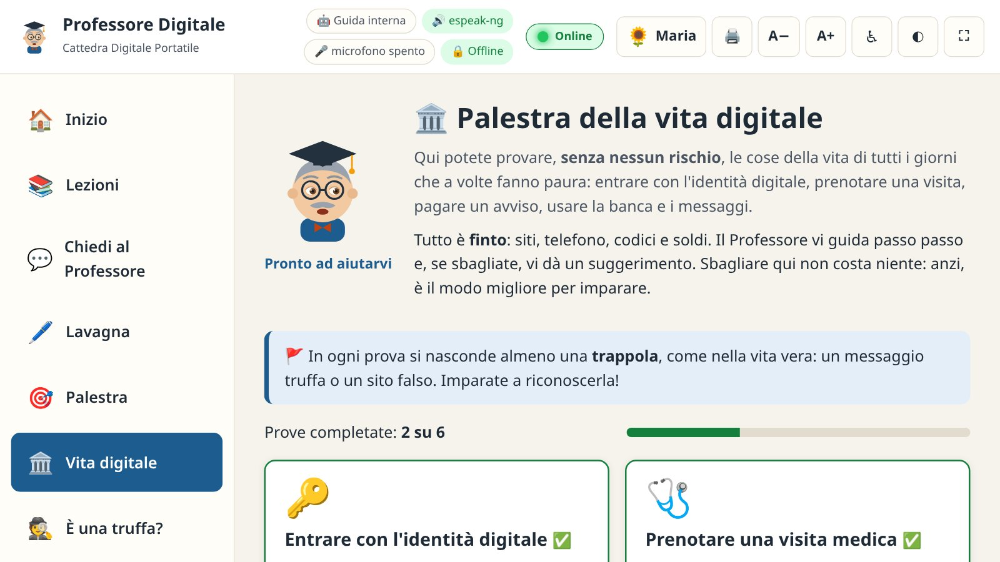
Figura 19. La Palestra della vita digitale: le prove già fatte hanno il segno ✅ e la barra
mostra quante ne avete completate.
Prova
Che cosa si impara
La trappola da riconoscere
🔑
Entrare con l'identità digitale circa 10 minuti
Cercare il sito vero del Comune, entrare con
l'identità digitale (come lo SPID o la CIE), confermare sul telefono, scaricare il certificato di residenza e uscire.
Un annuncio falso in cima
alla ricerca; un SMS di un finto «operatore» che chiede il codice.
🩺
Prenotare una visita medica circa 10 minuti
Come il CUP: codice fiscale, tessera sanitaria e
codice della ricetta, scelta del giorno, SMS di conferma. Poi si impara a disdire.
Un SMS che chiede 2 € con un collegamento per
«confermare» la prenotazione.
🧾
Pagare un avviso (tassa rifiuti, bollo) circa 10 minuti
Copiare dalla lettera il codice
dell'avviso, controllare ente e importo, pagare con l'app della banca senza scrivere numeri di carta, salvare la ricevuta.
Un'email
«avviso scaduto, multa» che arriva da un indirizzo strano.
🏦
La banca online circa 15 minuti
Entrare nel conto, leggere saldo e movimenti, trovare un
addebito che non si conosce, fare un bonifico al nipote controllando IBAN, nome e importo.
Un SMS «carta bloccata» con un collegamento;
la telefonata di un finto «ufficio sicurezza» che vuole il codice.
💬
Messaggi e videochiamate circa 10 minuti
Scrivere alla figlia, mandare una foto e un
messaggio vocale, fare una videochiamata.
Un'amica che chiede il codice arrivato per SMS; «Ciao mamma, ho cambiato numero» con una richiesta
di soldi.
📧
La posta elettronica circa 15 minuti
Rispondere alla nipote con una foto allegata, eliminare
le email e svuotare il cestino.
Sei email: tre vere e tre truffe, da riconoscere una per una.
Come si svolge una prova
Fate clic sul riquadro di una prova (in basso c'è scritto ▶ Inizia, oppure 🔁 Rifai se l'avete già fatta). In alto c'è sempre la fascia gialla 🧪 PROVA: vi ricorda che è una simulazione e che nessun dato
esce dal computer.
Nella nuvoletta il Professore dice che cosa fare, un passo alla volta, e lo legge a voce. Sotto c'è la finta finestra del browser, con la barra
dell'indirizzo e il lucchetto 🔒; accanto, quando serve, il telefono finto e un foglietto con i dati da copiare (la tessera sanitaria,
la ricetta, la lettera del Comune).
Se sbagliate, il Professore dà un suggerimento 💡 e conta i «piccoli sbagli», senza nessuna punizione. Se un campo è sbagliato due volte,
compare il pulsante ✍️ Compila per me. Il pulsante 💡 Aiutami ripete il passo e fa lampeggiare il punto giusto.
Quando arriva la trappola (un SMS, un'email, una telefonata), fermatevi e leggete con calma: chi scrive? Che cosa chiede? Mette fretta?
Alla fine compare la medaglia 🏅 con l'elenco «Da ricordare nella vita reale» e le competenze digitali allenate (capitolo 14).
🔁 Rifai ricomincia la prova; ✕ Esci la interrompe in qualsiasi momento.
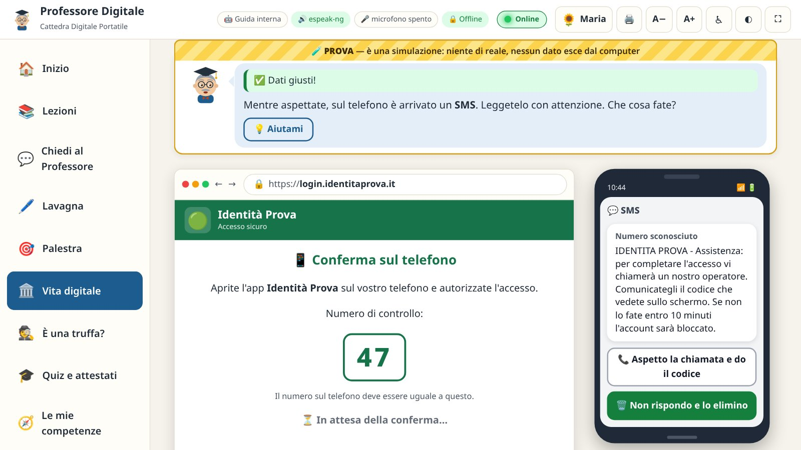
Figura 20. «Entrare con l'identità digitale»: mentre si aspetta la conferma,
sul telefono finto arriva un SMS che chiede di dire il codice a un «operatore». È la trappola: la risposta giusta è «Non rispondo e lo elimino».
Assomiglia, ma non è ugualeLe prove imitano i passi veri dello SPID, della CIE, del CUP, dei pagamenti
pagoPA e della banca online, ma le schermate reali possono essere diverse da un ente all'altro. Nella vita reale non date mai a nessuno password,
PIN e codici che arrivano sul telefono. Nel dubbio, chiedete allo sportello del Comune, alla farmacia, alla banca o a una persona di fiducia.
Per il facilitatoreProiettate una prova e fermatevi davanti alla trappola: il gruppo decide insieme che cosa fare,
poi si legge la spiegazione del Professore. Le prove si possono ripetere quante volte si vuole: la seconda volta i passi fanno già meno paura.
🕵️ «È una truffa?»
Vi è arrivato un SMS strano, un'email, un messaggio su WhatsApp, oppure una telefonata che vi ha messo in agitazione? Aprite 🕵️ È una truffa?
dal menu a sinistra o dalla pagina Inizio.
Se volete, scegliete che cos'è: SMS, email, WhatsApp o altro messaggio, telefonata, sito, oppure «Non so».
Mettete il testo nel riquadro: incollatelo (tasto destro del mouse → Incolla, oppure Ctrl + V), scrivetelo,
oppure premete 🎤 Detta e leggetelo ad alta voce (se il microfono è configurato). Per una telefonata, raccontate con parole vostre che cosa vi hanno detto.
Premete 🔍 Controlla. Il controllo avviene sul computer, senza Internet, in un attimo.
Leggete il giudizio e soprattutto il riquadro ✅ Cosa fare adesso.
Il giudizio
Che cosa vuol dire
🔴
Molto probabilmente è una truffa
Ci sono segnali gravi: richiesta di codici o soldi, collegamenti falsi, minacce. Non rispondete e non cliccate.
🟠
Attenzione: ci sono segnali sospetti
Qualcosa non convince. Prima di fare qualsiasi cosa, verificate con i contatti ufficiali.
🟢
Non vedo segnali tipici di truffa — ma nel dubbio verificate
Non ci sono i segnali più comuni. Non è una garanzia: se il messaggio chiede soldi, codici o dati, fermatevi comunque.
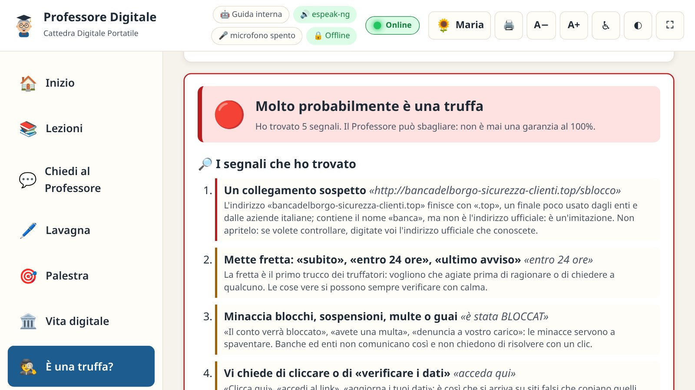
Figura 21. Il controllo di un finto SMS della banca: giudizio rosso e, sotto, i segnali trovati,
ognuno con la sua spiegazione e le parole sospette tra virgolette.
Sotto il giudizio il Professore elenca 🔎 i segnali che ha trovato (per esempio un collegamento che imita il nome della banca, la fretta
«entro 24 ore», la minaccia di blocco, la richiesta di codici o PIN, il pacco «in giacenza», il premio, «ho cambiato numero», il finto carabiniere,
l'app per il controllo a distanza) e spiega perché sono pericolosi. Seguono il testo con le parti sospette evidenziate, i passi di
✅ Cosa fare adesso e il riquadro ⚠️ Se avete già dato dati o soldi: chiamare subito la banca, cambiare le password, conservare i messaggi,
denunciare alla Polizia Postale, ai Carabinieri o alla Polizia, senza vergogna.
🔊 Leggi fa leggere tutto al Professore; 🖨️ Stampa questo controllo prepara un foglio da portare in banca, alla posta o a un familiare.
🤖 Chiedi anche all'IA compare solo se l'intelligenza artificiale locale è configurata: dà un secondo parere, sempre sul computer.
Per imparare ci sono dieci esempi pronti («Carta bloccata», «Pacco in giacenza», «Ciao mamma», «Finto carabiniere», «Rimborso del fisco»…):
otto sono truffe e due sono messaggi veri.
Più in basso, 📜 Le 10 regole d'oro contro le truffe, da leggere o far leggere ad alta voce con 🔊 Leggi le regole.
Le 10 regole d'oro, in breve
Nessuno vi chiede i codici.
La fretta è un campanello d'allarme.
Non cliccate sui collegamenti.
Verificate voi, con i numeri ufficiali.
«Ciao mamma, ho cambiato numero»: chiamate il numero vecchio.
Nessuno viene a ritirare soldi o gioielli.
Niente app su richiesta di sconosciuti.
Nessuno regala niente.
Attenzione ai pagamenti strani.
Il segreto è un trucco: parlatene subito con qualcuno.
🔒 La vostra riservatezza
Il testo controllato non viene salvato. Nel riquadro 🕑 Ultimi controlli restano solo gli ultimi dieci, con data, tipo, giudizio e un'anteprima
breve in cui i numeri lunghi sono coperti da pallini (••••). Il pulsante 🗑️ Cancella lo storico li toglie tutti.
Il Professore può sbagliareRiconosce i trucchi più comuni, ma non è mai una garanzia al 100%:
i truffatori cambiano spesso le parole. Nel dubbio verificate sempre voi, chiamando il numero scritto sul retro della carta, sulla bolletta o sul contratto,
mai quello scritto nel messaggio. Se qualcuno dice di essere delle forze dell'ordine e chiede soldi o gioielli, chiamate il 112.
✉️ «Spiegami questa lettera»
Una bolletta con tante voci, una multa, un avviso della tassa sui rifiuti, una lettera dell'INPS, un avviso di giacenza nella cassetta della posta:
le parole della burocrazia mettono in difficoltà molte persone. Aprite ✉️ Spiegami una lettera dal menu a sinistra, oppure il riquadro
Spiegami questa lettera nella pagina Inizio: il Professore legge la lettera e ve la spiega con parole semplici.
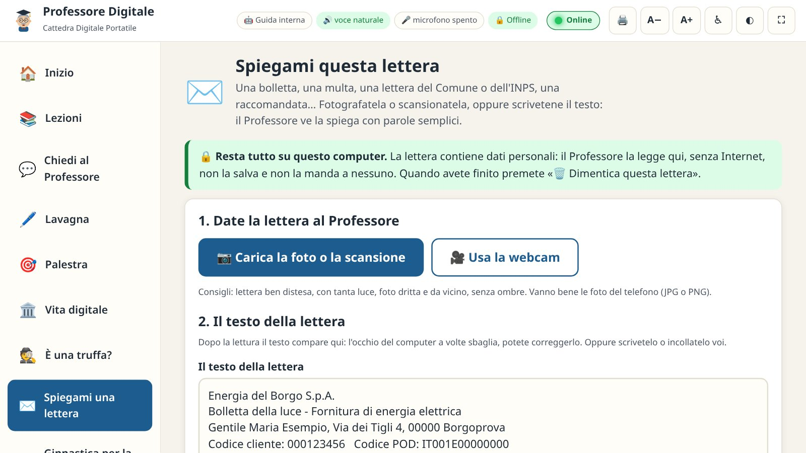
Figura 22. La pagina: in alto il promemoria sulla riservatezza, poi i pulsanti per la foto o la webcam e il riquadro del testo.
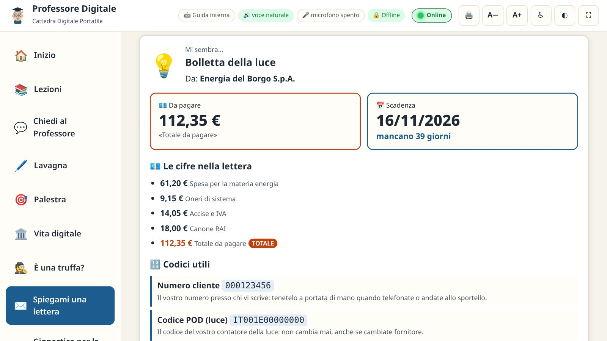
Figura 23. La spiegazione di una bolletta della luce d'esempio: che cos'è, chi la manda, quanto pagare, entro quando, le cifre e i codici utili.
1 · Date la lettera al Professore
Ci sono tre modi, e si possono usare insieme:
📷 Carica la foto o la scansione: scegliete la foto fatta con il telefono e passata al computer, oppure il file dello scanner (JPG o PNG).
Il Professore la mette dritta, la rende più leggibile e la legge sul computer, senza Internet: la prima volta ci vuole circa un minuto sui computer vecchi.
Se la foto è storta, ↺ Ruota e ↻ Ruota la girano; 📖 Leggi la lettera la rilegge.
🎥 Usa la webcam: tenete la lettera ferma davanti alla webcam e premete 📸 Scatta la foto. La webcam si accende solo quando premete il pulsante
e si spegne da sola dopo la foto o quando cambiate pagina.
Scrivete o incollate il testo nel riquadro «Il testo della lettera» (tasto destro → Incolla, oppure Ctrl + V), per esempio da un'email
o da un PDF; basta anche ricopiare a mano le righe più importanti.
Dopo la lettura di una foto, il testo compare nel riquadro: l'«occhio» del computer a volte sbaglia una cifra o una lettera, perciò controllatelo e correggetelo se serve.
Poi premete 💡 Spiegamela (oppure Ctrl + Invio).
Per una buona fotoLettera ben distesa sul tavolo, tanta luce, telefono dritto sopra il foglio e abbastanza vicino,
nessuna ombra della mano. Una pagina alla volta. I PDF non si leggono come foto: apriteli, selezionate il testo e incollatelo.
Nella versione portatile.html (e sui browser troppo vecchi) il Professore non può leggere le foto: si scrive o si incolla il testo, e la spiegazione funziona allo stesso modo.
2 · La spiegazione
Che cosa vedete
Che cosa vuol dire
Mi sembra…
Il tipo di lettera (bolletta della luce, del gas, dell'acqua o del telefono, avviso di pagamento di tasse e tributi, multa, cartella
dell'Agenzia delle Entrate, comunicazione dell'INPS, avviso di giacenza, sollecito, prenotazione o referto sanitario, contratto, lettera della banca) e chi la manda.
💶 Da pagare
Il totale da pagare, scelto tra le cifre della lettera; sotto, nell'elenco «Le cifre nella lettera», tutte le altre somme con la loro descrizione.
📅 Scadenza
La data entro cui pagare, rispondere o ritirare, con il conto alla rovescia («mancano 39 giorni», «è domani!», «già scaduta»).
Per le visite: l'appuntamento.
⏳ Tempi da rispettare
Frasi come «entro 60 giorni dalla notifica», spiegate: per fare ricorso, per pagare con lo sconto, per ritirare la raccomandata.
🔢 Codici utili
Codice avviso pagoPA, numero cliente, POD e PDR dei contatori, numero del verbale, targa, protocollo, IBAN (controllato: se non torna, o se è un conto estero, il Professore lo dice).
✅ Cosa fare, passo passo
I passi prudenti per quel tipo di lettera, per esempio «confrontate con le bollette precedenti», «segnatevi il giorno in cui avete ricevuto la multa»,
«pagate solo con i modi scritti sulla lettera vera».
📖 Le parole difficili
Il significato delle parole della burocrazia presenti nella lettera: conguaglio, accise, oneri di sistema, mora, notifica, autotutela, giacenza, indebito…
Più in basso, 🖍️ Il testo con le parti importanti evidenziate mostra la lettera con il totale, le cifre, le scadenze, i codici e i tempi colorati.
🔊 Leggi la spiegazione la fa leggere al Professore, 🖨️ Stampa la spiegazione prepara un foglio da portare al CAF, al patronato o a un familiare.
Per provare senza una lettera vera ci sono sei esempi inventati: bolletta della luce, multa, TARI del Comune, lettera INPS, avviso di giacenza e una falsa bolletta.
3 · Il controllo anti-truffa
Il Professore controlla anche se la lettera ha i segnali delle lettere false: pagamento con ricariche, buoni regalo o criptovalute, IBAN di un conto estero,
fretta («entro 24 ore»), collegamenti da cliccare, richiesta di codici. In quel caso compare in cima un riquadro rosso o arancione
«Attenzione: potrebbe essere una lettera FALSA»: non pagate e verificate con i contatti che conoscete già (la bolletta vecchia, il contratto, lo sportello).
🤖 Chiedi anche all'IA un riassunto compare solo se l'intelligenza artificiale locale è configurata: dà un secondo parere breve, sempre sul computer.
È facoltativo: la spiegazione principale non ne ha bisogno.
🔒 Niente viene salvatoLa lettera contiene dati personali: il Professore la legge sul computer, senza Internet, non la salva
e non la manda a nessuno. Restano solo dei conteggi anonimi (quante lettere, di che tipo), mai il testo. Quando avete finito premete
🗑️ Dimentica questa lettera: testo, foto e spiegazione spariscono anche dallo schermo.
Una spiegazione, non un consiglio legaleIl Professore legge la lettera con regole semplici e può sbagliare:
controllate sempre cifre e date sulla lettera vera. Per ricorsi, rate, pensioni e tasse chiedete al CAF, al patronato, all'ufficio del Comune o a una persona di fiducia,
portando la lettera con voi. I referti medici si spiegano con il proprio medico.
§§c13§§
13
CAPITOLO
Ginnastica per la mente
Pochi minuti al giorno di giochi sereni per tenere la mente allenata, come una passeggiata quotidiana: memoria, attenzione, parole e i conti
di tutti i giorni. Non c'è fretta e non si perde mai: ogni partita è un piccolo allenamento. E intanto si prende confidenza con il mouse e la tastiera.
Si apre dal menu a sinistra, 🧩 Ginnastica per la mente, oppure dal riquadro nella pagina Inizio, che dice qual è il gioco di oggi.
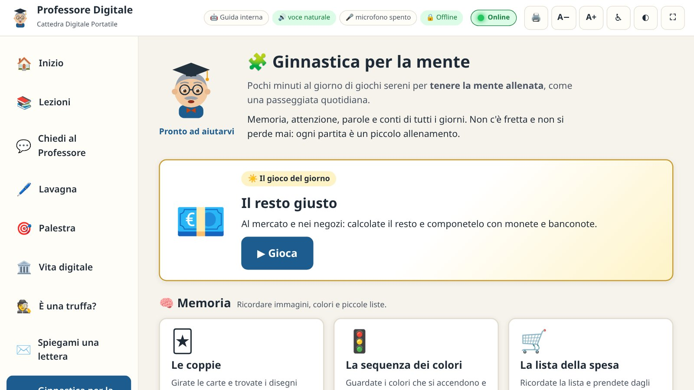
Figura 24. La pagina della Ginnastica per la mente: in alto il gioco del giorno, sotto i giochi divisi per tipo.
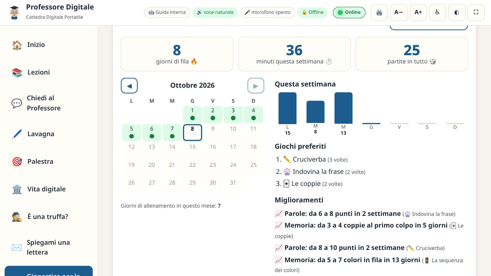
Figura 25. Il diario di Maria: 8 giorni di fila, il calendario del mese, i minuti della settimana, i giochi preferiti e i miglioramenti.
☀️ Il gioco del giorno
Ogni giorno il Professore propone un gioco diverso, lo stesso per tutta la giornata (anche il cruciverba di oggi è uguale per tutti). Premete ▶ Gioca.
Quando l'avete fatto compare «✅ Fatto oggi!»: domani ne troverete un altro. Naturalmente si può giocare a qualsiasi gioco, quando si vuole.
I dodici giochi
Gioco
Come si gioca
I tre livelli
🧠 Memoria · ricordare immagini, colori e piccole liste
🃏
Le coppie
Si girano le carte due alla volta per trovare i disegni uguali (frutta, fiori, animali, oggetti di casa).
6, 12 o 16 carte
🚦
La sequenza dei colori
Si accendono dei colori, uno dopo l'altro: si ripetono nello stesso ordine. A ogni giro se ne aggiunge uno; al primo sbaglio la sequenza si rivede con calma.
fino a 5, 7 o 9 colori
🛒
La lista della spesa
Si legge la lista, poi si prendono dagli scaffali i prodotti giusti.
3, 5 o 7 prodotti
👀 Attenzione · osservare con calma e notare i particolari
🔍
Trova le differenze
Due disegni quasi uguali: si tocca ciò che è cambiato.
3, 4 o 6 differenze
🔤 Parole · giocare con lettere, parole e frasi
✏️
Cruciverba
Il cruciverba di oggi, con definizioni facili. Si scrive con la tastiera o con quella grande sullo schermo; ✔️ Controlla colora in arancione
le lettere da rivedere, 💡 Rivela una lettera e 📖 Rivela la parola aiutano. 🖨️ Stampa su carta lo prepara da fare con la penna.
griglia piccola, media o grande (da 5 a 14 parole)
🎡
Indovina la frase
Proverbi, modi di dire, canzoni e film da scoprire una lettera alla volta, come al gioco della ruota. Le consonanti sono gratis,
le vocali costano un punto, ogni lettera sbagliata toglie un cuoricino. Si può anche scrivere tutta la frase. Alla fine, il significato o una curiosità.
8, 6 o 4 cuoricini
🔤
Parole mescolate
Si rimettono in ordine le lettere per trovare la parola; l'aiutino dice l'argomento e la prima lettera.
parole di 4–5, 6–7 o 8–10 lettere
📜
Completa il proverbio
Si sceglie la parola che manca e si scopre che cosa significa il proverbio.
5, 6 o 8 proverbi
🔗
Parole a catena
Una parola tira l'altra: si scrive una parola che comincia con la fine di quella precedente, poi tocca al Professore.
ultima lettera, ultime due lettere, parole più lunghe
🔢 Calcolo · i conti di tutti i giorni, senza fretta
💶
Il resto giusto
Al mercato e nei negozi: si calcola il resto e lo si compone con monete e banconote.
prezzi tondi, centesimi, tre prodotti
🧭 Logica · ragionare, collegare, scegliere
🕵️
Trova l'intruso
In ogni gruppo una parola non c'entra: si trova e si scopre perché.
gruppi di 4, 5 o 6 parole
🕰️
Che ore sono?
Si legge l'ora sull'orologio a lancette, e si sceglie l'orologio giusto per un'ora scritta.
in punto e mezza, quarti d'ora, ogni 5 minuti
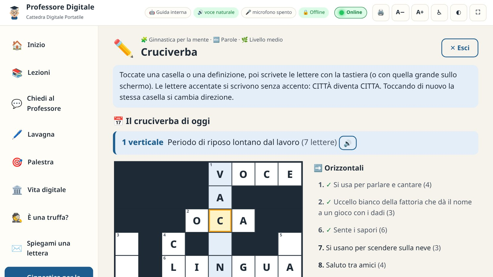
Figura 26. Il cruciverba di oggi, livello medio: la definizione in uso è in alto, le parole già trovate hanno il segno ✓.
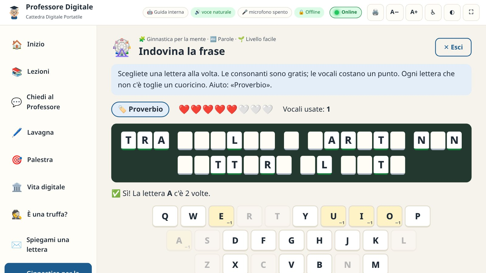
Figura 27. «Indovina la frase»: un proverbio, cinque cuoricini rimasti e la tastiera grande con le lettere già provate.
Come si gioca
Fate clic su un gioco e scegliete il livello: 🌱 Facile, 🌿 Medio o 🌳 Difficile. Il Professore segna quello «Consigliato per voi»:
la prima volta il facile, poi sale se avete preso tre stelle e scende se la partita è stata faticosa.
In alto il Professore spiega che cosa fare e lo legge a voce; 🔊 Leggi lo ripete. 💡 Un aiutino dà un suggerimento quando serve.
Il tempo non conta per il punteggio. Chi vuole può vederlo con ⏱️ Mostra il tempo. ✕ Esci torna all'elenco in qualsiasi momento.
Alla fine compaiono da una a tre stelle ★, i punti, una frase di incoraggiamento e i minuti di allenamento. 🔁 Rigioca, oppure, con tre stelle, prova il livello successivo.
📔 Il diario
In fondo alla pagina il diario si riempie da solo: i giorni di fila 🔥, i minuti di questa settimana, le partite in tutto, un calendario con un pallino
verde nei giorni di allenamento (con ◀ e ▶ si vedono i mesi passati), le barre della settimana, i giochi preferiti e i miglioramenti degli ultimi due mesi
(per esempio «Memoria: da 5 a 7 colori in fila in 13 giorni»). 🖨️ Stampa il diario prepara un foglio con il nome, il calendario e le ultime partite.
Per il facilitatoreUn gioco all'inizio dell'incontro è un ottimo riscaldamento, e il cruciverba stampato
è un bel compito per casa. Proiettato, «Indovina la frase» diventa un gioco di gruppo: si propongono le lettere a voce.
Un passatempo serenoQuesti giochi servono ad allenarsi con piacere: non sono esami né esercizi medici e non misurano la salute
della memoria. Se avete dubbi sulla vostra memoria, parlatene con il medico. I risultati restano solo su questo computer, nel percorso della persona che sta giocando (capitolo 14).
§§c14§§
14
CAPITOLO
Il vostro percorso personale
Ognuno impara con il suo passo. Il Professore riconosce chi sta usando il computer, ripropone al momento giusto le domande sbagliate,
ogni giorno ne fa una nuova e mostra quali competenze digitali avete già raggiunto.
👥 Persone che usano questo computer
Nei centri anziani, nelle biblioteche e in famiglia lo stesso computer è usato da più persone. Ognuna può avere i suoi progressi (lezioni, quiz,
attestati, Palestra, Vita digitale, ripasso), la sua conversazione con il Professore e il suo nome sugli attestati. Le impostazioni (colori,
testo grande, voce, intelligenza artificiale) restano uguali per tutti.
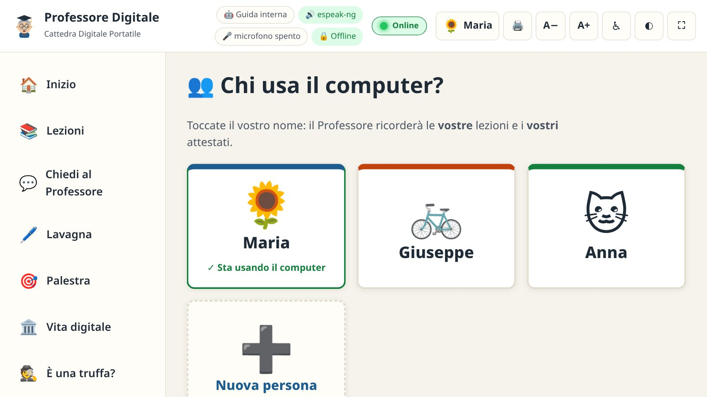
Figura 28. «Chi usa il computer?»: ogni persona ha il suo nome e un disegno per riconoscersi subito.
Maria sta usando il computer; con «Nuova persona» se ne aggiunge un'altra.
Aggiungere una persona
Aprite ⚙️ Impostazioni e cercate il riquadro 👥 Persone che usano questo computer, poi premete 👥 Gestisci le persone.
Premete ➕ Nuova persona, scrivete il nome (se ci sono due «Maria», aggiungete l'iniziale del cognome) e scegliete un disegno: un fiore,
un gatto, una bicicletta…
Premete ✓ Crea. Per cominciare a usarla, toccate il suo nome: il Professore la saluta e il percorso parte da zero.
Cambiare persona
Quando le persone sono almeno due, in alto compare un pulsante con il disegno e il nome di chi sta usando il computer: premetelo e toccate il vostro nome.
All'avvio il Professore chiede da solo «Chi usa il computer?»; se non volete la domanda, togliete la spunta a «Chiedi chi sta usando il computer
all'avvio» nello stesso riquadro delle Impostazioni.
Rinominare o eliminare
In ⚙️ Gestisci si cambiano il nome e il disegno. 🗑️ Elimina chiede due conferme, perché lezioni, quiz, attestati e conversazioni di quella
persona non si potranno più recuperare. Non si può eliminare chi sta usando il computer in quel momento, e deve restare almeno una persona.
Chi aggiorna dalla 3.1 o da primaNon perde nulla: i progressi che c'erano diventano quelli della prima
persona, con il nome dell'allievo già scritto nelle impostazioni. Le altre persone si aggiungono quando servono. Esporta progressi salva i progressi
della persona che sta usando il computer.
🔁 Il ripasso intelligente
Ogni domanda sbagliata nei quiz delle lezioni e nei grandi quiz viene messa da parte e ritorna nel Ripasso, al momento giusto. Il Professore usa
il metodo delle scatole, semplice e molto efficace:
Che cosa succede
Quando torna la domanda
La sbagliate (in un quiz o nel ripasso)
Va nella scatola 1 e torna domani
Rispondete bene nel ripasso
Sale di scatola: torna dopo 3, poi 7, 14 e 30 giorni
Rispondete bene anche dopo la quinta scatola
È 🏅 imparata: non torna più
Nella pagina Inizio il riquadro 🔁 Ripasso dice quante domande vi aspettano oggi. Premete ▶ Inizia il ripasso: al massimo dieci domande per volta,
con calma e senza voti; 🔊 Leggi la domanda le fa leggere al Professore. Alla fine vedete quante risposte giuste avete dato, quali domande sono salite
di scatola e da quanti giorni di fila state ripassando 🔥.
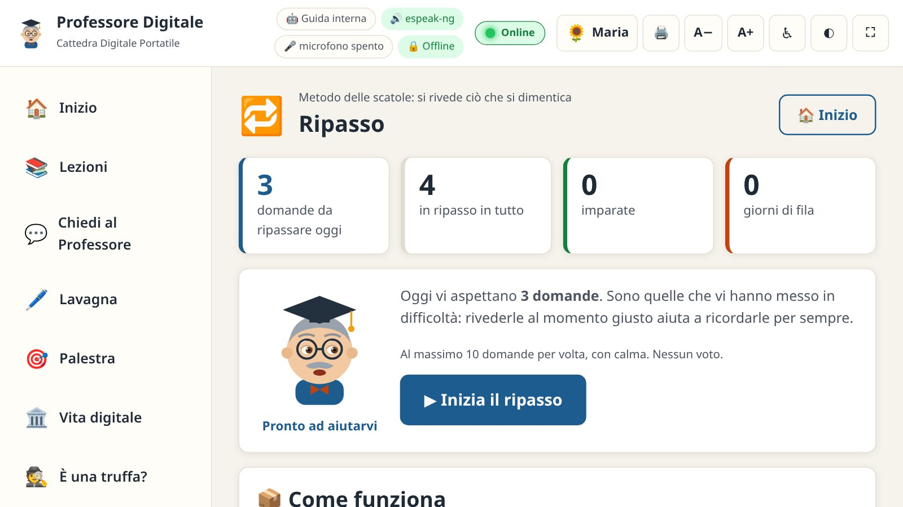
Figura 29. Il Ripasso: tre domande da rivedere oggi, quattro in tutto.
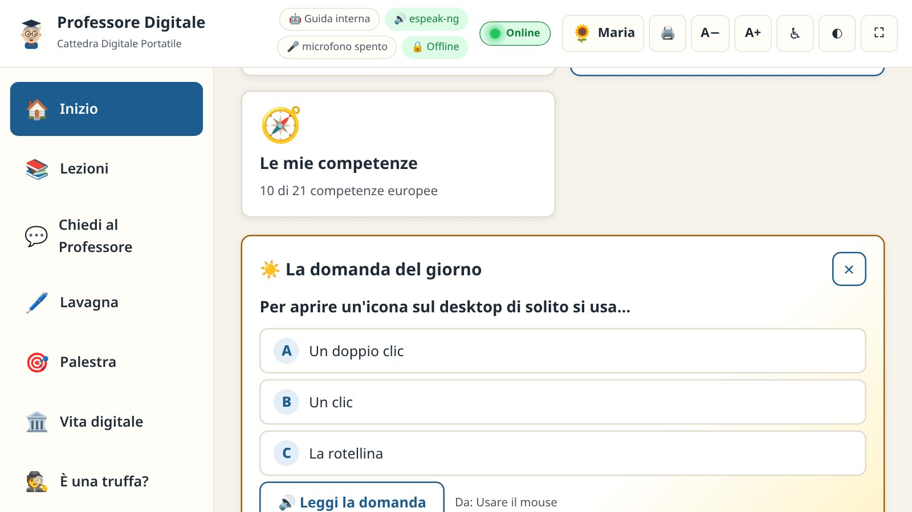
Figura 30. La domanda del giorno nella pagina Inizio, sotto il riquadro «Le mie competenze».
☀️ La domanda del giorno
In fondo alla pagina Inizio, ogni giorno, c'è una domanda: una di quelle da ripassare oppure una presa dalle lezioni del corso e dai grandi quiz.
Resta la stessa per tutto il giorno. Fate clic sulla risposta: subito vedete se è giusta, con la spiegazione; se è sbagliata, finisce nel ripasso.
Il pulsante ✕ la chiude fino a domani. Per non vederla più: Impostazioni → 🔁 Ripasso e domanda del giorno, togliete la spunta
a «Mostra nella pagina Inizio una domanda del giorno». Nello stesso riquadro Azzera il ripasso svuota tutto (va premuto due volte).
🧭 Le mie competenze digitali
L'Unione europea ha descritto le competenze digitali che servono a tutti i cittadini nel quadro DigComp 2.2: 21 competenze divise
in 5 aree. La pagina 🧭 Le mie competenze (dal menu a sinistra o dal riquadro nell'Inizio) mostra quante ne avete già raggiunte.
Area
In parole semplici
🔎
1. Alfabetizzazione su informazioni e dati
Cercare le informazioni, capire se sono affidabili, conservarle in ordine.
Scrivere, modificare, rispettare le regole su foto e testi altrui.
🛡️
4. Sicurezza
Proteggere il dispositivo, i dati personali, la salute e l'ambiente.
🧩
5. Risolvere problemi
Cavarsela quando qualcosa non va e capire che cosa si ha ancora da imparare.
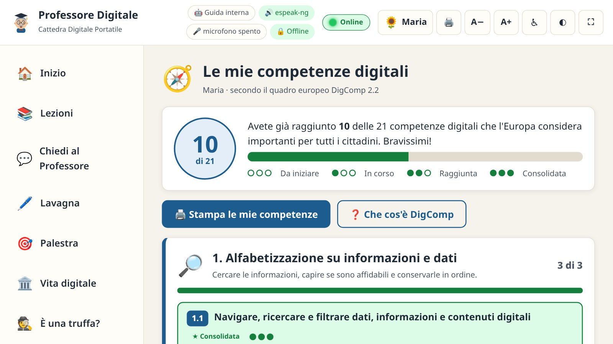
Figura 31. Le mie competenze: Maria ne ha raggiunte 10 su 21. Sotto, per ogni area,
le competenze con il loro stato e le attività che le allenano.
Per ogni competenza c'è una spiegazione semplice e l'elenco delle attività che la allenano (lezioni, prove della Vita digitale, esercizi della
Palestra): quelle già fatte hanno il segno ✓ e un clic le apre. Lo stato è indicato con dei pallini:
Stato
Che cosa vuol dire
○○○ Da iniziare
Nessuna attività collegata è stata ancora fatta.
●○○ In corso
Avete cominciato: una lezione vista in parte, una prova iniziata, un esercizio della Palestra.
●●○ Raggiunta
Avete completato almeno una lezione o una prova della Vita digitale collegata.
●●● Consolidata
Due attività, oppure il quiz di una lezione tutto giusto.
🖨️ Stampa le mie competenze prepara un foglio con il nome, la data e lo stato di ogni competenza; ❓ Che cos'è DigComp lo spiega meglio.
Un'indicazione, non un diplomaGli stati servono a orientarsi e a vedere i progressi.
Non sono una certificazione ufficiale delle competenze e non corrispondono ai livelli misurati con gli esami di certificazione.
§§c15§§
15
CAPITOLO
Voci, saluti, promemoria, stampa e «Online»
Il Professore è «presente»: parla con una voce naturale maschile o femminile a scelta, vi accoglie quando aprite il programma,
vi dà un consiglio se restate fermi, ricorda le vostre cose da fare e vi saluta quando uscite. Tutto si può spegnere in Impostazioni → Voce.
Le voci italiane, maschili e femminili
Dalla 3.3 l'installatore contiene tre voci naturali italiane, più naturali di prima, che funzionano senza Internet:
Voce
Com'è
👨
Giorgio
Voce maschile. È la voce predefinita, perché il Professore è un uomo.
👩
Serena
Voce femminile, in italiano standard.
👩
Paola
Voce femminile, morbida e chiara, già presente nelle versioni precedenti.
Il Professore fa anche una piccola pausa tra una frase e l'altra, come quando si parla davvero: le spiegazioni lunghe si seguono meglio.
La voce «Riccardo» delle versioni 3.0–3.2, dal suono un po' meccanico, è stata tolta: chi l'aveva scelta passa da solo a Giorgio, senza fare nulla.
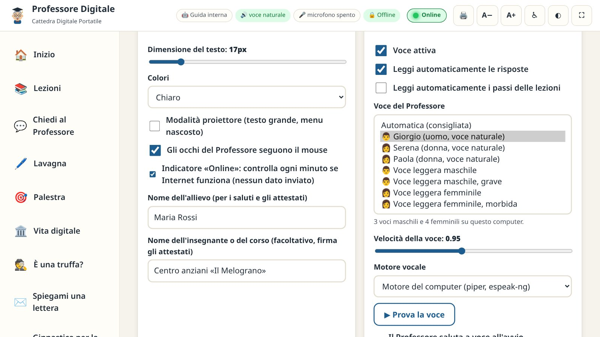
Figura 32.Impostazioni → Voce → «Voce del Professore»: Giorgio, Serena e Paola in cima all'elenco,
poi le altre voci del computer, 👨 maschili e 👩 femminili (qui l'elenco è aperto per intero; nel programma si apre con un clic).
Le voci naturali si usano su Windows 7 e successivi a 64 bit. Nello stesso elenco compaiono anche tutte le voci italiane di Windows
(per esempio «Microsoft Elsa», donna, e «Microsoft Cosimo», uomo), ciascuna con il suo genere. Sui Windows a 32 bit, su XP e su Vista si usano solo le voci di Windows.
Aprite ⚙️ Impostazioni e cercate il riquadro 🔊 Voce.
Fate clic su Voce del Professore e scegliete 👨 Giorgio, 👩 Serena o 👩 Paola. Appena scelta, il Professore dice «Buongiorno! Questa è la mia nuova voce.».
Se volete, regolate la velocità (per le persone anziane tra 0,85 e 0,95) e premete ▶ Prova la voce.
Con Automatica (consigliata) il Professore usa Giorgio, poi Serena, poi Paola, poi la voce di Windows. Sotto l'elenco si legge quante voci maschili e femminili ci sono sul computer.
Le voci Giorgio (di kirys79) e Serena (di committa) sono state create e condivise dalla comunità con licenza Creative Commons CC BY 4.0, che chiede di citarne gli autori;
Paola ha licenza MIT. Tutte funzionano con il motore libero Piper.
Il saluto all'avvio
Figura 33. Il saluto della mattina, con la lezione da continuare e i promemoria.Figura 34. Dopo qualche minuto senza attività, un consiglio.
Quando aprite il programma, il Professore compare in una nuvoletta in basso a destra e saluta a voce secondo l'ora del computer:
«Buongiorno» fino alle 13, «Buon pomeriggio» fino alle 18, poi «Buonasera», con il nome dell'allievo se è stato scritto.
Propone la lezione da continuare (▶ Continua la lezione oppure Più tardi) e dice quanti promemoria avete. Se è molto tardi (dopo le 22)
consiglia qualcosa di breve, e poi a riposare. Il saluto si fa una volta sola per finestra.
Su alcuni computer il browser permette di parlare solo dopo il primo clic: in quel caso il Professore saluta a voce appena toccate il mouse o la tastiera.
I consigli e l'attesa
Se nessuno usa il programma per qualche minuto (circa 3), il Professore propone un consiglio: continuare la lezione, provare il Grande Quiz,
allenarsi in Palestra, scoprire la Cultura generale o FeniceOS, fare una domanda, alzarsi a sgranchire le gambe. Dopo altri minuti ne propone un secondo,
diverso dal primo. I pulsanti della nuvoletta portano direttamente dove serve; No, grazie la chiude.
Dopo circa 10 minuti di silenzio dice «Mi metto in attesa» e socchiude gli occhi: In attesa… muovete il mouse per svegliarmi.
Appena muovete il mouse o premete un tasto vi accoglie con «Bentornati!». Il Professore non interrompe mai mentre parla, mentre ascolta,
durante un esercizio della Palestra o una stampa.
Figura 35. Il Professore in attesa, con gli occhi socchiusi.
I promemoria
Figura 36. I promemoria in fondo alla pagina Inizio.
In fondo alla pagina Inizio, nel riquadro 📝 I miei promemoria, scrivete le cose da non dimenticare («Chiamare il medico per la ricetta»,
«Portare la chiavetta giovedì») e premete ➕ Aggiungi. Quando una cosa è fatta, premete ✓ Fatto e sparisce. Il Professore ricorda quanti promemoria
ci sono quando saluta, ne cita uno tra i consigli e li legge tutti quando uscite.
Il pulsante 🚪 Esci
Figura 37. L'uscita di sera: i promemoria, la prossima lezione, il consiglio di spegnere bene il computer e la buona notte.
In fondo al menu a sinistra, 🚪 Esci apre una finestra di congedo: il Professore elenca i promemoria, ricorda la prossima lezione,
consiglia di salvare il lavoro e spegnere il computer dal menu e saluta secondo l'ora («buona giornata», «buon pomeriggio», «buona serata» oppure,
se è tardi, «Buona notte, e sogni d'oro!»). Con la voce attiva legge tutto e poi chiude il programma da solo; altrimenti premete 🚪 Esci adesso.
↩ Resto ancora annulla. Alla fine compare «Il Professore si è chiuso. Ora potete chiudere questa finestra».
Il pulsante 🖨️ Stampa
Figura 38. Il menu di stampa durante una lezione.
Il pulsante 🖨️ nella barra in alto apre un piccolo menu con due scelte:
🖥️ Stampa questa pagina: ciò che vedete, senza menu e pulsanti.
📄 Stampa l'argomento, quando la pagina ne ha uno: la lezione intera con tutti i passi, gli schemi e il quiz (soluzioni in fondo);
tutta la conversazione in Chiedi al Professore; lezioni e domande di una materia di cultura, del libro o di FeniceOS; l'attestato.
Scorciatoia: Ctrl + Maiusc + P stampa subito l'argomento. Nella finestra di stampa potete anche scegliere «Salva come PDF».
L'indicatore «Online»
Accanto alle pastiglie in alto, ● Online si illumina di verde quando la connessione a Internet funziona davvero, ed è grigio con la scritta
«Non in linea» quando manca: utile per capire in un attimo se si può navigare o se il router ha un problema. Il Professore funziona benissimo in entrambi i casi.
Fate clic sull'indicatore per controllare subito.
Per saperlo, il programma prova al massimo una volta al minuto ad aprire e chiudere una connessione verso un server pubblico neutrale
(come 1.1.1.1 o 9.9.9.9): nessun dato viene inviato. Chi preferisce che il computer resti del tutto silenzioso può spegnerlo in
Impostazioni → Vista: l'indicatore diventa «Online: non controllato».
Cosa spegnere
Dove
Saluto a voce all'avvio
Impostazioni → Voce → «Il Professore saluta a voce all'avvio»
Promemoria e saluto all'uscita
Impostazioni → Voce → «All'uscita ricorda i promemoria e saluta»
Consigli e attesa
Impostazioni → Voce → «Quando nessuno lo usa per un po', il Professore dà qualche consiglio…»
Indicatore «Online»
Impostazioni → Vista → «Indicatore «Online»»
§§c16§§
16
CAPITOLO
Impostazioni e accessibilità
Ogni gruppo è diverso. Le impostazioni adattano la Cattedra alla vista, all'udito e al ritmo di chi la usa. Le scelte vengono salvate
e ritrovate al prossimo avvio.
Figura 39. La pagina delle impostazioni, divisa in riquadri: Vista, Voce, Intelligenza artificiale, Microfono, Dati, Contenuti, Aggiornamenti, Diagnostica, Informazioni.
👁️ Vista
Dimensione del testo da 14 a 34 punti (anche con A− / A+ in alto).
Colori: chiaro, scuro (riposante la sera o nelle stanze buie), alto contrasto giallo su nero per chi vede poco.
Modalità proiettore: testo grande e menu nascosto.
Gli occhi del Professore seguono il mouse: attivo di serie; spegnetelo se distrae.
Indicatore «Online»: attivo di serie; spegnetelo se non volete nessun controllo della connessione (capitolo 15).
Nome dell'allievo: per i saluti e gli attestati. Nome dell'insegnante o del corso (facoltativo): firma gli attestati e viene comunicato all'IA.
Figura 40. Colori ad alto contrasto.Figura 41. Modalità proiettore con colori scuri.
🔊 Voce
Voce attiva: l'interruttore generale. Leggi automaticamente le risposte (attivo di serie) e i passi delle lezioni (spento di serie).
Voce del Professore: Giorgio, Serena, Paola o una voce di Windows, maschile o femminile (capitolo 15).
Velocità da 0,60 a 1,40. Per le persone anziane si consiglia tra 0,85 e 0,95.
Motore vocale: «Automatico» usa le voci del computer e, in mancanza, la voce del browser. ▶ Prova la voce controlla volume e velocità.
Saluto all'avvio, promemoria e saluto all'uscita, consigli e attesa: tre interruttori, tutti attivi di serie.
🤖 Intelligenza artificiale e 🎤 microfono
Mostrano se l'IA (Ollama o il motore compatibile) e il riconoscimento vocale sono attivi, quale modello è in uso e quale è consigliato. Se qualcosa
manca, un collegamento porta a Configura IA e voce. Si può spegnere l'IA (per usare solo la guida interna) e decidere se inviare subito la domanda
dopo aver parlato. 🔄 Ricontrolla i componenti aggiorna lo stato dopo un'installazione.
👥 Persone, 🔁 ripasso e ♿ accessibilità
Dalla 3.2 ci sono anche i riquadri 👥 Persone che usano questo computer e 🔁 Ripasso e domanda del giorno (capitolo 14)
e ♿ Accessibilità (capitolo 17).
📦 Dati e progressi
Esporta progressi salva un file professore-digitale-progressi.json nella cartella Download, con lezioni, risultati dei quiz, attestati,
record della Palestra e promemoria; Importa lo ricarica (anche su un altro computer, anche Linux); Azzera progressi ricomincia il percorso e chiede
una seconda conferma. 📂 Cartella dei progressi la apre in Esplora file.
🧩 Contenuti aggiuntivi, 🔄 Aggiornamenti e 🩺 Diagnostica
Si possono importare pacchetti di domande, lezioni e quiz (file .json) senza reinstallare: l'elenco mostra anche i pacchetti già inclusi
(cultura, libro, FeniceOS, Grande Quiz). Il controllo degli aggiornamenti parte solo premendo il pulsante: se c'è una versione nuova il Professore la scarica,
ne verifica l'impronta e propone ▶ Installa adesso (capitolo 25). La Diagnostica riassume lo stato del sistema: utile da copiare quando si chiede aiuto.
§§c17§§
17
CAPITOLO
Accessibilità
Oltre al testo grande, ai colori ad alto contrasto e alla modalità proiettore (capitolo 16), il Professore offre quattro aiuti per chi vede poco,
per chi ha le mani poco ferme e per chi preferisce usare la voce. Si possono accendere e spegnere in ogni momento.
Dove si accendono
Con il pulsante ♿ nella barra in alto: si apre un piccolo menu con i quattro interruttori, il pulsante ◐ Attiva anche l'alto contrasto e
⚙️ Altre impostazioni.
Oppure in ⚙️ Impostazioni → ♿ Accessibilità, dove c'è anche l'elenco completo dei comandi a voce.
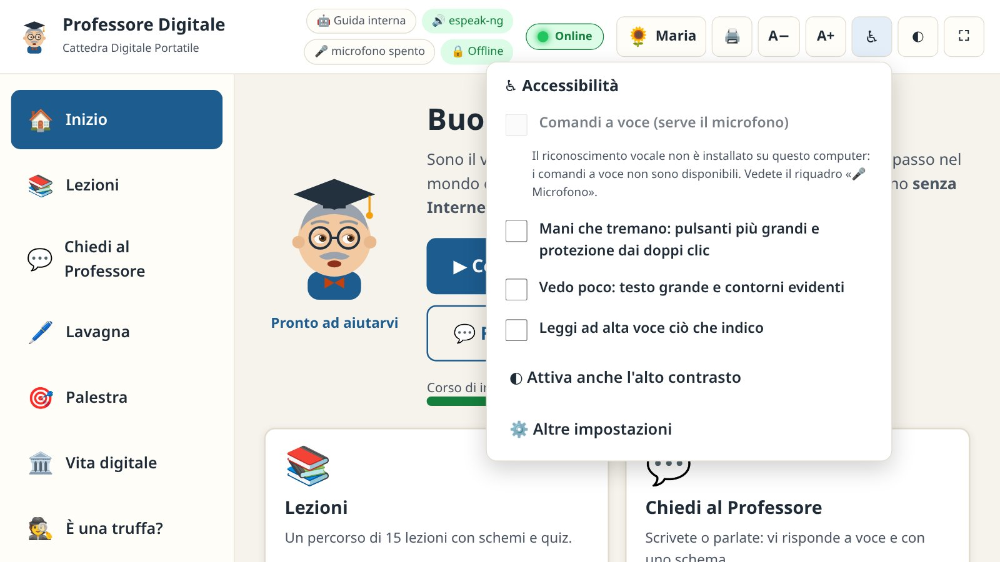
Figura 42. Il menu del pulsante ♿. Qui i comandi a voce sono grigi perché su questo
computer il riconoscimento vocale non è installato: il Professore lo spiega e indica dove attivarlo.
Aiuto
Che cosa fa
🎙️
Comandi a voce
Invece di cercare il pulsante, lo si dice: «avanti», «ripeti», «più grande», «lezioni»… Per funzionare serve il riconoscimento vocale, che si installa con Configura IA e voce sui Windows a 64 bit (capitolo 18);
nella versione portatile .html non è disponibile.
✋
Mani che tremano
Pulsanti, caselle e risposte dei quiz più grandi e più distanziati, freccia del mouse grande.
Se un pulsante viene premuto due volte per sbaglio, il secondo clic viene ignorato. Nella Palestra questa protezione non c'è, perché lì il doppio clic si allena.
👁️
Vedo poco
Testo di almeno 24 punti, righe più distanziate, un contorno ben visibile attorno a ciò che è selezionato e i collegamenti
sottolineati. Accendendolo, il Professore consiglia di attivare anche l'alto contrasto.
🔊
Leggi ciò che indico
Tenete fermo il mouse per un attimo su un pulsante, una risposta o una casella (oppure spostatevi con il tasto
Tab): il Professore ne legge il nome ad alta voce; per gli interruttori dice anche se sono attivi o spenti.
Come si usano i comandi a voce
Accendete Comandi a voce. In basso a destra compare il pulsante rotondo 🎙️ Comando.
Premetelo (oppure premete il tasto F2) e dite il comando con voce normale. Il pulsante diventa rosso, «Vi ascolto…».
Aspettate un attimo: la registrazione si ferma da sola quando smettete di parlare, e il Professore esegue il comando. Se non capisce, ve lo dice.
Dite…
Il Professore…
«Avanti», «Prossimo», «Continua»
passa al passo successivo
«Indietro», «Torna»
torna al passo precedente
«Ripeti», «Rileggi», «Leggi»
legge la pagina
«Stop», «Basta», «Silenzio»
ferma la voce
«Più grande», «Ingrandisci» · «Più piccolo»
ingrandisce o rimpicciolisce il testo
«Inizio», «Casa»
torna alla pagina Inizio
«Lezioni», «Palestra», «Quiz»
apre la sezione
«Chiedi…» oppure «Domanda…»
fa una domanda (per esempio «Chiedi come si scrive una email»)
«Stampa»
apre il menu della stampa
«Esci»
chiude il Professore
«Aiuto», «Cosa posso dire»
elenca i comandi
Come per le domande a voce, la registrazione viene trascritta sul computer e cancellata subito: nulla esce in Internet.
Per il facilitatoreAccendete gli aiuti all'inizio, insieme alla persona, e chiedetele come si trova:
spesso «Mani che tremano» basta a togliere la frustrazione dei clic sbagliati, e «Leggi ciò che indico» aiuta chi fatica a leggere i pulsanti.
Le impostazioni valgono per tutto il computer: se il PC è condiviso, ricordatevi di spegnerle per chi viene dopo.
§§c18§§
18
CAPITOLO
IA, microfono e voce: la configurazione automatica
Il programma di base è completo, e sui Windows a 64 bit ha già le voci naturali Giorgio, Serena e Paola. Due componenti facoltativi lo arricchiscono:
l'intelligenza artificiale locale e il microfono. Il Professore esamina il computer, sceglie la combinazione migliore e installa tutto con un clic.
Internet serve solo in quel momento.
Si apre dal menu a sinistra (🧰 Configura IA e voce), dal menu Start → Professore Digitale → Configura IA e voce o dall'icona vicino all'orologio.
Figura 43. La configurazione guidata: a sinistra cosa c'è nel computer, a destra i modelli
di IA con quello consigliato per questa macchina, sotto voce e microfono.
1 · L'esame del computer
Il Professore legge, senza inviare nulla a nessuno:
Cosa controlla
Perché conta
Versione di Windows (con aggiornamento, es. 22H2) e 32/64 bit
Decide il motore: Ollama richiede Windows 10 22H2 o 11 a 64 bit; i Windows più vecchi a 64 bit usano il motore compatibile; XP, Vista e i 32 bit usano la guida interna.
Memoria (RAM)
Il modello deve starci comodo insieme a Windows e al browser.
Processore: core e istruzioni AVX/AVX2
Senza AVX2 o con meno di 4 core i modelli grandi sarebbero troppo lenti: si scelgono quelli adatti ai «PC lenti».
Scheda video e sua memoria (VRAM)
Una scheda NVIDIA o AMD con almeno 6–8 GB fa correre modelli più grandi anche con poca RAM.
Spazio libero sul disco
Il modello scelto deve entrarci con margine.
2 · La scelta del modello
Tra i modelli del catalogo il Professore propone il più capace che quel computer può far funzionare con risposte rapide. Gli altri restano sceglibili
a mano, con un'etichetta: «Consigliato per questo PC», «Potrebbe essere lento», «Troppo grande per questo PC».
Windows 10 22H2 e Windows 11 · motore Ollama
Modello
Dimensione
Scelto quando il PC ha…
Qwen 3.5 · 0,8 miliardiqwen3.5:0.8b
1 GB
4–5 GB di RAM, processori datati
Qwen 3.5 · 2 miliardiqwen3.5:2b
2,7 GB
6–8 GB di RAM, oppure scheda video da 3 GB
Qwen 3.5 · 4 miliardiqwen3.5:4b
3,4 GB
8–16 GB di RAM e processore moderno, oppure scheda video da 5 GB
Qwen 3.5 · 9 miliardiqwen3.5:9b
6,6 GB
16 GB di RAM, oppure scheda video da 8 GB
Gemma 4 · 12 miliardigemma4:12b
8 GB
24–32 GB di RAM, oppure scheda video da 10–12 GB
Alternative da scegliere a mano: Gemma 3 · 1 miliardo (leggero), Ministral 3 · 3 miliardi (italiano molto naturale), Gemma 3 · 4 miliardi.
Windows 7, 8, 8.1 (64 bit) · motore compatibile KoboldCpp
Modello
Dimensione
Scelto quando il PC ha…
Qwen 2.5 · 0,5 miliardi
0,5 GB
3–4 GB di RAM
Gemma 3 · 1 miliardo
0,8 GB
4–5 GB di RAM
Qwen 2.5 · 1,5 miliardi
1,1 GB
6–8 GB di RAM
Gemma 3 · 4 miliardi
2,5 GB
8 GB di RAM o più, processore con AVX2
Sempre «l'IA migliore del momento»I modelli migliorano di mese in mese. L'elenco dei modelli è un piccolo file (il catalogo)
che il progetto aggiorna e pubblica insieme agli aggiornamenti: premendo Cerca un catalogo più recente il Professore lo scarica, ne verifica l'impronta
e da quel momento propone i modelli nuovi, senza reinstallare nulla.
3 · Un clic: «Configura automaticamente»
Motore. Se Ollama manca, il Professore scarica il suo installatore ufficiale e lo installa in silenzio nella cartella dell'utente (non serve la password).
Sui Windows più vecchi scarica il motore compatibile.
Modello. Scarica il modello scelto, mostrando la barra di avanzamento. Con un collegamento domestico servono da pochi minuti (modelli piccoli) a mezz'ora (i più grandi).
Microfono e voci. Se avete lasciato la spunta, scarica il modello italiano per il riconoscimento vocale (circa 50 MB). Le voci naturali Giorgio, Serena e Paola
sono già incluse nel programma: il Professore lo segnala e salta il passo.
Verifica. Ogni file viene controllato con la sua impronta digitale SHA-256 (quando la fonte la pubblica) e con il controllo di integrità degli archivi.
Prova. Il Professore fa una domanda di prova in italiano al modello e mostra la risposta. Da quel momento il computer può restare scollegato.
Figura 44. Configurazione completata: l'IA è pronta e funziona offline.
Potete continuare a usare il Professore mentre scarica. Il pulsante ■ Annulla interrompe; ripetendo, i file già scaricati e verificati non vengono riscaricati.
Regola praticaMeglio un modello piccolo che risponde in 10 secondi di uno grande che fa aspettare un minuto:
davanti a un gruppo l'attenzione vale più della raffinatezza. Il Professore ragiona così quando sceglie per voi.
Le voci
Sui Windows a 64 bit le voci naturali Giorgio, Serena e Paola arrivano con l'installatore (capitolo 15). Il Professore può usare anche le voci italiane di Windows:
su Windows 10 e 11 in italiano di solito c'è già «Microsoft Elsa»; per aggiungerne altre, anche maschili:
Start → Impostazioni → Ora e lingua → Voce → Aggiungi voci → Italiano. Le nuove voci compaiono in Impostazioni → Voce dopo aver riavviato il Professore.
Aule senza Internet: la chiavetta
Per i computer che non si collegheranno mai alla rete, preparate tutto una volta su un PC collegato e portatelo con una chiavetta (servono 2–10 GB secondo il modello).
Sul PC collegato, in Configura IA e voce → Computer senza Internet, scegliete che Windows hanno i PC di destinazione, il modello e i componenti.
Premete 💾 Prepara la chiavetta e scegliete la chiavetta nella finestra di Windows. Il Professore crea la cartella ProfessoreDigitale-kit
con i file, un elenco kit.json con le impronte di ciascuno e un LEGGIMI.txt. Copiate sulla chiavetta anche l'installatore del Professore.
Su ogni PC senza rete: installate il Professore, aprite Configura IA e voce, premete 📥 Installa dalla chiavetta e scegliete la cartella
ProfessoreDigitale-kit. Ogni file viene verificato prima di essere installato: un file rovinato viene rifiutato con una spiegazione.
Per preparare un modello Ollama il PC collegato deve avere Windows 10 22H2 o 11 (il modello viene scaricato lì e poi copiato). Per i PC con Windows 7 e 8
scegliete «Windows 7, 8 o 8.1»: la chiavetta conterrà il motore compatibile e il suo modello.
Togliere i componenti
In fondo alla pagina, Togli l'IA, Togli il microfono e Togli la voce naturale liberano spazio: il Professore continua con la guida interna
e la voce di Windows. Ollama, se installato, è un programma a sé: si toglie da Impostazioni di Windows → App (o Pannello di controllo → Programmi).
§§c19§§
19
CAPITOLO
Il quadro dell'aula
Con il menu 🏫 Aula il PC del facilitatore vede in tempo reale i PC degli allievi collegati alla stessa rete (Wi-Fi o cavo): chi c'è,
cosa sta facendo, a che punto è con le lezioni, i quiz e gli attestati. Può mandare un messaggio a tutti e, dalla 3.3, ricevere le richieste di aiuto degli allievi
con la mano alzata. Internet non serve: i dati restano nella rete dell'aula.
Figura 45. La pagina Aula: si sceglie che ruolo ha questo computer. Qui è il PC del facilitatore, con il nome e il codice dell'aula.
I tre ruoli
Ruolo
Cosa fa
🧑🏫
Il PC del facilitatore
Riceve i progressi degli allievi e mostra il quadro dell'aula. Ce n'è uno per aula.
🧑🎓
Il PC di un allievo
Si collega da solo al PC del facilitatore e gli invia nome, attività e progressi.
💻
Un PC senza aula
Nessun collegamento: tutto resta su questo computer. È la scelta di serie.
Preparare il PC del facilitatore
Aprite 🏫 Aula e scegliete «Il PC del facilitatore».
Scrivete il nome dell'aula (per esempio «Aula del Centro anziani») e il codice dell'aula: 🎲 Nuovo codice ne propone uno di quattro cifre
(fino a otto). Solo i PC che conoscono il codice possono collegarsi; lasciandolo vuoto si accettano tutti i PC della rete.
Premete 💾 Salva e applica. Nel riquadro «Questo PC» controllate che In ascolto per gli allievi sia ✅ (porta 8766) e Ricerca automatica ✅ attiva.
Se compare ❌ «porta occupata o bloccata dal firewall», leggete il riquadro «Il firewall di Windows» qui sotto.
Collegare i PC degli allievi
Figura 46. Sul PC dell'allievo: nome, codice dell'aula e, solo se serve, l'indirizzo del facilitatore.
Su ogni PC degli allievi aprite 🏫 Aula e scegliete «Il PC di un allievo».
Scrivete il nome dell'allievo e il codice dell'aula detto dal facilitatore.
Premete 💾 Salva e applica. Il PC cerca da solo quello del facilitatore; dopo pochi secondi compare
«✅ Collegato al PC del facilitatore». Se non lo trova, scrivete il suo indirizzo (lo vedete nel riquadro «Questo PC», per esempio 192.168.1.10).
Il PC dell'allievo invia un breve riepilogo ogni 20 secondi e, quando cambia pagina, entro pochi secondi. 🔄 Invia adesso lo manda subito.
Il quadro
Figura 47. Il quadro del facilitatore: i numeri dell'aula, questo PC, il messaggio a tutti e l'elenco degli allievi.
I numeri: allievi collegati ora, PC visti in aula, lezioni completate e attestati ottenuti da tutto il gruppo.
Gli allievi: per ognuno un pallino verde se è collegato (grigio se non lo è più), il nome (con «😴 inattivo da N min» se è fermo da più di 5 minuti),
cosa sta facendo (per esempio «Lezione: Riconoscere le truffe online (passo 3)» o il quiz in corso), le lezioni completate con la barra,
quiz e attestati con il miglior risultato, il computer (nome, sistema, memoria, IA e microfono, un avviso se ha una versione diversa del Professore)
e l'ultimo contatto con l'indirizzo. Il pulsante ✕ toglie un PC dall'elenco.
📣 Messaggio a tutti gli allievi: scrivete, per esempio, «Tra cinque minuti facciamo una pausa» e premete 📣 Invia. Entro pochi secondi
il messaggio compare su ogni PC nella nuvoletta del Professore, letto a voce, con il pulsante Ho capito.
⬇️ Esporta elenco: salva nella cartella Download il file aula-AAAA-MM-GG.csv, che si apre con Excel o LibreOffice Calc:
allievo, computer, sistema, attività, lezioni, quiz, attestati e ultimo contatto. Utile per il registro del corso.
🧹 Togli i PC non collegati: ripulisce l'elenco a fine giornata.
✋ La mano alzata
Dalla 3.3 l'allievo in difficoltà non deve più aspettare con il braccio alzato o chiamare a voce davanti a tutti: lo dice al facilitatore con un pulsante.
La richiesta resta in evidenza finché il facilitatore non risponde.
Sul PC dell'allievo
Quando il PC è collegato all'aula come «Il PC di un allievo», in basso a sinistra c'è sempre il pulsante ✋ Ho bisogno di aiuto, in ogni pagina.
Premetelo: compare «✋ Ho avvisato il facilitatore: arriva appena può» e il riquadro diventa «Mano alzata – il facilitatore arriva».
Se volete, scrivete in breve «Cosa vi serve?» (per esempio «non trovo il pulsante Avanti») e premete Invia: è facoltativo.
Quando il facilitatore risponde, il riquadro diventa verde: «🏃 Il facilitatore sta arrivando 🙂», detto anche a voce. Quando ha segnato «Risolto»,
la mano si abbassa da sola e il Professore augura buon lavoro. Se il problema si è risolto da solo, premete 👇 Abbassa la mano.
Se il PC del facilitatore non risponde, il riquadro lo dice: «Il PC del facilitatore non risponde: alzate la mano anche davvero!».
Sul PC del facilitatore
Le richieste arrivano entro pochi secondi, in qualsiasi pagina del Professore stiate lavorando (anche mentre proiettate una lezione): in alto compare un riquadro giallo
«✋ 2 allievi chiedono aiuto» con il nome di ciascuno, il computer, che cosa sta facendo, da quanto aspetta e il suo messaggio. Un suono gentile avvisa
dell'arrivo di ogni nuova richiesta, e il titolo della finestra mostra la mano con il numero delle richieste.
🏃 Arrivo!: sul PC dell'allievo compare «Il facilitatore sta arrivando». Il pulsante diventa «State arrivando».
✅ Risolto: la mano dell'allievo si abbassa e la richiesta sparisce dall'elenco.
Il pulsante 🔔 nel riquadro spegne o riaccende il suono (🔕), per esempio durante una spiegazione a voce.
Nel quadro dell'aula chi chiede aiuto sta in cima all'elenco, a partire da chi aspetta da più tempo, con la riga in giallo e gli stessi pulsanti;
tra i numeri dell'aula compare «✋ 2 chiedono aiuto».
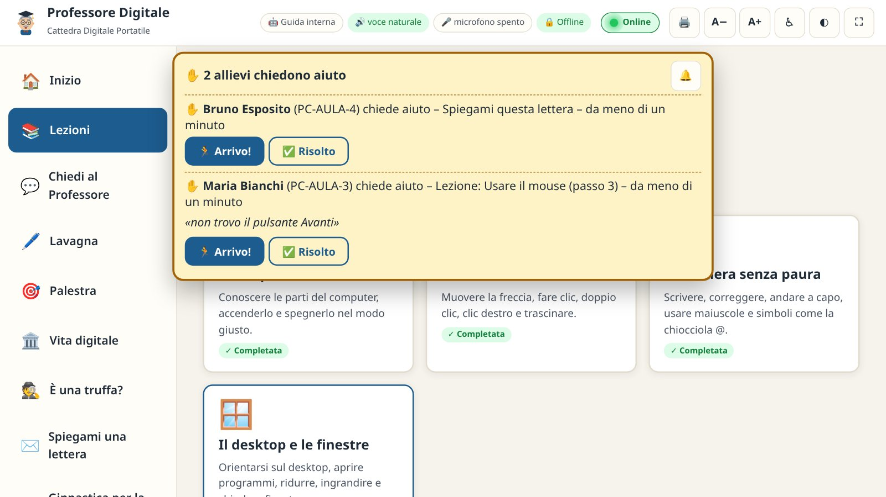
Figura 48. Sul PC del facilitatore: il riquadro delle richieste di aiuto, sopra la pagina in uso, con i pulsanti «Arrivo!» e «Risolto».
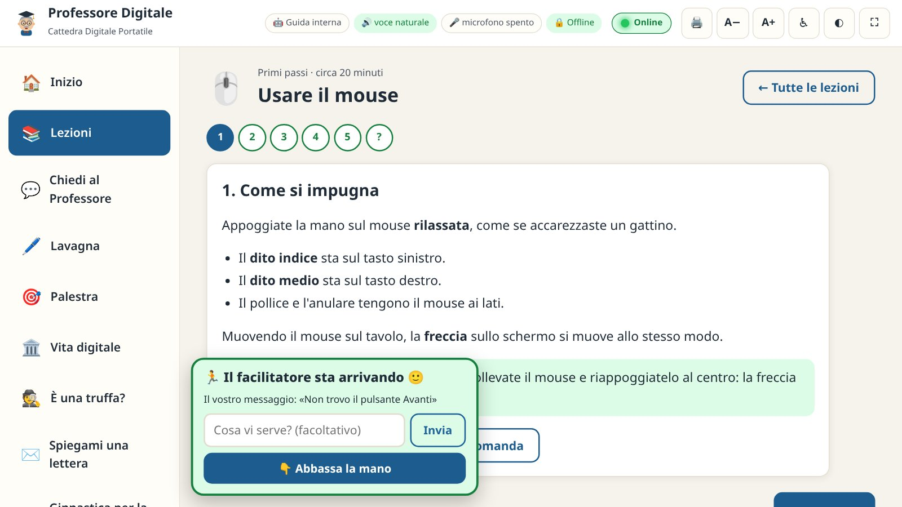
Figura 49. Sul PC dell'allievo, durante la lezione sul mouse: la mano è alzata, il messaggio è stato inviato e il facilitatore sta arrivando.
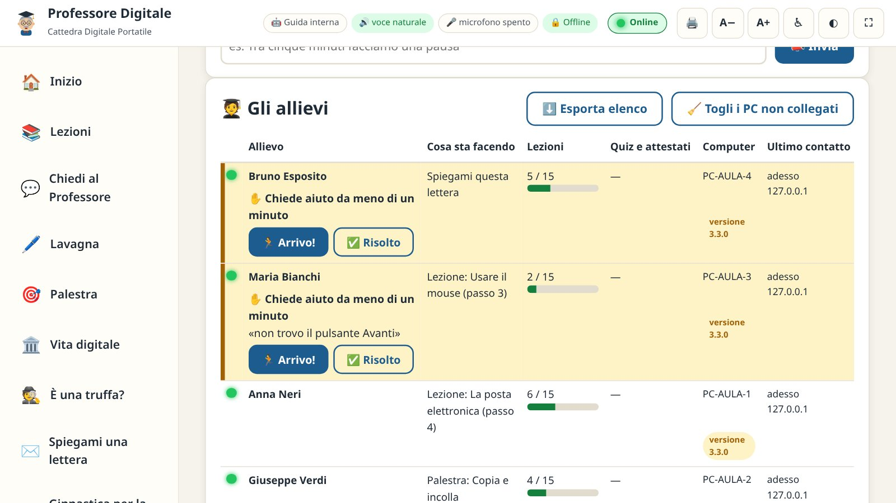
Figura 50. Nel quadro dell'aula le richieste di aiuto stanno in cima, in giallo, con i pulsanti per rispondere.
Un consiglioSpiegate la mano alzata al primo incontro e provatela insieme: per molti allievi è un sollievo poter chiedere aiuto
senza interrompere il gruppo. Rispondete «Arrivo!» anche se siete occupati: l'allievo sa di essere stato visto e aspetta più tranquillo.
🔍 Cerca nella rete
In fondo alla pagina, su qualunque PC, 🔍 Cerca nella rete mostra l'indirizzo di questo computer, se Internet è collegato, i PC dei facilitatori
trovati (nome, computer, indirizzo, versione, se serve il codice) e il server degli aggiornamenti dell'aula, se c'è. È il primo controllo quando un allievo non si collega.
📱 E i tablet?Dalla 3.4 anche i tablet e i telefoni degli allievi possono entrare nel quadro dell'aula, senza installare nulla: sul PC del facilitatore accendete la condivisione dal riquadro «📱 Condividi con i tablet dell'aula» di questa pagina. I tablet compaiono nell'elenco come gli altri allievi, con la mano alzata (capitolo 20).
Il firewall di WindowsIl PC del facilitatore riceve i collegamenti sulle porte 8766 TCP e 8767 UDP, solo dalla rete locale.
Installando il Professore «per tutti gli utenti» l'installatore aggiunge da solo la regola del firewall «Professore Digitale (aula)» per le reti private.
Se lo avete installato «solo per me», la prima volta che scegliete «Il PC del facilitatore» Windows può chiedere se consentire l'accesso: scegliete
le reti private e Consenti accesso (serve la password di amministratore). I PC degli allievi non hanno bisogno di regole.
Controllate anche che la rete dell'aula sia impostata come rete privata e non pubblica.
Cosa viaggia in rete, e cosa noIl PC dell'allievo invia al facilitatore, solo nella rete locale: il nome, la pagina in uso, le lezioni completate,
i risultati dei quiz e gli attestati, il nome e la memoria del computer e, solo quando l'allievo alza la mano, la richiesta di aiuto con il suo breve messaggio.
Mai le conversazioni con il Professore, né le lettere fatte spiegare. Si accettano solo indirizzi della rete locale;
l'interfaccia del Professore resta sempre chiusa dentro il computer. Il quadro dell'aula funziona con il programma installato (e la versione da chiavetta), non con la versione portatile .html.
§§c20§§
20
CAPITOLO
Telefoni e tablet
Dalla 3.4 il Professore esce dal computer e arriva anche sui telefoni e sui tablet, senza passare dal negozio delle app.
Le strade sono due: l'app per telefono e tablet, presa dal sito, per chi vuole esercitarsi a casa con il proprio telefono,
e la condivisione con i tablet dell'aula, per il facilitatore che in aula ha dei tablet al posto dei computer.
📲 App per telefono e tablet
📱 Tablet collegati al PC dell'aula
Per chi
L'allievo, a casa o in giro, con il suo telefono o tablet
Il facilitatore che in aula ha tablet o telefoni per gli allievi
Da dove si apre
Dal sito del progetto, una volta sola; poi dall'icona sulla schermata Home
Dal PC del facilitatore, con un indirizzo, un codice di 6 cifre e un QR code
Internet
Solo la prima volta; poi funziona anche senza
Mai: basta la stessa rete Wi-Fi del PC
Voce e IA
Le voci del telefono; l'IA locale non c'è (risponde la guida interna)
Le voci naturali e l'IA locale del PC
Dove restano i progressi
Sul telefono
Sul tablet
📲 L'app per telefono e tablet
È il Professore che conoscete, nella forma adatta allo schermo del telefono: si apre dal browser e si mette sulla schermata Home, con la sua icona, come un'app.
Non serve un account, non si passa dal Play Store o dall'App Store e non costa nulla. L'indirizzo è:
Ancora più semplice: aprite sul computer la pagina del sito https://danilodauria.github.io/professore-digitale/ e inquadrate il QR code
con la fotocamera del telefono. Sul telefono la stessa pagina mostra il pulsante Apri il Professore.
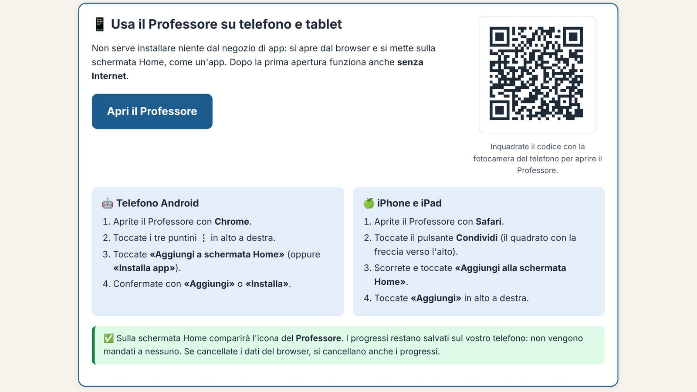
Figura 51. La pagina del sito: il pulsante Apri il Professore, il QR code da inquadrare con il telefono
e, sotto, le istruzioni per Android e per iPhone e iPad. Più in basso ci sono i file da scaricare per il computer e questo vademecum.
🤖 Telefono o tablet Android
Aprite il Professore con Chrome.
Toccate i tre puntini ⋮ in alto a destra.
Toccate «Installa app» oppure «Aggiungi a schermata Home» (il nome cambia secondo il telefono).
Confermate con «Installa» o «Aggiungi».
Alcuni telefoni propongono da soli, in basso, di installare il Professore: va bene lo stesso.
🍏 iPhone e iPad
Aprite il Professore con Safari.
Toccate il pulsante Condividi (il quadrato con la freccia verso l'alto).
Scorrete e toccate «Aggiungi alla schermata Home».
Toccate «Aggiungi» in alto a destra.
Sulla schermata Home compare l'icona del Professore: da quel momento si apre con un tocco, a schermo intero, come le altre app.
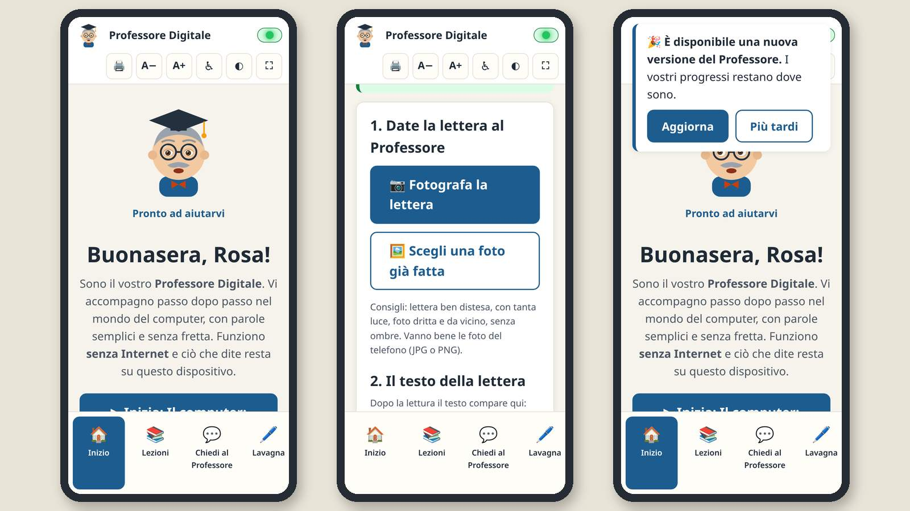
Figura 52. L'app sul telefono: la pagina Inizio; «Spiegami questa lettera» con il pulsante
📷 Fotografa la lettera, che apre la fotocamera; l'avviso «È disponibile una nuova versione del Professore» con i pulsanti Aggiorna e Più tardi.
Senza Internet, dopo la prima volta
La prima apertura serve Internet (Wi-Fi o dati): il telefono mette da parte il Professore. Dopo, l'app funziona anche senza Internet, in treno,
in campagna o con i dati finiti. Se la aprite per la prima volta senza rete compare «📶 Serve Internet, solo la prima volta»: collegatevi e riprovate.
Cosa c'è e cosa no
Nell'app per telefono e tablet
Lezioni, quiz e attestati, Cultura generale, Tecnologia Gentile, FeniceOS, guida interna, Palestra, lavagna, Vita digitale, «È una truffa?», Ginnastica per la mente, ripasso e competenze
✔
Lettura ad alta voce, con le voci del telefono (non Giorgio, Serena e Paola)
✔
«Spiegami questa lettera» con la fotocamera: il pulsante 📷 Fotografa la lettera apre la fotocamera e la lettura avviene sul telefono.
La prima volta serve Internet per preparare gli «occhiali» del Professore (circa 6 MB); poi funziona anche senza.
✔
Intelligenza artificiale locale: alle domande risponde la guida interna
—
Domande e comandi a voce (microfono)
—
Quadro dell'aula e mano alzata (in aula usate la condivisione con i tablet, qui sotto)
—
Gli aggiornamenti
L'app si aggiorna da sola, ma chiede sempre il permesso. Quando c'è una versione nuova e il telefono è collegato a Internet, in alto compare
«🎉 È disponibile una nuova versione del Professore. I vostri progressi restano dove sono.»: toccate Aggiorna (oppure Più tardi, e ve lo richiederà).
Il controllo avviene quando riaprite l'app; senza Internet si continua con la versione già salvata.
🔒 I progressi restano sul telefonoLezioni fatte, quiz, attestati e diario restano solo sul telefono, nella memoria
del browser: non vengono mandati a nessuno e il sito non raccoglie statistiche. Proprio per questo, se cancellate i dati del browser (o i «dati del sito»)
si cancellano anche i progressi. Su iPhone e iPad il sistema può cancellarli da solo se l'app non viene aperta per molti giorni: apritela ogni tanto e,
per stare tranquilli, salvatene una copia con Impostazioni → Dati e progressi → ⬇️ Esporta progressi (si riprende con ⬆️ Importa).
📱 Condividi con i tablet dell'aula
Se in aula ci sono dei tablet (o i telefoni degli allievi) e un solo computer con il Professore installato, il computer può prestare il Professore ai tablet:
lezioni, contenuti, voci naturali e intelligenza artificiale sono quelli del PC, mentre sul tablet non si installa nulla. Internet non serve:
basta che tablet e PC siano collegati alla stessa rete Wi-Fi. Funziona con il programma installato (anche nella versione da chiavetta per Windows), non con la versione portatile .html.
Sul PC del facilitatore: accendere la condivisione
Aprite 🏫 Aula: sotto i ruoli c'è il riquadro «📱 Condividi con i tablet dell'aula», che dice se è accesa o spenta (lo stesso riquadro è anche in fondo alle Impostazioni).
Premete 📱 Apri la condivisione.
Premete 📱 Accendi la condivisione. Di serie è spenta, e si accende solo da qui.
Compaiono il QR code, l'indirizzo da scrivere nel browser (per esempio http://192.168.1.10:8768/) e il codice di 6 cifre, grande.
Scrivete indirizzo e codice alla lavagna, oppure fate inquadrare il QR code.
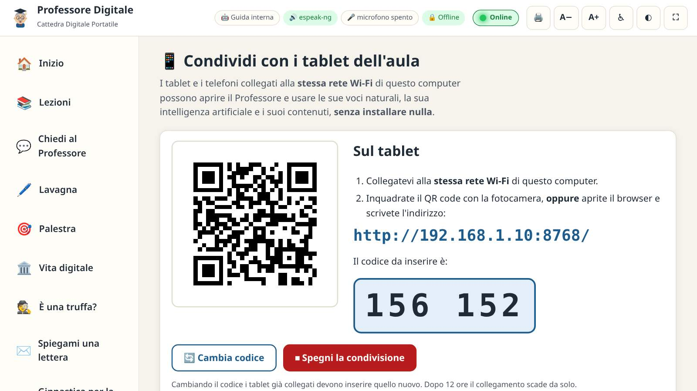
Figura 53. Sul PC: la condivisione è accesa. A sinistra il QR code, a destra le istruzioni per il tablet,
l'indirizzo e il codice di 6 cifre; sotto, Cambia codice e Spegni la condivisione.
Se al posto del QR code compare «Questo computer non è collegato a una rete locale», collegate il PC al Wi-Fi (o al cavo) della stessa rete dei tablet.
Sul tablet dell'allievo
Collegate il tablet alla stessa rete Wi-Fi del PC.
Inquadrate il QR code con la fotocamera e toccate il collegamento che compare: si entra subito, perché il codice è già dentro il QR.
Oppure aprite il browser (Chrome, Safari…) e scrivete l'indirizzo esattamente come lo vedete sul PC, con http:// e i due punti prima di 8768.
Compare «Inserite il codice che vedete sullo schermo del facilitatore»: scrivete le 6 cifre e toccate Entra.
Si apre il Professore, con in alto l'etichetta «📱 Collegato al PC dell'aula».
Toccate 🏫 Aula, scrivete il vostro nome e toccate 💾 Salva: così il facilitatore sa chi siete.
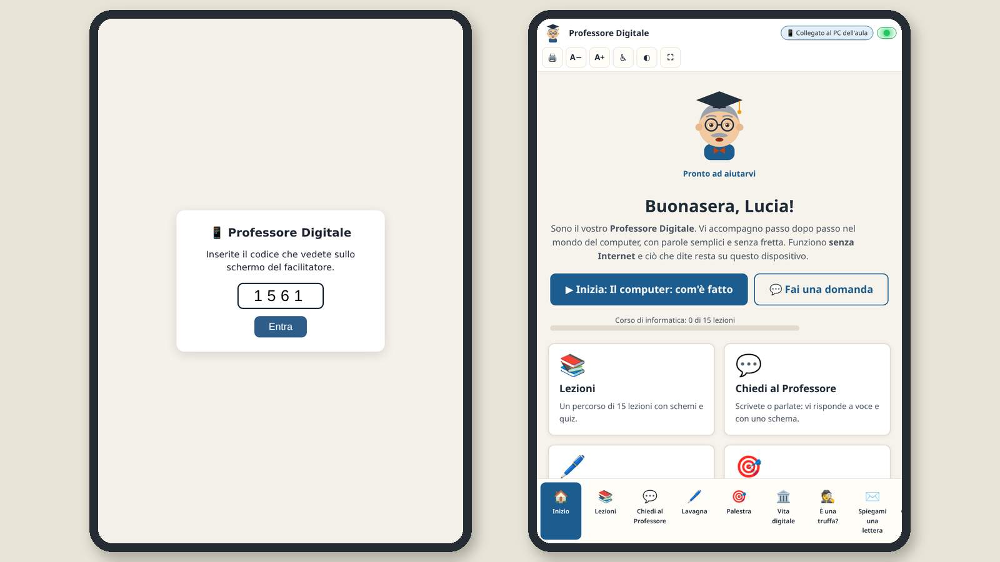
Figura 54. Sul tablet: la richiesta del codice (chi inquadra il QR code non la vede) e il Professore già aperto, con «📱 Collegato al PC dell'aula» in alto.
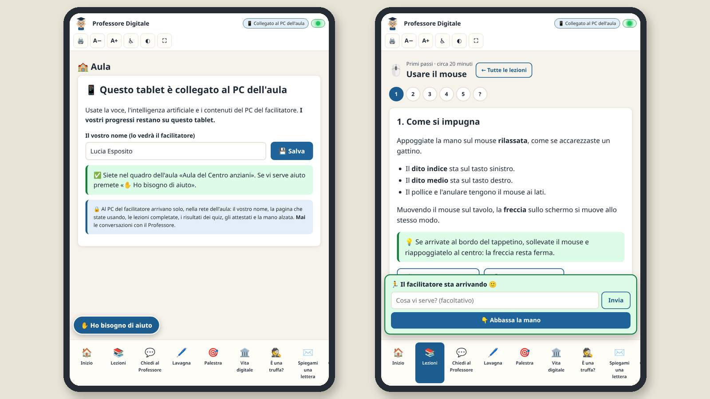
Figura 55. Sul tablet: la pagina Aula con il nome dell'allieva e, durante una lezione, la mano alzata: «Il facilitatore sta arrivando».
Che cosa si può fare sul tablet
Il tablet lavora come ospite del PC: usa quello che il PC gli presta, ma non può toccare nulla del PC.
Sul tablet si può
Sul tablet non si può
Seguire lezioni, quiz e attestati, Cultura generale, Palestra, Vita digitale, Ginnastica per la mente e tutte le altre pagine
Usare il microfono: niente domande né comandi a voce
Ascoltare le voci naturali del PC (Giorgio, Serena e Paola), dall'altoparlante del tablet
Aggiornare il programma, aggiungere o togliere contenuti
Fare domande con l'IA del PC, se è configurata (il PC risponde a due tablet alla volta: gli altri aspettano qualche secondo)
Installare un pacchetto con «Salva e usa» di «Crea lezioni e quiz»: si scarica il file e lo si importa sul PC
Far spiegare una lettera fotografata con la fotocamera del tablet
Configurare l'IA, fare da PC del facilitatore, gestire la condivisione
Alzare la mano con ✋ Ho bisogno di aiuto e ricevere i messaggi del facilitatore
Vedere i dati, le cartelle, le impostazioni o i progressi del PC; spegnere il Professore
I progressi restano sul tablet, nel suo browser: il PC non salva nulla per i tablet. Per conservarli usate Impostazioni → Dati e progressi → ⬇️ Esporta progressi.
I tablet nel quadro dell'aula
Se il PC che condivide è anche il PC del facilitatore (capitolo 19), i tablet compaiono nel quadro dell'aula insieme ai PC degli allievi, con la scritta
«Tablet o telefono» nella colonna del computer: nome, cosa stanno facendo, lezioni, quiz e attestati. La mano alzata funziona come sui PC: il facilitatore
risponde 🏃 Arrivo! o ✅ Risolto e il tablet lo mostra subito; anche il 📣 messaggio a tutti arriva sui tablet. Se il PC non fa da facilitatore,
i tablet funzionano lo stesso, ma non compaiono nel quadro (la pagina Aula del tablet lo dice).
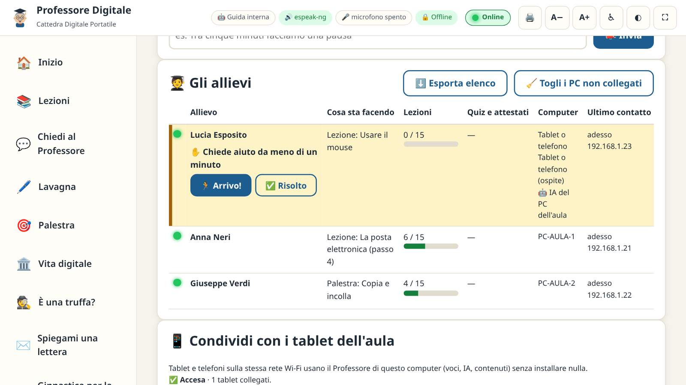
Figura 56. Sul PC: nel quadro dell'aula il tablet di Lucia chiede aiuto, in cima e in giallo, accanto ai PC di Anna e Giuseppe; sotto, il riquadro della condivisione con i tablet.
Cambiare il codice, scollegare, spegnere
Tablet collegati: sulla pagina della condivisione c'è l'elenco dei tablet, con nome, indirizzo, pagina in uso e ultimo accesso. Il pulsante ✕ scollega un tablet:
per rientrare dovrà inserire di nuovo il codice.
🔄 Cambia codice: crea un codice nuovo e chiude tutti i collegamenti. Usatelo a ogni nuovo gruppo, o se il codice è finito in mani sbagliate.
⏹ Spegni la condivisione (va premuto due volte, per conferma): la porta si chiude e i tablet non possono più collegarsi. Fatelo a fine lezione.
Un collegamento dura al massimo 12 ore. Se il PC viene riavviato, alla riapertura del Professore la condivisione si riaccende da sola, ma con un codice nuovo:
sul tablet compare «Il collegamento con il PC dell'aula è scaduto»; ricaricate la pagina e inserite il nuovo codice.
Tenete aperto il Professore sul PC per tutta la lezione: se tutte le sue finestre restano chiuse per qualche minuto si spegne da solo
(non succede se il PC è quello del facilitatore dell'aula).
🔒 Sicurezza e privacy, in parole sempliciSpenta di serie: si accende solo dal PC stesso, mai da un tablet. · Solo rete di casa o dell'aula: il PC apre la porta 8768 soltanto agli indirizzi
della rete locale; da Internet non si raggiunge. · Ci vuole il codice di 6 cifre (dopo 10 tentativi sbagliati in un minuto bisogna aspettare) e ogni tablet
riceve un «biglietto d'ingresso» personale che scade. · Nessun accesso ai dati del PC: i tablet usano solo lezioni, voce, IA e contenuti; non vedono progressi,
impostazioni, conversazioni o cartelle del PC e non possono installare, cambiare o spegnere nulla. · Al PC arrivano solo il nome, la pagina in uso e i progressi
per il quadro dell'aula, mai le conversazioni. · L'interfaccia del PC resta chiusa dentro il computer, come sempre.
Il firewall di WindowsI tablet si collegano alla porta 8768 TCP del PC, solo dalla rete locale. Installando il Professore «per tutti gli utenti» l'installatore aggiunge da solo la regola del firewall «Professore Digitale (tablet)» per le reti private (e la toglie quando disinstallate): non dovete fare nulla. Se lo avete installato «solo per me», la prima volta che accendete la condivisione Windows può chiedere se consentire l'accesso: scegliete le reti private e Consenti accesso (serve la password di amministratore). Controllate anche che la rete Wi-Fi sia impostata come rete privata e non pubblica. Attenzione alle reti Wi-Fi «ospiti» di alcuni router: non lasciano che i dispositivi si vedano tra loro, quindi PC e tablet vanno collegati alla rete Wi-Fi principale.
§§c21§§
21
CAPITOLO
Guida per il facilitatore
Il Professore Digitale non sostituisce il facilitatore: gli dà una lavagna, una voce in più, un percorso già pronto, i quiz con gli attestati
e, con l'aula, uno sguardo d'insieme sul gruppo. Ecco come ottenere il meglio da un incontro con computer Windows.
Preparare l'aula
Computer accesi prima dell'arrivo del gruppo: Windows Update a volte installa aggiornamenti all'accensione.
Professore aperto e testo ingrandito (A+).
Voce scelta (Giorgio, Serena o Paola) e volume provato con ▶ Prova la voce.
Il vostro PC impostato come facilitatore in 🏫 Aula, codice dell'aula scritto alla lavagna.
PC degli allievi collegati all'aula (✅ Collegato).
Se usate i tablet: condivisione accesa, indirizzo e codice alla lavagna (capitolo 20).
Proiettore collegato (Windows + P → Duplica) e modalità proiettore attiva.
Mouse con filo (più facili dei touchpad).
Cuffie per chi sente poco.
Un foglio con nome utente e password (o PIN) di ogni PC.
Risparmio energia: schermo che non si spegne durante la lezione.
Stampante pronta per gli attestati.
Questo vademecum stampato, a portata di mano.
Un incontro tipo (90 minuti)
Tempo
Attività
0–10'
Accoglienza. Caffè, nomi, cosa è successo in settimana con il telefono o il computer: spesso le domande migliori nascono qui.
Il Professore saluta ciascuno sul proprio PC.
10–20'
Riscaldamento in Palestra. Esercizio del clic, dei tasti speciali o «Riconosci la truffa»; ognuno annota il proprio record. Oppure la domanda del giorno
o il gioco del giorno della Ginnastica per la mente, tutti insieme.
20–50'
La lezione del giorno, proiettata. Il facilitatore legge o fa leggere il Professore, un passo alla volta, fermandosi sulle domande.
50–60'
Pausa (con un 📣 messaggio a tutti per avvisare).
60–75'
Pratica a coppie sui PC: ripetere i passi della lezione (salvare un file, scrivere un'email…). Dal quadro dell'aula vedete chi è rimasto indietro;
chi ha bisogno preme ✋ Ho bisogno di aiuto.
75–85'
Quiz insieme, proiettato: il gruppo vota a voce, poi si legge la spiegazione. A fine percorso: il Grande Quiz individuale e gli attestati.
85–90'
Domande libere in «Chiedi al Professore», un promemoria per la volta dopo e saluti con 🚪 Esci.
Dieci consigli per insegnare agli adulti e agli anziani
Mani sul mouse loro, non vostre. Guidate a parole; toccate il mouse solo se chiesto.
Una cosa alla volta. Un passo, una prova, un sorriso. Poi il passo successivo.
Metafore concrete: il Professore ne usa molte (l'armadio, la strada, la chiave); riprendetele e aggiungete le vostre.
L'errore è benvenuto. Mostrate Ctrl + Z e il Cestino fin dal primo giorno.
Ripetere senza stancarsi. Rivedere una lezione è normale: i passi già visti restano segnati in verde.
Testo grande e voce lenta. Regolateli all'inizio, non a metà incontro.
Partite dai loro bisogni: la videochiamata con il nipote motiva più di qualsiasi teoria. La Cultura generale aiuta chi ha paura del computer: si esercita senza accorgersene.
Sicurezza sempre. Ripetete la regola d'oro: nessuno chiede password o codici per telefono. Microsoft non telefona mai.
Scrivere su carta i passaggi chiave: molti allievi ricordano meglio con un foglio accanto. Il pulsante 🖨️ stampa la lezione intera.
Celebrare i progressi. I record della Palestra, le lezioni completate e gli attestati sono piccoli traguardi da festeggiare.
Più allievi sullo stesso computer
Dalla 3.2 basta aggiungere le persone nel Professore (Impostazioni → 👥 Persone che usano questo computer, capitolo 14): all'avvio ognuno tocca il proprio nome
e ritrova lezioni, quiz e attestati, con il proprio nome nei saluti, sugli attestati e nel quadro dell'aula. In alternativa si può creare un account di Windows per ciascuno
(Start → Impostazioni → Account → Altri utenti, installando il Professore «per tutti gli utenti»). Con la versione da chiavetta ogni allievo può portarsi il proprio percorso in tasca.
Un corso intero, già pronto
Per un percorso di più settimane usate i 12 incontri pronti da due ore, con la guida a tempo, le schede da stampare, il registro delle presenze
e il resoconto per l'ente (capitolo 22). Per le cose del vostro territorio (lo sportello del Comune, la ASL, l'associazione) preparate lezioni e quiz su misura (capitolo 23).
§§c22§§
22
CAPITOLO
Per facilitatori ed enti
Chi tiene un corso per un'associazione, una biblioteca o un Comune deve preparare gli incontri, segnare le presenze e, alla fine, rendere conto
del lavoro fatto. La pagina 📋 Registro e incontri (nel menu a sinistra) fa tutto questo, sul computer del facilitatore.
La pagina ha quattro schede: 📅 Incontri pronti, 🗒️ Registro presenze, 📄 Resoconto per l'ente e 🇪🇺 Competenze DigComp.
🔒 RiservatezzaNomi, presenze e resoconti restano solo su questo computer: nulla viene inviato in Internet.
Raccogliete solo i dati che servono davvero (basta il nome), chiedete il consenso alle persone e seguite le regole del vostro ente.
Non scrivete dati sulla salute né numeri di documenti.
📅 Dodici incontri pronti
Un percorso completo per principianti e persone anziane: 12 incontri da 2 ore (24 ore in tutto, pausa compresa), dal primo contatto con il computer
ai servizi pubblici online e alla sicurezza.
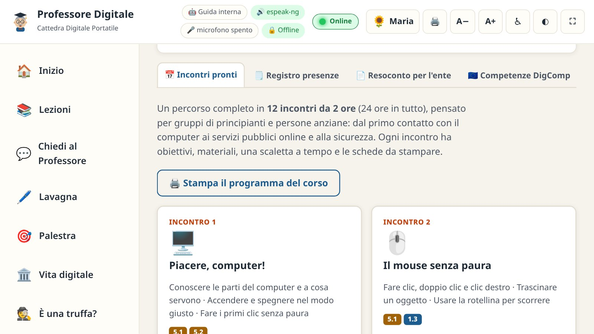
Figura 57. La scheda «Incontri pronti»: un riquadro per ogni incontro, con gli obiettivi
e i codici delle competenze DigComp allenate.
🖥️ Piacere, computer!
🖱️ Il mouse senza paura
⌨️ La tastiera e la scrittura
🗂️ Finestre, file e cartelle
🌐 Internet: cercare e capire
📧 La posta elettronica
📱 Smartphone, messaggi e foto
🔑 Password e account sicuri
🕵️ Riconoscere le truffe
🏛️ Identità digitale e servizi pubblici
💶 Pagamenti, banca e acquisti online
🎓 Intelligenza artificiale, ripasso e attestato
Ogni incontro ha i suoi 🎯 obiettivi, le competenze DigComp, i 🧰 materiali da preparare, la 🕑 scaletta con i minuti di ogni attività,
il 📝 compito per casa e i 💡 consigli per il facilitatore. I pulsanti in alto:
⏱️ Avvia l'incontro: apre la guida a tempo (qui sotto).
🖨️ Stampa la scheda dell'incontro: per il facilitatore, con la scaletta e le righe per gli appunti.
🖨️ Stampa la scheda per gli allievi: «Oggi impariamo a…», i passi del giorno, il compito per casa e la regola di sicurezza.
Nell'elenco, 🖨️ Stampa il programma del corso prepara il programma dei 12 incontri, utile da allegare a un progetto.
⏱️ La guida a tempo
Durante l'incontro la guida mostra un passo alla volta: che cosa fare, da che minuto a che minuto, e un cronometro con la barra che si riempie.
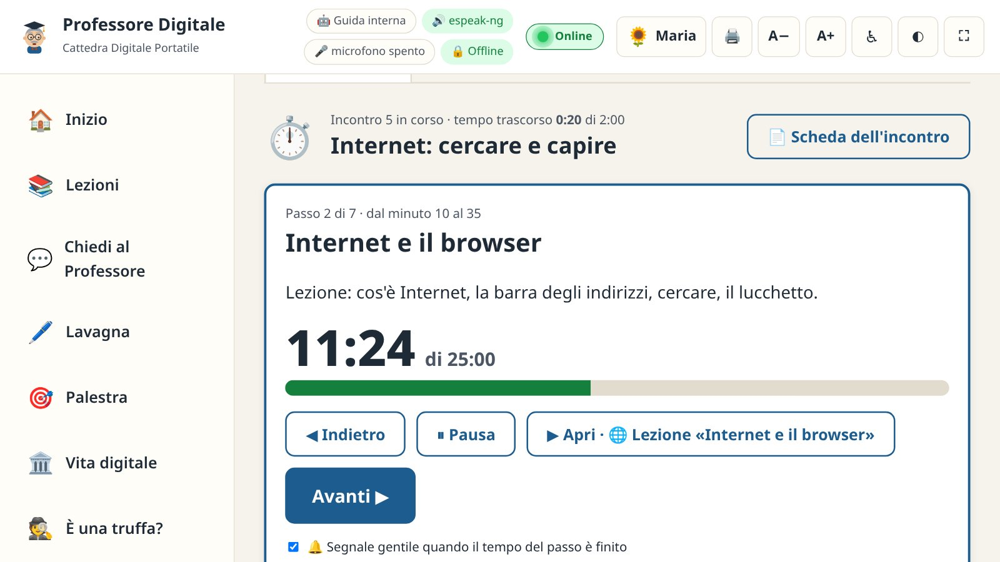
Figura 58. L'incontro 5 in corso: secondo passo, «Internet e il browser»,
11 minuti su 25. Il pulsante «Apri» porta direttamente alla lezione da proiettare.
▶ Apri porta subito alla lezione, all'esercizio della Palestra o alla prova della Vita digitale di quel passo. Mentre siete lì, in alto resta una
piccola barra ⏱️ con il passo e il tempo: Avanti ▶ passa al passo dopo, 📋 Guida riporta alla guida.
◀ Indietro, ⏸ Pausa / ▶ Riprendi e Avanti ▶; nella scaletta in basso si può saltare a qualsiasi passo.
Quando il tempo previsto finisce, il passo diventa arancione: nessuna fretta, si va avanti quando il gruppo è pronto. Se volete,
un 🔔 segnale gentile lo avvisa con un suono.
All'ultimo passo, 🏁 Concludi l'incontro: il Professore ricorda di segnare le presenze nel registro.
🗒️ Il registro delle presenze
Il corso. La prima volta scrivete il nome del corso, l'ente o l'associazione, la sede, il facilitatore e le date, poi ✅ Crea il corso.
Si possono tenere più corsi: ➕ Nuovo corso, e il menu Corso per passare dall'uno all'altro.
Gli iscritti. Scrivete nome e cognome e premete ➕ Aggiungi (o Invio). Con 💻 Aggiungi le persone di questo computer entrano
le persone del capitolo 14; sul PC del facilitatore, con l'aula attiva, 🏫 Importa i dati dall'aula prende gli allievi collegati (capitolo 19).
Collegare i progressi (facoltativo). Aprendo un iscritto, nella casella «Progressi di questo computer» si sceglie la persona corrispondente:
compare il segno 🔗 collegato e nel resoconto entrano anche le sue lezioni, i quiz superati, gli attestati e le competenze.
Gli incontri.➕ Nuovo incontro: data, ora di inizio e di fine, l'incontro pronto usato (facoltativo) e l'argomento. Poi l'✋ appello:
una spunta per ogni presente, oppure ✅ Tutti presenti. Infine 💾 Fatto. Ogni modifica viene salvata subito.
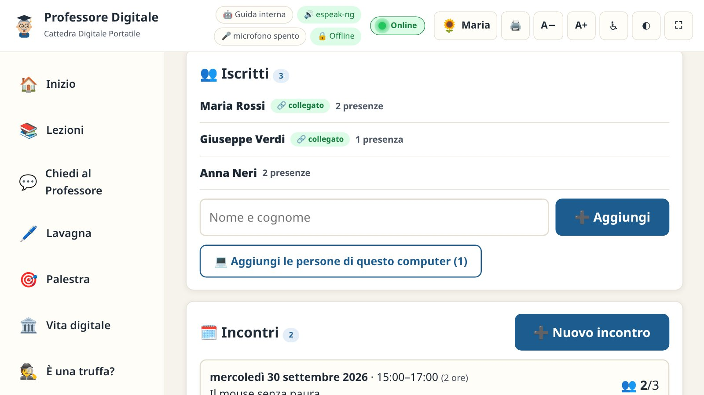
Figura 59. Il registro: tre iscritti (due collegati alle persone del computer) e,
sotto, gli incontri con il numero dei presenti.
💾 Copia di sicurezzaOgni tanto premete ⬇️ Salva copia del registro (JSON) e conservate il file su una chiavetta.
Con ⬆️ Importa registro lo si ricarica, anche su un altro computer: l'importazione aggiunge i dati mancanti e non cancella mai nulla.
📄 Il resoconto per l'ente o il bando
La scheda Resoconto per l'ente fa i conti da sola, per tutto il corso oppure per un periodo scelto con Dal e Al:
Numero
Che cosa conta
Incontri e ore di formazione
Gli incontri svolti e la loro durata complessiva.
Partecipanti (su iscritti)
Le persone venute almeno una volta.
Presenze totali
La somma delle presenze di tutti gli incontri.
Ore-persona
Le ore seguite da ciascuno, sommate: 3 persone presenti a un incontro di 2 ore fanno 6 ore-persona.
Frequenza media
Quanti incontri, in percentuale, ha seguito in media ogni iscritto.
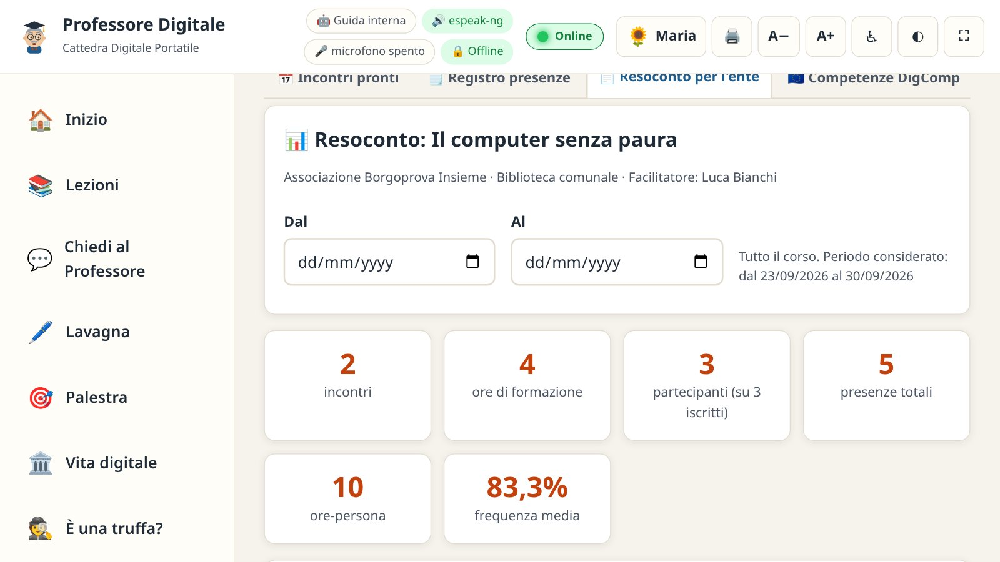
Figura 60. Il resoconto del corso «Il computer senza paura»: 2 incontri, 4 ore,
3 partecipanti, 5 presenze, 10 ore-persona, frequenza media 83,3%.
Seguono le tabelle dei partecipanti (presenze, ore e, per chi è collegato, lezioni, quiz, attestati e competenze), delle competenze DigComp
e degli argomenti trattati.
🖨️ Stampa il resoconto: un documento A4 con i dati del corso, la sintesi, le tabelle, il foglio delle presenze e lo spazio per luogo, data e firma
del facilitatore. Dalla finestra di stampa si può anche salvare in PDF.
⬇️ Presenze (CSV) e ⬇️ Riepilogo (CSV): due tabelle che si aprono con Excel o LibreOffice Calc, salvate nella cartella Download.
🇪🇺 Le competenze DigComp nei progetti
Molti bandi di facilitazione digitale chiedono quali competenze del quadro europeo DigComp 2.2 vengono allenate. La scheda Competenze DigComp
spiega il quadro (pubblicato dalla Commissione europea: 21 competenze in 5 aree, con 8 livelli di padronanza, dal base al più specializzato) e, per ogni
competenza, elenca le lezioni, le prove della Vita digitale e gli incontri pronti che la allenano, da citare nel progetto e nel resoconto.
🖨️ Stampa la tabella delle competenze la prepara su carta.
Un'indicazione, non una certificazioneIl percorso del Professore si rivolge soprattutto ai livelli base.
Gli stati «da iniziare, in corso, raggiunta, consolidata» si calcolano dalle attività svolte e servono a orientarsi: non sono una certificazione
ufficiale delle competenze e non vanno presentati come tale all'ente o nel bando. Scrivete piuttosto «competenze allenate durante il corso».
§§c23§§
23
CAPITOLO
Creare lezioni e quiz
Ogni gruppo ha le sue domande: come si prenota allo sportello del vostro Comune, dove si trova la vostra ASL, come partecipare alle attività della
vostra associazione. Con ✏️ Crea lezioni e quiz il facilitatore prepara lezioni, risposte per «Chiedi al Professore» e grandi quiz su misura,
senza conoscere l'informatica e senza toccare file tecnici: si compilano delle schede, si controlla e si preme «Salva e usa».
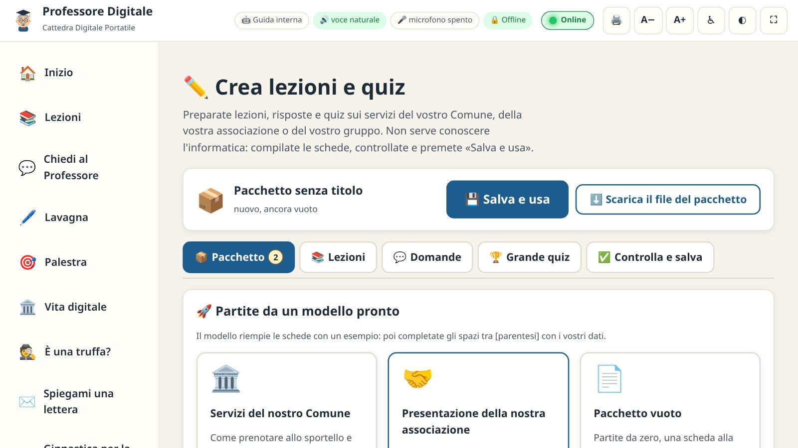
Figura 61. «Crea lezioni e quiz»: in alto il pacchetto con «Salva e usa» e «Scarica il file del pacchetto», sotto le cinque schede
e i modelli pronti da cui partire.
Le cinque schede
Lezioni, domande e quiz che preparate stanno insieme in un pacchetto di contenuti, come quelli già inclusi nel programma (cultura generale, il libro, FeniceOS).
Si apre dal menu a sinistra, ✏️ Crea lezioni e quiz; il lavoro è diviso in cinque schede, e il numero accanto a ciascuna dice quante cose restano da sistemare.
Scheda
Che cosa si fa
📦
Pacchetto
Si sceglie un modello pronto e si scrivono il titolo (per esempio «Servizi del Comune di Borgoprova»), una descrizione e l'autore.
Qui c'è anche l'elenco 🗂️ I miei pacchetti, per riaprirli e modificarli.
📚
Lezioni
Le lezioni del pacchetto, con i passi, gli schemi alla lavagna e un piccolo quiz finale.
💬
Domande
Domande e risposte che il Professore userà in «Chiedi al Professore», anche senza Internet.
🏆
Grande quiz
Un grande quiz facoltativo, con o senza attestato.
✅
Controlla e salva
Il controllo finale, i consigli e il pulsante 💾 Salva e usa.
🚀 Partire da un modello pronto
Due modelli riempiono le schede con un esempio completo: 🏛️ Servizi del nostro Comune (come prenotare allo sportello e usare il sito del Comune) e
🤝 Presentazione della nostra associazione (chi siete, cosa fate, come partecipare). 📄 Pacchetto vuoto parte da zero. Nei modelli le parti da personalizzare
sono tra [parentesi quadre], per esempio «[indirizzo dell'ufficio]» o «[giorni e orari di apertura]»: sostituitele con i vostri dati. Finché ne resta una,
il controllo finale lo ricorda.
📚 Le lezioni
Nella scheda Lezioni premete ➕ Nuova lezione, oppure ✏️ Modifica su una lezione del modello. Con 📋 Copia una lezione esistente
si parte da una lezione del corso e la si adatta: l'originale non cambia.
Scrivete il titolo, scegliete un'icona, una descrizione breve («cosa imparerà l'allievo»), la durata in minuti e, se volete,
un esercizio della Palestra collegato.
Aggiungete i 👣 passi: ogni passo è una pagina della lezione, con un titolo, un testo breve e un 💡 consiglio facoltativo. I pulsanti
Grassetto, 1. Elenco numerato e • Elenco puntato aiutano a scrivere; 👁 Come lo vedrà l'allievo mostra il risultato.
Se aiuta, premete ➕ Aggiungi uno schema a riquadri: si scrive un riquadro per ogni azione, in ordine (al massimo sei), e il Professore disegna
le frecce alla lavagna. 👁 Vedi lo schema lo mostra subito.
Nel ✓ Quiz della lezione bastano 2 o 3 domande, ognuna con 2–4 risposte: segnate con il pallino ✓ quella giusta e scrivete una breve spiegazione.
👁 Anteprima per l'allievo mostra la lezione esattamente come la vedranno gli allievi.
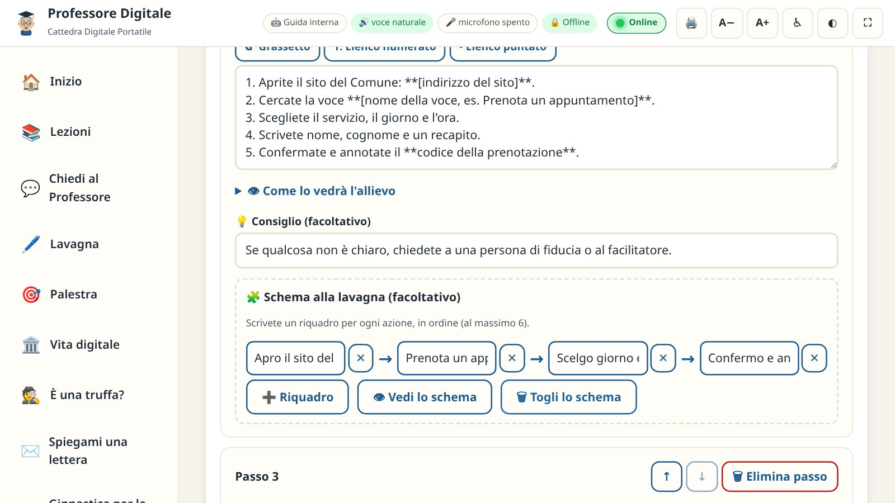
Figura 62. Un passo della lezione del modello «Servizi del nostro Comune»: il testo con l'elenco numerato,
il consiglio e lo schema a riquadri, con le parti da completare tra parentesi quadre.
💬 Domande e risposte
Con ➕ Nuova domanda scrivete la domanda come la farebbe un allievo («Come prenoto un appuntamento in Comune?») e la risposta, con parole semplici:
meglio tra 40 e 120 parole (un contatore le conta per voi). Per le procedure si possono aggiungere dei passi numerati. Le parole chiave (da 3 a 8)
sono le parole che un allievo potrebbe usare: ✨ Suggerisci le propone da solo. 👁 Così risponderà il Professore mostra la risposta finita.
Quando un allievo fa una domanda simile, il Professore risponde con il vostro testo.
🏆 Il grande quiz
Con ➕ Crea il grande quiz si scrivono il titolo, una descrizione facoltativa e le domande (almeno 5; meglio 15–30, così ogni tentativo è diverso), ognuna
con le risposte, quella giusta, la spiegazione e, se volete, una categoria («Uffici», «Sito internet»…): le domande si pescano a turno da ogni categoria. Poi si decide:
quante domande per ogni tentativo (da 5 a 100) e la soglia per superarlo (dal 50% al 100%, di solito il 70%);
se chi supera il quiz riceve l'attestato (capitolo 9), con una scritta a scelta; togliendo la spunta il quiz resta un ripasso, senza attestato.
👁 Anteprima fa provare il quiz prima di salvarlo. Il grande quiz compare poi in 🎓 Quiz e attestati.
✅ Controllare e salvare
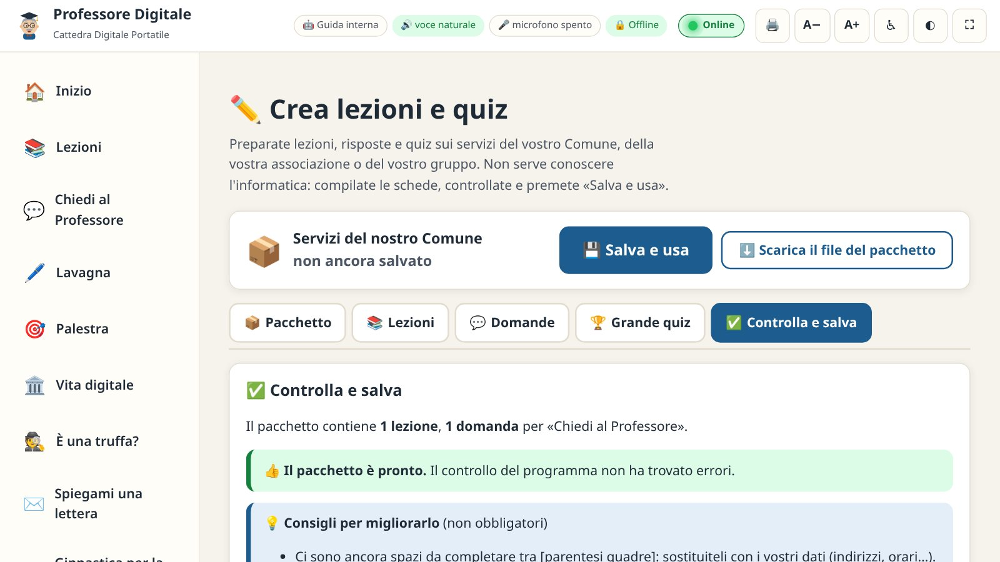
Figura 63. La scheda «Controlla e salva»: il pacchetto è pronto, ma un consiglio ricorda gli spazi ancora da completare tra parentesi quadre.
La scheda Controlla e salva riassume il pacchetto ed elenca, in un riquadro, le cose ✏️ da correggere prima di salvare (un titolo mancante, una risposta senza
quella giusta…): un clic su ciascuna porta al punto giusto. Sotto, i 💡 consigli per migliorarlo, che non sono obbligatori. Quando compare
«👍 Il pacchetto è pronto»:
💾 Salva e usa installa il pacchetto su questo computer: le lezioni compaiono subito nella pagina Lezioni, le domande in «Chiedi al Professore»
e il grande quiz in «Quiz e attestati». Il Professore propone di aprirli. A ogni salvataggio la versione sale da sola (1.0.0, 1.0.1…).
⬇️ Scarica il file del pacchetto salva un file .json nella cartella Download: con una chiavetta lo si porta sugli altri computer dell'aula
e lo si apre con Impostazioni → Contenuti aggiuntivi → Importa. Funziona anche sui computer Linux.
Modificare, riaprire, togliere
Il lavoro in corso è una bozza che si salva da sola su questo computer: si può chiudere e riprendere più tardi. Se cambiate pagina senza aver salvato,
il Professore ricorda di premere «Salva e usa».
In 🗂️ I miei pacchetti ci sono i pacchetti fatti con questo strumento: ✏️ Modifica, ⬇️ Scarica, 🗑 Rimuovi.
⬆️ Apri un file del pacchetto riapre un file .json ricevuto da un collega; dal menu si può anche partire da un pacchetto già installato.
I pacchetti inclusi nel programma si aprono come copia: l'originale non cambia.
Nella versione portatile .html il pacchetto si salva nella memoria del browser: scaricate anche il file, per conservarlo e usarlo su altri computer.
Contenuti giusti e prudentiControllate indirizzi, orari e numeri prima di salvare: gli allievi si fideranno di ciò che leggono.
Non scrivete dati personali di nessuno. Quando si parla di soldi, salute o documenti, aggiungete un consiglio di prudenza («chiedete allo sportello», «nessuno vi chiederà la password»).
Le informazioni che cambiano spesso (orari, costi) vanno ricontrollate ogni tanto: basta modificarle e premere di nuovo «Salva e usa».
§§c24§§
24
CAPITOLO
Privacy e sicurezza
Chi impara a usare il digitale deve poter sbagliare e fare domande senza timore. Per questo il Professore è costruito in modo da non far uscire nulla dal computer.
Cosa fa il programma
Il server interno ascolta solo all'interno del computer (127.0.0.1): dagli altri computer della rete l'interfaccia non è raggiungibile (i tablet dell'aula entrano solo se accendete voi la condivisione, con il codice: vedi la tabella qui sotto).
Accetta richieste solo dalla propria finestra: una pagina web estranea non può comandarlo.
IA, voci e riconoscimento vocale lavorano sul computer: domande e registrazioni non vengono inviate a nessuno. Le registrazioni del microfono vengono trascritte e cancellate subito.
Gli attestati in PDF si creano sul computer, senza servizi esterni.
Le prove della Vita digitale sono finte e non si collegano a niente; il controllo «È una truffa?» avviene sul computer e non salva il testo controllato.
«Spiegami questa lettera» legge le foto sul computer, con un «lettore» di testo (OCR) incluso nel programma: la foto e il testo non vengono inviati a nessuno
e non vengono salvati; restano solo dei conteggi anonimi (quante lettere, di che tipo). La webcam si accende solo con un clic e si spegne da sola.
I risultati della Ginnastica per la mente e il suo diario restano nei progressi della persona, su questo computer.
Il registro delle presenze, i resoconti e i pacchetti creati con «Crea lezioni e quiz» restano sul computer del facilitatore: si stampano, si esportano o si scaricano solo quando lo decidete voi.
Non richiede privilegi di amministratore durante l'uso.
Ogni file scaricato su vostra richiesta (aggiornamenti, modelli, microfono) viene verificato con la sua impronta SHA-256.
Le tre eccezioni, dichiarate e disattivabili
Funzione
Cosa fa in rete
Come si spegne
Indicatore «Online»
Al massimo una volta al minuto il programma apre e chiude una connessione verso un server pubblico neutrale (1.1.1.1, 9.9.9.9…) per sapere
se Internet funziona. Nessun dato viene inviato.
Impostazioni → Vista → «Indicatore «Online»»
Quadro dell'aula
Solo se scegliete un ruolo in 🏫 Aula. Il PC del facilitatore ascolta nella rete locale soltanto due indirizzi (/aula/info e
/aula/ciao, porta 8766 TCP) e risponde alla ricerca dei PC (porta 8767 UDP). Il PC dell'allievo invia ogni 20 secondi nome, pagina in uso,
lezioni completate, risultati dei quiz e attestati e, quando l'allievo alza la mano, la richiesta di aiuto con il suo breve messaggio; il facilitatore risponde
«Arrivo!» o «Risolto» solo a quel PC. Mai le conversazioni. Solo indirizzi IP privati; il codice dell'aula blocca i PC estranei.
🏫 Aula → «Un PC senza aula» (è la scelta di serie)
Condividi con i tablet dell'aula(3.4)
Spenta di serie. Solo se la accendete dal PC, il programma apre la porta 8768 TCP ai soli indirizzi della rete locale. Entra solo chi inserisce il codice di 6 cifre; i tablet possono usare lezioni, voce, IA e contenuti, ma non leggere i dati del PC né cambiare nulla. I progressi restano sui tablet. Al PC arrivano solo nome, pagina in uso e progressi per il quadro dell'aula, mai le conversazioni.
⏹ Spegni la condivisione nella pagina dei tablet (capitolo 20)
Cosa non fa
Non crea account e non chiede dati personali (il nome per saluti e attestati è facoltativo e resta sul computer).
Non contiene pubblicità né sistemi di tracciamento.
Non scarica nulla da solo, nemmeno gli aggiornamenti.
Dove stanno i dati
Dato
Posizione
Impostazioni, progressi (lezioni, quiz, attestati, Palestra, Vita digitale, ripasso, Ginnastica per la mente, promemoria), conversazione (ultimi 60 messaggi), lavagna, persone del computer (profili.json), registro presenze (registro.json)
%APPDATA%\ProfessoreDigitale\ (Windows XP: Documents and Settings\NOME\Dati applicazioni\ProfessoreDigitale)
Pacchetti di contenuti importati o creati con «Crea lezioni e quiz»
%APPDATA%\ProfessoreDigitale\contenuti\
Bozza di «Crea lezioni e quiz» non ancora salvata
Memoria del browser di quel computer
Modelli vocali, IA compatibile, registro tecnico (server.log)
%LOCALAPPDATA%\ProfessoreDigitale\
Modelli di Ollama
%USERPROFILE%\.ollama\models\ (gestiti da Ollama)
Elenco degli allievi dell'aula (solo sul PC del facilitatore)
%APPDATA%\ProfessoreDigitale\; si svuota con 🧹 e ✕
Versione da chiavetta
Cartella dati accanto a ProfessoreDigitale.exe
Versione portatile .html
Memoria del browser di quel computer
Progressi dei tablet collegati al PC dell'aula e dell'app per telefono e tablet
Memoria del browser del tablet o del telefono (il PC non li salva)
Per aprire una di queste cartelle, scrivete il percorso (per esempio %APPDATA%\ProfessoreDigitale) nella barra degli indirizzi di Esplora file
e premete Invio, oppure usate «Cartella dei progressi» dall'icona vicino all'orologio. Sono semplici file di testo, leggibili e cancellabili.
Su un computer condivisoLe persone che non usano più il computer si eliminano da 👥 Gestisci le persone (capitolo 14). A fine corso, o prima di donare il computer, disinstallate il Professore rispondendo
Sì alla domanda sulla cancellazione dei dati (capitolo 25), oppure usate 🧹 Nuova conversazione e Azzera progressi.
§§c25§§
25
CAPITOLO
Manutenzione, aggiornamenti e disinstallazione
Salvare i progressi
In Impostazioni → Dati e progressi → Esporta progressi si ottiene un file da conservare su chiavetta, con lezioni, quiz, attestati e promemoria
della persona che sta usando il computer. Il registro delle presenze ha la sua copia: 📋 Registro e incontri → ⬇️ Salva copia del registro (capitolo 22).
Per un salvataggio completo di un utente basta copiare la cartella %APPDATA%\ProfessoreDigitale. Gli attestati salvati in PDF stanno nella cartella Download.
Aggiornare
In Impostazioni → Aggiornamenti premete 🌐 Controlla aggiornamenti (serve Internet in quel momento, oppure un PC dell'aula che fa da server).
Se c'è una versione nuova, leggete le novità e premete ⬇️ Scarica il nuovo pacchetto: il file va nella cartella Download e viene verificato.
Premete ▶ Installa adesso: il Professore si chiude, l'installatore aggiorna il programma e potete riaprirlo. Impostazioni e progressi vengono conservati.
Senza Internet basta eseguire il nuovo ProfessoreDigitale-Setup-X.Y.Z.exe portato con la chiavetta: si installa sopra il precedente.
Nella stessa scheda si possono aggiungere i nuovi contenuti (domande, lezioni e quiz) con un clic, senza aggiornare il programma.
Dalla 3.3 alla 3.4Si installa sopra senza disinstallare: persone, progressi, attestati, promemoria, impostazioni e registro restano. La condivisione con i tablet arriva spenta: si accende solo se la volete (capitolo 20). Installando «per tutti gli utenti» l'installatore aggiunge la regola del firewall «Professore Digitale (tablet)». L'app per telefono e tablet non si installa sul computer: si apre dal sito.
Dalla 3.2 alla 3.3Si installa sopra senza disinstallare: persone, progressi, attestati, promemoria, impostazioni e registro restano.
La voce «Riccardo» viene sostituita da Giorgio (chi l'aveva scelta lo ritrova da solo) e arriva Serena; compaiono subito «Spiegami questa lettera»,
la Ginnastica per la mente, la mano alzata in aula e «Crea lezioni e quiz». L'installatore pesa circa 210 MB perché contiene le tre voci:
se la connessione dell'aula è lenta, scaricatelo una volta e portatelo con una chiavetta.
Dalla 3.1 o da primaSi installa sopra senza disinstallare, anche dalla 2.3. Progressi, attestati, promemoria, impostazioni, conversazione,
IA e microfono già configurati restano al loro posto e diventano quelli della prima persona del computer (capitolo 14). Tutte le novità delle versioni 3.x compaiono subito.
Ripristino dopo un problema
Se dopo un'interruzione di corrente il Professore non si comporta bene: tasto destro sull'icona vicino all'orologio → Chiudi il Professore Digitale, poi riapritelo.
Se non basta, eseguite di nuovo l'installatore: ripara i file del programma senza toccare i dati. Se il microfono smette di funzionare, toglietelo e reinstallatelo
da Configura IA e voce.
Disinstallazione
Start → Impostazioni → App (o Pannello di controllo → Programmi e funzionalità), scegliete Professore Digitale → Disinstalla.
In alternativa: Start → Professore Digitale → Disinstalla Professore Digitale.
Il programma viene chiuso e rimosso con le sue icone, le voci incluse e le regole del firewall per l'aula e per i tablet.
Alla domanda «Volete cancellare anche i progressi…» rispondete Sì per restituire il computer «come nuovo» (prima di una donazione), No se pensate di reinstallare.
La pulizia riguarda l'utente di Windows che disinstalla: per gli altri utenti cancellate a mano le loro cartelle %APPDATA%\ProfessoreDigitale.
Facoltativo: Ollama si toglie da Impostazioni → App; i suoi modelli stanno in %USERPROFILE%\.ollama.
§§c26§§
26
CAPITOLO
Risoluzione dei problemi
Prima di tutto: Impostazioni → Diagnostica mostra cosa è attivo e cosa no; il registro tecnico è in %LOCALAPPDATA%\ProfessoreDigitale\server.log.
Sintomo
Causa probabile
Rimedio
«Windows ha protetto il PC»
SmartScreen, programma senza firma a pagamento
Ulteriori informazioni → Esegui comunque (capitolo 3).
Doppio clic sull'icona e non succede nulla
PC lento o browser mancante
Aspettate 30 secondi. Guardate se c'è l'icona vicino all'orologio e fateci clic. Installate o aggiornate Edge, Chrome o Firefox (su XP/Vista Supermium).
Si apre una pagina con «browser troppo vecchio»
Si è aperto Internet Explorer
Installate un browser moderno (capitolo 2, su XP e Vista capitolo 28) e riaprite il Professore.
Si apre il browser con barre e schede
C'è solo Firefox
È normale: funziona tutto. Per una finestra pulita usate Edge o Chrome.
Il Professore non parla
Volume, voce spenta, nessuna voce
Controllate il volume (icona dell'altoparlante). In Impostazioni: «Voce attiva» e «Prova la voce». Sui Windows a 32 bit aggiungete la voce italiana di Windows (capitolo 18).
Nell'elenco delle voci mancano Giorgio, Serena e Paola
Windows a 32 bit, XP o Vista, oppure voci non installate
Le voci naturali richiedono Windows 7 o successivo a 64 bit. Sui 64 bit rieseguite l'installatore lasciando la spunta «Voci naturali».
Parla con accento inglese
Windows non ha una voce italiana
Scegliete Giorgio, Serena o Paola in Impostazioni → Voce, oppure Impostazioni di Windows → Ora e lingua → Voce → Aggiungi voci → Italiano.
All'avvio il saluto si vede ma non si sente
Il browser permette la voce solo dopo un clic
È normale su alcuni browser: il Professore parla appena toccate il mouse o la tastiera.
I consigli o il saluto disturbano la lezione
Funzioni attive di serie
Impostazioni → Voce: spegnete «saluta a voce all'avvio» e/o «dà qualche consiglio».
L'indicatore «Online» è sempre grigio
Niente Internet, firewall che blocca, oppure controllo spento
Fate clic sull'indicatore per riprovare. Se dice «non controllato», riattivatelo in Impostazioni → Vista. Il Professore funziona comunque.
All'avvio chiede «Chi usa il computer?»
Sul computer ci sono almeno due persone
Toccate il vostro nome. Per non vedere più la domanda: Impostazioni → 👥 Persone, togliete «Chiedi chi sta usando il computer all'avvio».
Non trovo più le mie lezioni fatte
Sta usando il computer un'altra persona
Premete il nome in alto e toccate il vostro (capitolo 14).
«Comandi a voce» è grigio
Riconoscimento vocale non installato, o versione portatile
Attivate prima il microfono (capitolo 18), poi accendete i comandi da ♿.
I clic sembrano «non prendere»
È attivo «Mani che tremano»: il secondo clic rapido viene ignorato
Aspettate un attimo tra un clic e l'altro, oppure spegnete l'aiuto dal pulsante ♿.
Nel resoconto mancano lezioni e quiz di un iscritto
Iscritto non collegato a una persona del computer
Nel registro aprite l'iscritto e scegliete la persona in «Progressi di questo computer» (capitolo 22).
«Spiegami questa lettera»: non ci sono i pulsanti per la foto
Versione portatile .html o browser troppo vecchio
Scrivete o incollate il testo della lettera: la spiegazione funziona lo stesso. Per leggere le foto usate il programma installato con un browser aggiornato.
«Non sono riuscito a leggere quasi niente»
Foto storta, scura, sfocata o troppo lontana
Ruotate la foto (↺ ↻) o rifatela da vicino, con più luce e senza ombre; oppure scrivete a mano le righe importanti.
Nella spiegazione una cifra o una data è sbagliata
L'«occhio» del computer ha letto male
Correggete il testo nel riquadro e premete di nuovo 💡 Spiegamela. Controllate sempre sulla lettera vera.
«Non riesco ad accendere la webcam»
Webcam assente, usata da un altro programma o non consentita
Chiudete gli altri programmi che la usano; in Impostazioni di Windows → Privacy → Fotocamera consentite l'accesso. Oppure caricate una foto.
Mano alzata: «Il PC del facilitatore non risponde»
Allievo non collegato all'aula
Controllate il collegamento in 🏫 Aula (capitolo 19) e intanto alzate la mano anche davvero.
Il facilitatore non sente l'avviso della mano alzata
Suono spento (🔕) o volume basso
Nel riquadro delle richieste premete 🔕 per riattivare il suono 🔔 e controllate il volume del computer.
«Crea lezioni e quiz»: «Salva e usa» è grigio
Ci sono cose da correggere
Nella scheda ✅ Controlla e salva fate clic su ogni voce dell'elenco «Da correggere» e sistematela.
La voce «Riccardo» non c'è più
Tolta nella 3.3
È stata sostituita da Giorgio, più naturale: il Professore la sceglie da solo. Potete scegliere anche Serena o Paola.
«Salva in PDF» dell'attestato non funziona
Browser molto vecchio
Premete 🖨️ Stampa e nella finestra di stampa scegliete Salva come PDF (o «Microsoft Print to PDF»).
L'allievo non si collega all'aula: «nessun PC del facilitatore trovato»
Reti diverse, firewall, codice sbagliato
Stessa rete per tutti (stesso Wi-Fi). Sul facilitatore controllate «In ascolto ✅». Scrivete a mano l'indirizzo del facilitatore e ricontrollate il codice. Usate 🔍 Cerca nella rete.
Sul facilitatore: «porta occupata o bloccata dal firewall»
Regola del firewall mancante o altro programma sulla porta 8766
Reinstallate «per tutti gli utenti» (aggiunge la regola) oppure consentite l'accesso quando Windows lo chiede. Riavviate il Professore.
Il microfono è grigio
Riconoscimento vocale non installato, o Windows a 32 bit
Configura IA e voce, spunta «Microfono», poi Ricontrolla i componenti.
«Non ho sentito nulla»
Microfono muto, lontano o non consentito
Impostazioni di Windows → Privacy → Microfono: consentite l'accesso alle app e al browser. Controllate il livello in Audio → Input. Parlate a 20–30 cm.
Risponde sempre la «Guida interna»
IA spenta o non configurata, Ollama fermo
Impostazioni → «Usa l'IA» attivo. Se Ollama è installato ma fermo, riavviate il computer o aprite Ollama dal menu Start. Altrimenti Configura IA e voce.
L'IA è lentissima
Modello troppo grande per il PC
In Configura IA e voce scegliete il modello «Consigliato» o uno più piccolo. Chiudete gli altri programmi.
La configurazione si ferma con «connessione sicura non riuscita»
Windows 7 senza aggiornamenti TLS 1.2, oppure XP/Vista
Su Windows 7 installate gli aggiornamenti di Windows (in particolare KB3140245) o usate la chiavetta preparata su un altro PC.
«Spazio insufficiente»
Disco pieno
Liberate spazio (Pulizia disco) o scegliete un modello più piccolo.
L'antivirus blocca il motore compatibile
Falso allarme su programmi poco diffusi
Il file è verificato con la sua impronta: aggiungete un'eccezione per la cartella %LOCALAPPDATA%\ProfessoreDigitale\ia, oppure usate solo la guida interna.
Lo schema non si disegna
Schema dell'IA non valido
Compare comunque la descrizione testuale. Rifate la domanda o chiedete «fammi uno schema semplice».
Le icone appaiono come quadratini
Windows 7 o XP senza caratteri emoji
Solo un difetto estetico: le funzioni restano tutte. Su Windows 7 aiuta l'aggiornamento KB2729094.
Il tablet non apre l'indirizzo del PC («impossibile raggiungere il sito»)
Condivisione spenta, reti diverse o Wi-Fi «ospiti», firewall
Controllate sul PC che la condivisione sia accesa; tablet e PC sulla stessa rete Wi-Fi principale; scrivete l'indirizzo esattamente come sul PC, con http:// e :8768; controllate la regola del firewall (capitolo 20).
«Il codice non è giusto» o «Troppi tentativi»
Cifre sbagliate, codice cambiato
Ricopiate le 6 cifre che vedete ora sul PC; dopo troppi tentativi aspettate un minuto. Inquadrare il QR code evita di scriverle.
Sul tablet: «Il collegamento con il PC dell'aula è scaduto»
Codice cambiato, PC riavviato, oppure passate 12 ore
Ricaricate la pagina e inserite il codice nuovo che compare sul PC.
Sul PC: «Non riesco ad accenderla: la porta 8768 è occupata o bloccata»
Un altro programma usa la porta, o il firewall la blocca
Chiudete e riaprite il Professore; reinstallatelo «per tutti gli utenti» per avere la regola del firewall.
App sul telefono: «📶 Serve Internet, solo la prima volta»
L'app non è ancora salvata sul telefono
Collegatevi a Internet (Wi-Fi o dati) e riaprite: dopo funziona anche senza.
App sul telefono: non trovo «Installa app» o i progressi sono spariti
Browser diverso; dati del browser cancellati (su iPhone anche dopo molti giorni senza aprirla)
Usate Chrome su Android e Safari su iPhone e iPad (capitolo 20). Se avevate esportato i progressi: Impostazioni → Dati e progressi → Importa.
Ho perso i progressi della versione portatile
La memoria del browser è stata cancellata
Usate regolarmente Esporta progressi; con il programma installato i progressi stanno in un file su disco.
§§c27§§
27
CAPITOLO
Riferimento rapido
Il programma
Comando (da Esegui, Windows + R, o da un collegamento)
Funzione
ProfessoreDigitale.exe
Apre il Professore (o la finestra già attiva)
ProfessoreDigitale.exe --configura
Apre «Configura IA e voce»
ProfessoreDigitale.exe --status
Stato di IA, voci, microfono e del computer (da Prompt dei comandi)
ProfessoreDigitale.exe --stop
Chiude il Professore
ProfessoreDigitale.exe --version
Versione installata
ProfessoreDigitale.exe --port 9000
Usa un'altra porta interna (se la 8765 è occupata ne viene scelta un'altra da sola)
ProfessoreDigitale.exe --idle-timeout 0
Non spegnersi mai da solo (per i PC che fanno da postazione fissa, per esempio quello del facilitatore)
L'installatore
/S
Installazione silenziosa
/AllUsers · /CurrentUser
Per tutti gli utenti (amministratore, con le regole del firewall per l'aula e per i tablet) · solo per l'utente attuale
Disinstalla.exe /S
Disinstallazione silenziosa (nella cartella del programma)
Rete e aula
127.0.0.1:8765
Interfaccia del Professore, solo dentro il computer
8766 TCP · 8767 UDP
Quadro dell'aula, solo rete locale, solo sul PC del facilitatore e solo se attivato
8768 TCP
Tablet dell'aula: solo rete locale, solo se accendete la condivisione, con il codice di 6 cifre
Nomi delle regole nel firewall di Windows (installazione per tutti gli utenti)
Variabili d'ambiente (per tecnici)
PD_BROWSER
Browser da usare: nome (firefox, chrome, msedge) o percorso completo dell'exe
OLLAMA_HOST
Indirizzo del servizio Ollama (predefinito http://127.0.0.1:11434)
OLLAMA_MODELS
Cartella dei modelli di Ollama (per metterli su un altro disco)
Cartelle
Programma
C:\Program Files (x86)\ProfessoreDigitale (per tutti) o %LOCALAPPDATA%\Programs\ProfessoreDigitale (solo per me)
Interfaccia, contenuti, voci incluse
…\ProfessoreDigitale\web\, …\contenuti\, …\piper\ e …\voci\
Contenuti per tutti gli utenti
%ProgramData%\ProfessoreDigitale\contenuti\
Dati dell'utente
%APPDATA%\ProfessoreDigitale\ e %LOCALAPPDATA%\ProfessoreDigitale\
Attestati in PDF, elenco dell'aula, disegni
Cartella Download
Scorciatoie da tastiera
Esc
Ferma la voce
Invio
Invia la domanda
Maiusc + Invio
A capo nella domanda
Tab
Passa al pulsante successivo
Ctrl + + / −
Zoom
F11
Schermo intero
Ctrl + P
Stampa la pagina
Ctrl + Maiusc + P
Stampa l'argomento intero
F2
Comando a voce (se attivo)
Ctrl + Invio
«È una truffa?» e «Spiegami questa lettera»: controlla o spiega il testo
Le pagine nuove della 3.2, della 3.3 e della 3.4
Dove
Che cosa c'è
Capitolo
Menu → 🏛️ Vita digitale
Sei prove senza rischi con le trappole
12
Menu → 🕵️ È una truffa?
Controllo dei messaggi sospetti, 10 regole d'oro
12
Menu → ✉️ Spiegami una lettera(3.3)
Foto, webcam o testo di una lettera: tipo, importi, scadenze, codici, parole difficili, cosa fare
12
Menu → 🧩 Ginnastica per la mente(3.3)
Il gioco del giorno, dodici giochi, il diario
13
Barra in alto → nome · Impostazioni → 👥 Persone
Chi usa il computer, nuove persone
14
Inizio → 🔁 Ripasso · ☀️ domanda del giorno
Le domande da rivedere
14
Menu → 🧭 Le mie competenze
Competenze DigComp 2.2 raggiunte, da stampare
14
Impostazioni → 🔊 Voce(3.3)
Le voci naturali Giorgio, Serena e Paola
15
Barra in alto → ♿ · Impostazioni → ♿ Accessibilità
Comandi a voce, mani che tremano, vedo poco, leggi ciò che indico
17
🏫 Aula → ✋ Ho bisogno di aiuto(3.3)
La mano alzata dell'allievo; «Arrivo!» e «Risolto» per il facilitatore
19
Menu → 📋 Registro e incontri
Incontri pronti, registro, resoconto, DigComp per i bandi
22
Menu → ✏️ Crea lezioni e quiz(3.3)
Lezioni, domande e grandi quiz su misura
23
🏫 Aula o Impostazioni → 📱 Condividi con i tablet dell'aula(3.4)
Codice, QR code e indirizzo per i tablet, tablet collegati, Cambia codice, Spegni
20
Sito del progetto → 📱 Apri il Professore(3.4)
L'app per telefono e tablet, da mettere sulla schermata Home
20
Figura 64. Su schermi stretti il menu passa in basso.
Tablet e schermi piccoliL'interfaccia si adatta da sola alle finestre strette e agli schermi touch
(tablet Windows, netbook): menu in basso, pulsanti grandi, lavagna utilizzabile con il dito. Utile anche con due finestre affiancate. Per i tablet e i telefoni c'è l'app dal sito, oppure la condivisione con il PC dell'aula (capitolo 20).
§§c28§§
28
CAPITOLO
Windows XP e Vista
Molti centri e famiglie hanno ancora computer con Windows XP o Vista che funzionano benissimo. Il Professore gira anche lì,
con qualche attenzione: lezioni, quiz e attestati, cultura generale, Ginnastica per la mente, guida interna, lavagna, palestra e voce di Windows sono complete;
le voci naturali, l'IA locale e il microfono no. In «Spiegami questa lettera», se il browser non riesce a leggere le foto, si incolla o si scrive il testo.
Il browser: Supermium
Internet Explorer e le ultime versioni di Firefox e Chrome per XP sono troppo vecchi per l'interfaccia. Supermium è un browser moderno,
gratuito e libero, costruito apposta per Windows XP e Vista: il Professore lo riconosce e lo usa da solo.
Su un PC con Internet aprite Configura IA e voce → Computer senza Internet, scegliete «Nessuna IA», mettete la spunta su
Browser per Windows XP e Vista e premete Prepara la chiavetta. Nella cartella ProfessoreDigitale-kit\browser trovate l'installatore di Supermium a 32 bit.
Sul PC con XP o Vista eseguite prima quell'installatore, poi ProfessoreDigitale-Setup-3.4.0.exe.
Aprite il Professore: si apre in Supermium, in una finestra dedicata.
Perché la chiavetta?Windows XP e Vista non riescono più a collegarsi alla maggior parte dei siti moderni
(usano protocolli di sicurezza superati). Per questo i download si preparano su un altro computer.
La voce
Windows XP e Vista in italiano di solito non hanno una voce italiana: il Professore lo segnala e resta muto, oppure usa la voce del browser se presente.
Le voci naturali Giorgio, Serena e Paola richiedono Windows 7 a 64 bit. Le lezioni restano tutte leggibili; il testo grande e l'alto contrasto aiutano chi vede poco.
Prudenza
Windows XP e Vista non ricevono aggiornamenti di sicurezza da anni. Usateli per imparare, scrivere, guardare foto e per il Professore, che funziona senza Internet.
Evitate banca online, pagamenti, email importanti e documenti personali su Internet con questi sistemi.
Se il computer ha almeno 1–2 GB di RAM, valutate di farlo rinascere con una distribuzione Linux leggera: con un processore a 64 bit c'è FeniceOS
(capitolo 11), altrimenti Q4OS o antiX. Torna sicuro e può usare il Professore per Linux con tutte le funzioni. La lezione «Linux, software libero e riuso» lo spiega agli allievi.
§§c29§§
29
CAPITOLO
Glossario semplice
Accessibilità
Fare in modo che tutti possano usare un programma, anche chi vede poco, sente poco o ha le mani poco ferme.
Allegato
File che viaggia insieme a un'email, come una foto nella busta.
App
Programma, soprattutto sullo smartphone o nel Microsoft Store.
App per telefono e tablet
Il Professore aperto dal sito e messo sulla schermata Home del telefono: funziona come un'app, anche senza Internet, senza passare dal negozio delle app (in inglese si chiama «PWA»).
Area di notifica
La zona in basso a destra, vicino all'orologio, con le piccole icone dei programmi attivi.
Attestato
Il «diploma» che il Professore consegna a chi supera un grande quiz con almeno il 70% di risposte giuste.
Browser
Programma per navigare su Internet: Edge, Chrome, Firefox, Supermium.
Cartella
Contenitore di file, come un cassetto dell'armadio.
CC BY 4.0
Una licenza Creative Commons: si può usare e condividere un'opera, citandone l'autore. È la licenza delle voci Giorgio e Serena.
Cestino
Dove vanno i file eliminati; da lì si possono ancora recuperare.
CIE
Carta d'Identità Elettronica, usata anche per entrare nei servizi pubblici online.
Clic / doppio clic
Una pressione del tasto sinistro per scegliere; due rapide per aprire.
Clic destro
La pressione del tasto destro del mouse: apre un menu con i comandi possibili.
Codice di verifica (OTP)
Il numero che arriva per SMS o nell'app per confermare un accesso o un pagamento. Vale pochi minuti e non si dice a nessuno.
Copia e incolla
Duplicare un testo o un file: Ctrl + C per copiare, Ctrl + V per incollare.
CSV
Un file di testo a forma di tabella, che si apre con Excel o LibreOffice Calc.
Desktop
La «scrivania» con le icone che si vede all'accensione.
DigComp
Il quadro europeo delle competenze digitali dei cittadini: 21 competenze in 5 aree. Il Professore usa la versione 2.2.
Esplora file
Il programma di Windows per vedere cartelle e documenti (Windows + E).
Facilitatore
Chi guida il gruppo: insegnante, volontario, animatore digitale.
FeniceOS
Sistema operativo libero, basato su Debian, che fa rinascere i computer datati.
File
Un documento, una foto, una musica salvati nel computer.
Firewall
Il «portinaio» del computer: decide quali collegamenti dalla rete possono entrare.
IA (intelligenza artificiale)
Programma che ha imparato da moltissimi testi a rispondere con parole probabili; utile, ma può sbagliare.
IA locale
IA che funziona sul proprio computer, senza inviare dati a Internet.
IBAN
Il codice che identifica un conto corrente, necessario per fare un bonifico.
Impronta (SHA-256)
Un codice che identifica un file: se il file cambia anche di poco, l'impronta cambia. Serve a controllare che sia integro.
Internet
La rete di strade che collega i computer di tutto il mondo.
Linux
Sistema operativo libero, leggero, adatto anche ai computer datati.
Menu Start
Il menu che si apre con il logo di Windows: da lì partono tutti i programmi.
Modello
Il «cervello» dell'IA: più è grande, più sa, ma più è lento e occupa spazio.
OCR
«Riconoscimento ottico dei caratteri»: il programma che legge il testo di una foto o di una scansione. Nel Professore lavora sul computer, senza Internet.
Offline / Online
Senza / con connessione a Internet.
Ollama
Programma che fa funzionare i modelli di IA sul computer (Windows 10 e 11).
Ore-persona
Le ore di corso seguite da ciascun partecipante, sommate: 3 persone per 2 ore fanno 6 ore-persona.
Pacchetto di contenuti
Un file con lezioni, domande e quiz che si aggiunge al Professore senza reinstallarlo; si può creare con «Crea lezioni e quiz».
pagoPA
Il sistema per i pagamenti verso la Pubblica Amministrazione.
Password e PIN
Chiavi segrete per entrare in un account o nel computer. Non si comunicano mai a nessuno.
PDF
Un formato di documento che si vede uguale su ogni computer: ideale per stampare e conservare.
Phishing
Truffa con messaggi falsi che imitano banche o enti per rubare dati. Con gli SMS si chiama smishing, al telefono vishing.
Profilo (persona)
Lo spazio di ogni allievo sullo stesso computer, con i suoi progressi e il suo nome.
QR code
Il quadratino a puntini che il telefono legge con la fotocamera: contiene un indirizzo o un testo e risparmia la fatica di scriverlo.
RAM
La memoria di lavoro del computer: più ce n'è, più programmi lavorano insieme senza rallentare.
Rete locale
I computer collegati allo stesso router (stesso Wi-Fi o cavo), per esempio quelli di un'aula.
Router
La scatolina con le lucine che porta Internet in casa.
Scaricare
Copiare sul proprio computer un file che si trova su Internet; finisce nella cartella Download.
Scheda video
La parte del computer che disegna le immagini; quelle potenti aiutano anche l'IA.
Schermata Home
La pagina del telefono o del tablet con le icone delle app.
Schema
Disegno con riquadri e frecce che mostra una sequenza o una struttura.
Simulazione
Una prova che imita una situazione vera (un sito, un'app, un telefono) per esercitarsi senza rischi.
Smishing
Il phishing fatto con gli SMS: messaggi falsi con un collegamento («la carta è bloccata», «pacco in giacenza»).
Software libero
Programma che si può usare, studiare, modificare e condividere, come il Professore.
SPID
Sistema Pubblico di Identità Digitale: le credenziali per i servizi pubblici online.
Tablet
Un computer a forma di tavoletta, senza tastiera, che si usa toccando lo schermo con le dita.
Vishing
Il phishing fatto per telefono: un finto operatore della banca o delle forze dell'ordine chiede codici o soldi.
Wi-Fi
Collegamento senza fili tra i dispositivi e il router.
Windows Update
Il servizio che installa le correzioni di sicurezza di Windows.
§§c30§§
30
CAPITOLO
Sostieni il progetto
Il Professore Digitale è gratuito e libero (licenza MIT) e lo resterà per tutti. Se vi è stato utile, potete sostenere
il lavoro di Danilo D'Auria con un contributo libero, della cifra che preferite. Non è obbligatorio e non cambia nulla nel programma.
Nel programma: Impostazioni → ❤️ Sostieni il progetto → Vedi come contribuire, oppure il collegamento in fondo alla pagina Inizio.
La pagina mostra i due codici QR e i pulsanti 📋 Copia l'IBAN e 📋 Copia il collegamento. Si apre anche senza Internet:
il sito di PayPal si apre solo se premete 🌐 Apri PayPal.
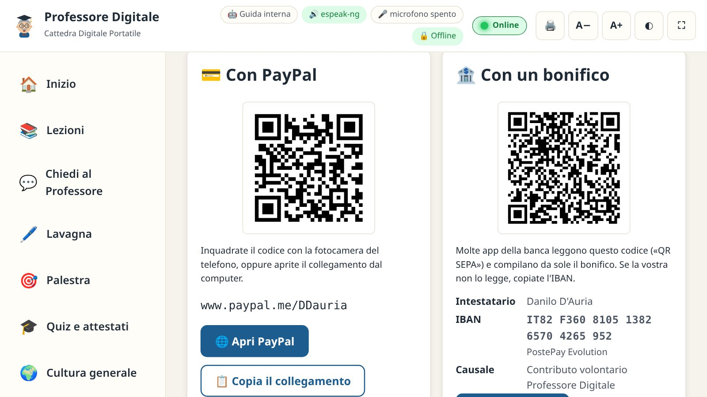
Figura. La pagina «Sostieni il progetto» con i codici QR per PayPal e per il bonifico.
💳 Con PayPal www.paypal.me/DDauria Inquadrate il codice con la fotocamera del telefono.
Il QR del bonificoÈ un «QR SEPA»: molte app della banca lo leggono e compilano da sole intestatario, IBAN e causale.
Se la vostra app non lo riconosce, copiate l'IBAN a mano o con il pulsante del programma.
Per la vostra sicurezzaPer fare un contributo non servono mai codici, PIN o password e nessuno del
progetto ve li chiederà, né al telefono né per messaggio. Controllate sempre che l'intestatario sia Danilo D'Auria.
Servizi su richiesta
Danilo offre anche installazione e configurazione del Professore Digitale, recupero di vecchi PC con FeniceOS,
corsi e laboratori per gruppi, associazioni, scuole e biblioteche. Per un preventivo: danilodauria.site@gmail.com.
Per le prestazioni pagate con PayPal si usa l'opzione «beni e servizi».
Tecnologia gentile, per tutti.
Il Professore Digitale nasce per democratizzare l'accesso al digitale là dove serve di più: nei centri anziani, nelle scuole, nelle associazioni
e nelle case, anche senza connessione e su computer che altrimenti finirebbero in discarica — da Windows XP a Windows 11, e su Linux.
Lezioni, prove senza rischi della vita digitale, la spiegazione delle lettere difficili, la ginnastica per la mente, quiz con attestato, cultura generale, voci italiane naturali,
un quadro dell'aula con la mano alzata e i tablet, un registro per i corsi e un'app per il telefono: tutto sui vostri dispositivi, niente nel cloud.
È software libero: potete usarlo, copiarlo, migliorarlo e condividerlo. Se vi è stato utile, fatelo conoscere e, se volete, sostenetelo (capitolo 30).
Danilo D'Auria Tecnico IT & Divulgatore Digitale per il Sociale danilodauria.site@gmail.com
Professore Digitale 3.4.0 per Windows Licenza MIT · Ottobre 2026